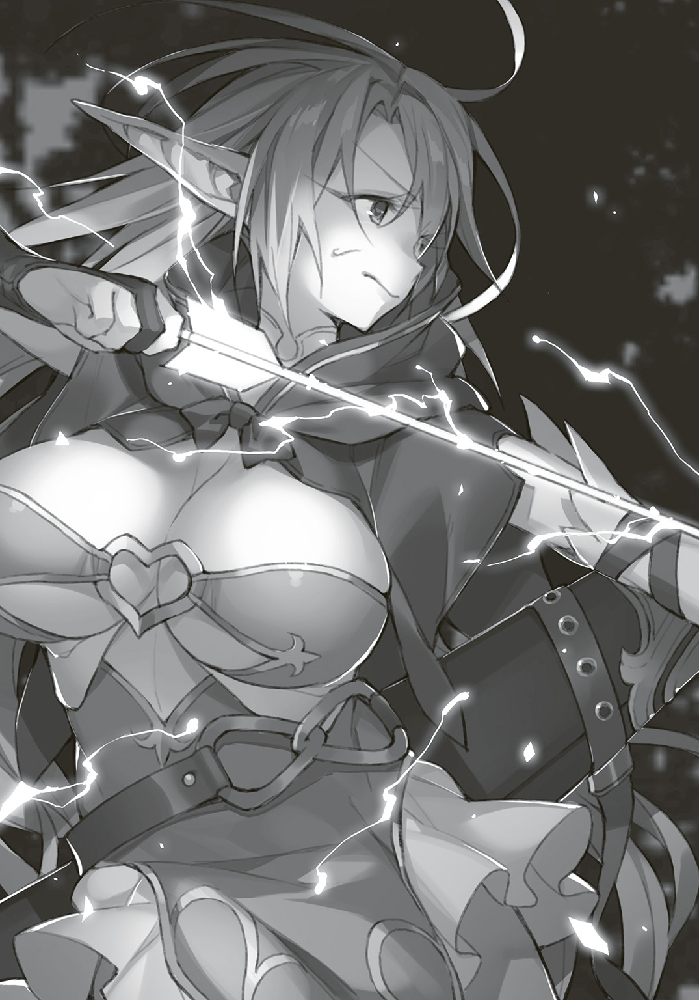

| セーブ＆ロードのできる宿屋さん 2 ～カンスト転生者が宿屋で新人育成を始めたようです～ | |
| 稲荷竜 | |
この本は縦書きでレイアウトされています。
また、ご覧になる機種により、表示の差が認められることがあります。
 ダッシュエックス文庫DIGITAL
ダッシュエックス文庫DIGITAL
セーブ＆ロードのできる宿屋さん２
～カンスト転生者が宿屋で新人育成を始めたようです～
稲荷 竜
『銀の狐亭』。
金銭に困っていたホーは、その宿屋が『料金後払い』だということを思い出し、
宿泊を決める。
冒険というのは金のかかるものだ。武装代、治療費、とにかく金額がかさむ。
宿代をねぎってやろう。あわよくば踏み倒してやろう。そんな意思さえ持っていた。
だからもちかけられた『修行』も、ケチをつけるために受けることにしたのだが、
待っていたのは想像だにしない、拷問のようなものだった。
修行の中で精神を壊していくホー。
しかし、効果は想像以上だ。
最初は借金返済できる程度の強さが目的だった彼女も、
次第に『それ以外の目標』に目を向けるようになっていくのだが......。
「ああん？ なんだよロレッタ？
あたしが『銀の狐亭』に来た当時の話？
......あきれたヤツだねえ、あんたも。そんなことを聞くためにわざわざあたしの長風呂に付き合ったってのか？
人間族はそんなに長く風呂に浸かれねーだろ？
風呂好きなので大丈夫？
にしたってドライアドのあたしに付き合うなんてーのは、正気の沙汰じゃねーな。
ドライアド。
......なんだよ知らねーのか。
まあ、あんまし有名な種族じゃねーからな。
王都みてーな人工的な場所には、ただでさえほとんどいねーし。
全体数も少ないからな。
でも、ギルドマスターを見たことぐらいはあんだろ？
そうそう。
緑色の髪がぶあーって長くてさ。
肌が褐色で。
ちんちくりん。
たしかに似ているな、だって？
そりゃ似てるさ。
同じ種族ってだけじゃねーしな。
髪の色？
ああ、ババアは緑で、あたしは白だからな。
それは単純に年齢の問題だよ。歳とりゃ緑になる。
人間だって歳とったら白髪になるんだろ？ それと同じさ。
あ？ ギルドマスターを『ババア』呼びは失礼？
いいんだよ。
......あのババアはあたしの祖母だよ。あたしは、ギルドマスターの孫娘ってわけだ。
『大変そうだな』？
......ああ、ギルドマスターの孫ってことで、色々あったんじゃないかって？
出自を聞いて真っ先に『大変そう』って思うあたり、貴族様だな。
普通は『うらやましい』とか言うところだぜ。
......たしかに大変だけどよ。
その分、得もしてきたつもりだから、チャラだよ。
え？ なんだ？
......中腰でずっと風呂にいるのは辛くないかって？
なんだ今さら......慣れてるからいいよ。ここの風呂は、あたしには深いからな。
風呂番がアレクさんだった時は、あたしだけが湯船に残る時間になると、それとなく湯量減らしてくれてたみてーだけどな。
今の風呂番はモリーン嬢ちゃんだろ？ まだまだだな。
......膝の上に来いだと？
ロレッタちゃんよ、あたしを子供だと思ってねーか？
これでもあんたより年上だよ。
まあ、行くけどさ。
......なんだよ。あんたが言ったんだろ？
いいじゃねーか。ドライアドだって座って風呂に入りてーんだよ。
......で、なんの話だったかな。
あたしが『銀の狐亭』に来た当時の話か。
膝を借りてる礼に、少しなら話してやるぜ。
......ま、きっかけは、あたしがギルドマスターの孫ってあたりさ。
どうしても色眼鏡で見られる。基本的に強いヤツが偉い業界だからな、冒険者は。
当然、ギルドマスターだって、強さで成り立つ。
それだけならいいんだが......
ギルドマスターの家族で、冒険者やってると、どうしても比べられるんだよ。
しかも今のババアじゃねえ。全盛期のババアとな。
うちのババアは人類で初めてダンジョンを二つ制覇したとかいう化け物だぜ？
......あ、ああ、うん、まあ。そうだな。今のあたしたちにとっちゃあ、ダンジョン二つ制覇は化け物じゃねーけどさ。もっとヤバイなにかがこの宿にいるしな。
でも当時の感覚だと、化け物だったんだよ。
で、あたしは弱かった。
それが嫌で強くなりたかった。ババアと並ぶか、越えるぐらいな。
それと......当時抱えてたちょっとした借金でな。
......早くにババアのところ飛び出して冒険者やってたんだよ。
焦って難しいダンジョンに挑みまくって、治療費貧乏さ。
装備をよくすれば強くなれるだなんて勘違いして、武器防具もそろえたなあ。
特にドライアド用の武器はオーダーメイド品しかねーしな。
あたしら髪の毛で戦うから。
髪の毛切られるといてーんだよ、ドライアドは。伸ばしっぱなしだ。その代わり丈夫だがな。
......ああ、心配すんな。今ではもう、借金も綺麗に片付いてらあ。
......なに、本題？
あ、ああ......あたしが受けた修行内容を聞きたかったのか。
そ、そ、そう、そう、そうだな。
たいしたことは、や、や、や、やって、な、な、な、ない、ない、ぜ。
ふ、震えてる？
馬鹿言うんじゃねえ。あたしはこの宿の最古参だぜ。修行とか、もう、慣れてんだよ。
......慣れてんだよ！
だから、余裕で、教えてやるぜ！
あたしがどんなに余裕で修行を乗り越えたかをな！
で、でも、ちょっと待ってろ......なにぶん三カ月も前のことだからな。
思い出すから。
......覚悟を決めるとかじゃねーよ！
心の傷と向き合うわけでもねーから！
だから、悪いが、ちょっとだけ回想する時間をくれ。
少し長くかかっても、決して恐怖と向き合う覚悟をしてるわけじゃねーからな！
......あたしの中に、覚悟はとっくにあるんだ。
あたしが三カ月前の修行で手に入れたのは、まさにそれなんだから」
○
「おうおう、ここが『銀の狐亭』か！ ボロい宿だな！ 泊まってやるから宿帳出せよ！」
三カ月前。
ある日の昼下がり。
ドライアドの少女は、そのような第一声をあげながら宿屋『銀の狐亭』に踏み入った。
ほんの小さな子供のような体軀。
褐色の肌。
長すぎる白の髪には、ごちゃごちゃとアクセサリーがついていた。
武器だ。
髪の毛を手足のように操るドライアドは、髪に武器をつける。
それにしても、彼女の髪には武器がつきすぎではあったが。
細い体を覆う鎧も、また無骨なものだ。
顔以外の全身を隙間なく覆うフルプレイトメイル。
防御力は高いが、動きにくい。
実際、彼女は鎧と武器の重量に負け、体を引きずるように歩いていた。
宿屋の受付には、一人の男性が座っていた。
年齢不詳な男だ。エプロンに丈夫そうなシャツという、労働者の格好をしている。
「いらっしゃいませ。ご利用ありがとうございます。『銀の狐亭』にようこそ」
男は微笑み、あらかじめ決まっていたのだろう文言を言う。
そんなやりとりはまだるっこしいとばかりに、少女はカウンターに詰め寄る。
「ここは宿代後払いってー話だが、本当か？」
「そうですね。冒険初心者の支援を基本業務の一つにしておりますので、そのように」
「いいじゃねーか。気に入った」
ドライアドの少女は、今、金銭に窮していた。
ダンジョンで負った怪我の治療費。
強くなるため装備に注ぎ込んだ金銭。
......だから。祖母からはなんだか色々言われていたような気もするが......かすかに記憶に引っかかっていた、この宿屋に来ることにしたのだ。
なぜって、彼女は、この宿屋の情報を『料金後払い』しか覚えていなかったから。
宿帳がカウンターに置かれる。
彼女はペンを片手に、ページをめくった。
そして、悪態をつく。
「ハッ！ なんだよこれ！ 全然客が泊まってねーじゃねーか！」
「そうですねえ。場所が悪いのか、宣伝が悪いのか、あまりご利用いただけてはおりません」
「サービスが悪いんじゃねーの？」
「そうですね。向上の余地はあるかもしれません」
「おいおい、いいのかよこんなとこ泊まって。ベッドが固くて眠れたもんじゃねーとか、すきま風が吹きすぎて表同然だとか、メシがまずいとか、そういうこと、あるんじゃねーの？」
「そんなことはないですよ」
「ほんとかあ？」
「はい。それは実際にご利用いただければ、わかるかと」
「そこまで言うなら泊まってやるけどな。悪い点が見つかったら宿代はまけてもらうぜ」
「かまいません」
「言質はとったぞ」
心の中で『よっしゃあ！』と言う。
実のところ、なにかてきとうに文句をつけて宿代を安くしようと、彼女は思っていた。
金がないのだ。
あるいは、この情けなさそうな男が相手なら、踏み倒しも可能だろう。
そんなことを考えながら宿帳に名前を記す。
すると、その書かれた名前を見て、男が首をかしげる。
「ホーさん、ですか？」
「なんだよあたしの名前に文句でもあんのか？」
「いえ。ひょっとしてあなたは、ギルド長のお孫さんでは？」
「............だからなんだよ。文句あんのか？」
「なるほど。申し遅れました。俺は、アレクサンダーという者です。アレクとよく呼ばれますが、聞き覚えは？」
「なんでたかが廃れてる宿屋受付の名前を、あたしが知ってなきゃいけねーんだ」
「そうですか。あと、一点、間違いが」
「ああ？」
「俺は受付ではなく、主人です。『銀の狐亭』主人の、アレクと申します」
「......」
たぶん、聞き覚えはあるのだろう。
この宿の話は、祖母から聞いていたのだ。
宿屋主人と祖母が知り合いでも不思議はない。
だから、祖母が彼のことを話題に出していたとしたら、名前も言っていたと思う。
ただ、ホーは祖母の話に関心がなかった。
くどくどうるさいだけのババアだ。
話をされても九割方聞き流すような癖がついている。
そして祖母の知り合いも『祖母の知り合い』というだけの理由で軒並み気にくわない。
だから吐き捨てるように言った。
「知らねーな。それに、なんだよ、ババアと知り合いだからなんなんだ？ あたしの態度が悪いってチクろうってか？ ハッ、お客様を脅そうってんなら、ずいぶんな宿屋だな」
「そういう意図はございません。ただ、『修行』のこともご存じなのかと思いまして」
「修行？」
「この宿は冒険者支援業務の一環として、初心者の方に修行をつけているのです。ステータスを拝見したところ、まだレベル二十そこそこのようですので修行をご希望かなと思いまして」
「ステータス？ なんだ、難しい単語であたしを煙にまこうってか？」
「......いえ、お気になさらず。とにかく、修行が目当てでいらしたのですか？」
ホーは考える。
修行。
いかにも宿屋らしからぬ業務だ。
ならば受けてやろうと思った。
駄目な点を見つければ、それだけ宿屋に対するクレームも増える。
そうすれば、踏み倒さずとも宿代をゼロにできるかもしれない。
だが、その前に一つ、妙案を思いつく。
「いいだろう。修行、受けてやるぜ」
「ご利用ありがとうございま――」
「おおっと待ちな！ ただし、あたしは自分より弱いヤツに鍛えてもらおうだなんて思わねーぞ。あたしに修行をつけようってんなら、あたしと勝負して負かしてみな！」
『修行前の実力審査』。
そういった大義名分で、このひょろい男をボコボコにしようと、ホーは考えた。
だいたい、ケンカでも、こてんぱんにやられた記憶は残るものだ。
一度メッタメタに負けさせれば、宿代減額の一助になるかもしれない。
『こちらに修行をつけようという者が、弱いはずがない』と思う者もいるだろう。
しかし、だいたい世間で『師匠』だの『教官』だの呼ばれている者は、『育成方法を知っているだけの弱者』であることが多い。
剣の腕は一流だが実戦では三流だとか。
試合形式には強いがケンカでは勝てないだとか。
訓練を卒業しただけで、別に強者ではないだとか。
そういう者も、多いのだ。
だから相手が承諾した瞬間、攻撃をしかけよう。奇襲でも勝ちは勝ちだ。そう思いつつ、ホーはアレクがうなずくのを待って。
「勝負をする前に、こちらから一つ条件を出しても？」
微妙に機先を制されるかたち。
ホーは苛立って応じる。
「なんだよ」
「戦う前に、セーブをしてください」
「......はあ？」
思いっきりいぶかしげな視線を向ける。
アレクは気にした様子もなく、手を横にかざした。
すると、彼の手の方向に、謎の物体が出現する。
ほのかに発光する球体。
宙に浮き、落ちてこない未確認物体。
「このセーブポイントに向けて『セーブする』と宣言してください。こちらから出す条件はそれだけです。セーブさえしていただけたならば、どのような形式でも、何回でも、勝負をいたしますよ」
怪しい儀式を持ち掛けられた。
呪いでもかけるつもりだろうかとホーは警戒するが......
ここまで来て、引き下がるのも格好がつかない。
「わかったわかった。テメーがそれで満足するならやってやる」
「ご協力ありがとうございます」
「その代わり、そっちも、今言ったことを守れよ？ どのような形式でも、何回でも......たしかに聞いたからな」
「はい」
「ふん。じゃあ、行くぞ。『セーブする』――ってなあ！」
いきなりの攻撃。
武器をつけていない箇所を選んで使っているとはいえ、髪による強烈な横殴り。
ドライアドは髪で戦う。そして、絶対数が少ない。
そういう理由で、手足による奇襲を警戒する者はいても、髪にいきなり殴られると予想できる者は少ない。
つまるところこの奇襲には絶対の確信があり、実際に確かな手応えもあった。
......ただし。
その手応えは、設置されたカウンターテーブルを吹き飛ばしただけで――
「言い忘れましたが、備品の損壊についても、お気になさらず。まあ、言うまでもなかったようではありますが」
――真後ろから、そんな声と、頭を、ぽん、と優しく叩く感触があって。
「......へ？ え？」
ホーは振り返る暇さえなく、頭上からのしかかるすさまじい重圧に、ぺしゃんこにされた。
○
――二回目。
「まだご満足いただけないでしょうから、もう一度、やりますか？」
「ふぁ？ へ？ あれ、あたし、今、死......」
「ロードされたので、命は大丈夫ですよ。それで、どうなさいます？ もうやめますか？」
「や、やめ、やめねーよ！ 今のはちょっと調子が悪かっただけだ！」
「そうですか。では、攻撃をどうぞ」
「やってやらあ！」
――三回目。
「おかえりなさい。さて、どうなさいます？」
「え、死......胸、穴......穴......」
「ああ、鎧に穴を開けてしまいましたね。勝負が終わったあと、必要であれば弁償します。それでどうします？ 続けますか？」
「え？ つづける？ つづけるってなあに？ ホーはね、もう、よくわかんないよ......」
「勝負ですよ。ご満足いただけるまで、何回でもお付き合いしますと、申し上げましたので」
「なんかいでも？ なんかいでも？」
「そうですよ。ところでしゃべり方が変わっていますが、大丈夫ですか？」
「ハッ!? え、えっとね............しょ、勝負中に敵の心配とは余裕じゃねーか......？」
「ひょっとして、普段の口調は無理をなさっているので？ 冒険者をやっていると、乱暴な口調に憧れる方もいらっしゃいますので、ホーさんもそのタイプですか？」
「無理とかしてねーよ！ あたしは産まれた時からこんな、えっと、うちのババアみてーなしゃべり方だ！」
「......そうですか。作戦タイムも必要でしょうし、どうぞ。そちらが仕掛けるまで、俺は動きませんから、ごゆっくり。何度やっても結果は変わりませんが納得するまでは試行錯誤も必要でしょうからね。やめたい場合は、そうおっしゃってください。どうぞ、無理をせずに」
「無理なんかしてねーって言ってんだろ！ やるぞ！ まだやる！」
――四回目。
「今回はちょっとロードまで時間がかかりましたね」
「腕、足、な、なく......血が、血が」
「ああ、鎧の手足部分が消滅してしまいましたね。先ほども申し上げましたが、必要であれば弁償させていただきますので、勝負のあと、おっしゃってください」
「あと？ あとって？」
「あなたが満足されたあとですよ。それとも、もう負けを認めて、修行に移りますか？」
「ま、負け、負けてねーよ！ まだ負けてねーよ！ だって生きて......あれ、でも、死んで？ なんであたし生きて......？」
「どうぞ、ごゆっくり。お付き合いしますよ。何時間でも、何度でも。あなたの理解を得られるまでずっと。――そう、ずっとね」
「ひっ」
「やめますか？ やめませんか？」
「来るな......来るな来るな来るな来るなあああああああああ！」
――五回目。
「あのね」
「はい」
「ホーね、おはなやさんになりたいの」
「そうなんですか」
「うん。おはな、きれいでね、すきなの。ドライアドはね、おはなさんのこえがきこえるって、おばあちゃん、いってたんだよ？」
「それは素敵なことですね」
「うん。そうなの。ね、おにいちゃんも、おはなやさん、すてきだって、おもうの？」
「はい。宿屋ですからね。花を店に飾る機会もありますし」
「うん！ おはな、きれいだもんね。おはな、すき」
「それでどうされます？ ご満足はされましたか？」
「まんぞく？」
「そうですよ。俺の強さをたしかめたかったのでしょう？ それはもう充分かなとおたずねしているのですが」
「けんかするの？」
「はい。そのようなご依頼だったかと、思いますが」
「けんかは、やだよ......こわいもん。ぼうけんしゃさん、みんな、らんぼうで、きらい。おはな、すき」
「では、これでご満足いただけたということでよろしいですか？」
「うん。よくわかんないけど、いいよ」
「そうですか。では、あなたの回復を待って、修行に移りましょう」
「うん！」
「それまでお花屋さんでも見ていましょうか」
「いいの!? ホーね、おはな、だいすき！」
「そうですか。よかったですね」
「うん！」
こうして。
ホーは五回の敗北を経て、修行を受けることになった。
○
「しょうがねえな！ ちょっと記憶はあいまいだが、承諾したことは覚えてる。大人しくアレクさんの修行を受けてやらあ！」
ホーは無事に回復した。
なので修行に移る。
場所は王都南にある断崖絶壁だ。
ここ以南を未開の地にするほど深く大きなクレバスが、見渡す限り広がっていた。
アレクとホーは、断崖側に布を敷いて、そこに腰掛けている。
これから修行だというのに、まるでピクニックのようだ。
アレクはもとより宿屋受付のままの格好だ。
ホーだって、鎧と、髪にじゃらじゃらつけた武器はなくなってしまって、今はゆるすぎるワンピースのようなものをまとっているだけの状態だった。
武装していない男女が景色のいい場所に座っている。
必然、のんきな雰囲気になろうというものだ。
もっとも、アレクの横にある謎の巨大風呂敷が、妙な威圧感を放ってはいるが......
時刻は――いつのまにか夕方だった。
ホーの記憶は若干ふわふわしている。
でもなにか、郷愁にかられるような、懐かしく胸をしめつけられる感覚があった。
記憶があいまいなあいだの自分は、アレクをとても信頼していた気がする。
いつのまにか『テメー』とか『おいコラ』とか彼を呼ぼうとしても、口に出すと自然に『アレクさん』となってしまうようになっていた。
彼の修行なら、なにか、今までの自分ではわからなかったことがわかるようになるかも。
期待と高揚を覚えながら、ホーはたずねる。
「で、修行ってなにすりゃいいんだ？」
「まずは軽く飛んでいただきます」
「............あ？」
「次に豆を食べていただきます」
「..................まめ？」
「それできっと夜ぐらいまでかかるでしょうから、今日はそれで終わりましょう。帰り道で軽く明日の予定なども話させていただきます」
「飛ぶってなんだ？」
「ジャンプです」
「はあ、ただジャンプすりゃいいのか？」
「そうですね。あとは重力が勝手にやってくれますので」
「ちょいちょい意味わかんねーが......ずいぶんゆるい修行じゃねーの。それとも宿屋経営の片手間にやるんだからこんなもんか？」
「そうですね。なるべくゆるめにしてはいますよ。修行でもなんでも、長く続けることが一番大事ですからね」
「ああ、長く細くな。そういう方針で宿代を稼ごうって魂胆か」
「強いて申し上げるならば長く太くですかね。一度しかない人生ですから。いけるギリギリまでいきたいじゃないですか」
「......どうにも会話が嚙み合ってる気がしねーが」
「ところで本格的な修行を始める前におたずねしたいことがあります」
「なんだよ」
「あなたの目的です。修行で、どの程度まで強くなりたいのか、教えていただけますか？」
「あー、借金返せりゃいいかな」
「借金？」
「......しまった」
言ったあとで後悔する。
仮にも相手は宿屋主人だ。そいつに『借金をしている』なんて素直に言ったら、支払い能力を疑われる。
実際に支払い能力はない。今は借金の返済で手一杯だ。
しかし他に答えるべき目標もなかった。
目の前のこと以外を考えるのは面倒くさいし、どうでもいい。将来の展望などない。
そのような発言をどう思ったのか、アレクは変わった様子もなく、笑っている。
「なるほど。ちなみに借金の額はどの程度なのですか？」
「......返済プランは、二日に一回、レベル三十相当のモンスター討伐クエストを達成して、コツコツ三カ月かけて返すことになってる」
「相当な金額ですね」
「......利息分でふくらんでるんだよ」
「ちなみにですが、お見受けしたところ、あなたはレベル二十半ばぐらいでしょうか」
「間違ってねーよ」
「レベル二十半ばのあなたが、二日に一回、レベル三十相当のモンスター討伐クエストをしなければならない状況だったというのは、かなり違和感を覚えますね」
「毎日レベル二十のクエスト受けるより楽だと思ったんだよ。それに......自分よりレベルの高いダンジョンに挑んだ方が、手っ取り早く強くなれんだろ？」
「無理をして強くなりたい理由でも？」
「......ババアがギルドマスターだからだよ」
「なるほど。ギルド長を越えたいと」
「......別にそんなんじゃねーよ。ただ、ババアより成績が悪いと周りがうるせーからな」
「立派な目標です」
「......ハッ。これは目標じゃねーな。ただの呪いだ。偉大なギルドマスターを越えろ！ 血縁なんだから追い越せ！ さもないとお前はいつまでも『ギルドマスターの孫』だ！ ......そういう呪いだよ。クッソくだらねー、な」
「そうですか。ところであなたのおばあさま、すなわちクーさんがダンジョン制覇を成し遂げたのは、五十年前だそうですね」
「あ？ ああ、そうみてーだが......」
祖母を名前で呼ばれて、一瞬、誰のことかわからなかった。
普通、人は祖母を『ギルドマスター』と呼ぶ。ギルドという組織は冒険者ギルド以外にも存在するが、ギルドマスターと言えばクーを指すぐらいに名が通っているのだ。
それにホーは自分の祖母が決して愛想のいいおばあちゃんでないことを知っている。
乱暴で、むやみに迫力があって、少なくとも気安く『クーさん』などと呼ばれるような人柄では絶対にない。
......家族にさえ厳しい、無愛想な、クソババアだ。
そのババアをこんなに親しげに名前で呼ぶなど、アレクは何者なのか？
改めてそんな疑問がわいた。
まじまじとアレクの顔を見る。
彼は笑ったまま、ホーの知らない、祖母の話を語る。
「五十年前、レベルというものの基準は現在とだいぶ異なったと聞きます。簡単に言ってしまうと正確性が足りなかったのです。レベル十と判断されたが実質的な強さは現在で言うレベル五相当の者がいたり、同じ強さでも試験官によってレベルをバラバラにされたりということもあったようですね」
「そうなのか」
「はい。ダンジョンレベルはもっとひどかったようですね。当時からダンジョンレベルを決めるのは『調査』を担当する貴族だったようなのですが、どうにも、『難しいダンジョンを低いレベルだと判断する』ことが、格好いいと思われていたらしく、こちらも正確ではありませんでした」
「......なんだそりゃ」
「貴族はダンジョンを『探索』しませんからね。自分が『レベルが低い』と判断したダンジョンで冒険者が死ぬことを、『あの程度のダンジョンで死ぬなどと情けない』と笑うのが、当時の楽しみ方だったようですよ」
「............クソすぎだろ」
「そういった制度を改革したのが、あなたのおばあさまです」
「......」
「ダンジョンレベルの適正な審査と、冒険者レベルの正確な審査を徹底するため、多くの基準を設け、それを王室ダンジョン調査局に認めさせました」
「......あのババアがか？」
「はい。今、冒険者たちが自分のレベルとダンジョンレベルを照らし合わせ、正確なリスクコントロールができるのは、あなたのおばあさまの功績なのですよ」
「......そんなの、あのババアは一度もあたしに言わなかったぞ」
「いちいち言う理由はありませんからね。隠す理由もないでしょうが。......まあ、クーさんの性格を考えれば、『孫にそんな話をするのは自慢みたいで恥ずかしい』といったところでしょうか」
「あんたは何者なんだよ。なんでうちのババアのことそんなに詳しいんだ」
「一時期、彼女に育てられましたからね」
「............はあ？」
「なので、あなたは俺にとって、ある意味で姪っ子みたいなものです。あなたのお母様は、俺の姉さんみたいなものです。実はあなたが赤ん坊のころに会っています。まあ、ドライアドは成長の遅い種族なので、赤ん坊期間も長いですから。結構一緒にいましたけど、記憶にないでしょう」
「......」
「話が逸れましたが――おばあさまは強さによってのみ、現在の地位にいらっしゃるわけではないということです」
「......だからなんだっつーんだよ」
「あなたの目的が『ギルド長を越える』の場合、それは、強さによってのみ成し遂げられることではないと申し上げたかったのです」
......そんなこと、わかっている。
だから、ホーはくだらなさそうに吐き捨てる。
「ハッ。あんたもババアの味方かよ。あたしの前でババアにおべっか使ったって、なんの得もねーぞ」
「俺は、噓と、ハッタリと、思ってもいないおべっかが苦手ですので。真実をありのまま、申し上げているだけですよ」
「じゃあなんだよ。あたしじゃギルドマスターを越えられねーって、言いたかっただけか？」
「いいえ。強さによってのみ越えることはできないと申し上げたまでです」
「方法でもあんのか？」
「さて」
「......んだよ」
「ただ、同じ気持ちになってみるのは、いいかもしれませんよ？」
「どういう意味だ？」
「あなたもダンジョンを制覇してみては？ とりあえず、一つから」
にこにこ。
笑顔のままアレクは言う。
ホーは首をかしげた。
「簡単そうに言うんじゃねーよ。......冒険者としての最終目標としてなら、『ダンジョンを制覇』ってのも悪くはねーかもしれねーけどさ」
「いえ、三日でやりましょう」
「..................えっ......ほ、ホーは、だんだん、よくわかんなくなってきたよ」
「口調が崩れていますが、大丈夫ですか？」
「む、無理とかしてねーから！ あたしは産まれた時からこんな口調だっつってんだろ！」
「あなたの産まれた直後を知っている俺に、どうしてそんな噓をつくんですか」
「うっ、うるせーな！ とにかく！ まずはあんたの修行が本当に効果あるか確かめてやる！ ダンジョン制覇を三日で？ ハンッ！ できるもんならやってみやがれ！」
「そうですか。わかりました」
にこり、と小首をかしげながら笑う。
ホーは、なにか自分が、とんでもないことを口走ったかのような気がしてきた。
だから慌てて言う。
「さ、最初の修行は、ジャンプすりゃいいんだよな？」
「そうですね」
「それでどんな効果が出るのかさっぱりだが、とりあえずはあんたの指示に従ってやるよ。指示と違うことをしたから効果がなかったなんて言い訳させたくねーからな」
「効果はご心配なく。でも、その前にセーブをお願いします」
「は？ なんでだ？ ただジャンプするだけだろ？」
「そうですよ。そこの絶壁に向かって、ただジャンプしていただくだけです」
「......えっ、やだよ。いみわかんないもん。そんなことしたら、ホー、しんじゃうよ？」
「はい。ところで口調――」
「無理はしてねーからな！ っていうか『はい』じゃねーだろ！」
「いいえ」
「勇気を試せってことか？」
「いいえ」
「丈夫さを試せってことか？」
「......いいえ」
「試すもんは特にないのか？」
「はい」
「じゃあただの自殺じゃねーか！」
「はい」
「や、やだよお......」
ホーは追い詰められた表情で、いやいやと首を左右に振る。
アレクはかまわずセーブポイントを出現させて笑顔のまま言う。
「では、セーブをお願いします」
「な、なさけとか、ようしゃとか、ないの？」
「ありますよ。ですので、アドバイスが」
「なあに？」
「下手に髪を使って落下速度を緩めないでくださいね。死ねませんから」
「......」
「さ、どうぞ」
ホーは首を何度も何度も横に振った。
アレクはただ一つだけ、うなずいた。
行け、と。
○
「そろそろ明日の予定について、お話ししましょう」
「うん。あしたもいっぱい、おはな、みえるかな？」
「ホーさん？ まだ戻られないので？」
「......ハッ!? な、なんだ!? ここはどこだ!?」
ホーは慌てて周囲を見回す。
ここは――『銀の狐亭』だろうか。
食堂らしき空間だ。
時間はいつのまにか夜になっており、自分はカウンター席に座っていた。
目の前にはアレク。
奥の方、構造的に考えて厨房となっている場所でも、誰かが動いている気配がある。たぶんこの宿のコックだろう。
ホーは目の前に置かれていた水を飲んだ。
ひどく記憶があいまいだ。
でもなんだか、とても楽しいことがあったような気はした。
満開の花畑。
そこで楽しく、誰か懐かしい大人と遊ぶ夢。
......だというのに、体がかすかに震えている。
怖いことがあったのか、楽しいことがあったのか、どちらなのだろう。
ホーはたずねた。
「......すまねえが、あたしはどうしてここにいるんだかわかってねえ。説明してくれ」
「ここは『銀の狐亭』の食堂です。あなたは、南の地の果てから俺と二人で歩いて戻ってきました。本日分の修行はすでに終わりまして、これから夕食をとろうというところです」
「そうなのか......何回か崖から飛び降りた記憶はあるんだが、その後がどうにも......」
「ついでに明日の修行の説明もさせていただきます。本来は帰り道にするべきことだったのですが、帰り道、あなたはお花摘みに夢中でしたので、楽しそうなところをお邪魔するのも悪いかと思いまして、後回しとさせていただきました」
「......お花摘み？」
「はい。道端に咲いているお花を摘んで、ブーケなどを作ることです。あなたが摘まれたお花は、そちらの花瓶に飾っておきました」
アレクが手で示す。
ホーは、示された先である、宿屋入り口の方向を見た。
受付カウンターの上には、たしかに無骨な陶器の花瓶がある。
そこに、小さなかわいらしい花が、たった三本だけ、入っていた。
花瓶のゴツさと花のささやかさがまったく合っていない。
......が、その前に。
「なあ、アレクさん」
「なんでしょう」
「あたしはこの宿から出る前に、あの受付カウンターをぶっとばしたと思うんだが」
「そうですね」
「宿から出る時も、そのままだった気がするんだが」
「そうですね」
「いつの間に直したんだ？」
「妻が五分でやってくれました」
「......妻ぁ？」
「奥で料理をしている者です。料理、人の治療、家屋の修繕など細かい調整が重要な作業は、妻が得意ですからね」
「料理と人の治療と家屋の修繕をシレッと同列に並べるんじゃねーよ。たぶん全然違うぞ」
「魔力をこめすぎると爆発する点は同じですよ」
「っていうか料理に魔力なんて使うのか――爆発!? 人の治療で!?」
「物体に魔力を通す技術の応用で、丈夫さを上げたり、治癒したりもできますからね。剣士の方はみなさん、規模の大小はあれど使っている技術ですよ。ただ通す魔力が多すぎると、破裂したりします。ご存じでは？」
「そうだけどそうじゃねーよ！ あたしが言いたいポイントとずれてる！ 人の爆発とかいう大惨事の詳細を教えろっつってんだよ！」
「まあ、そういうこともあったということです。俺も妻も、最初からできたことなんて、数少ないですからね。少しずつ失敗して、自分を鍛えていったんです」
「っていうか爆発した人はどうなったんだよ!?」
「ご安心ください。妻の料理はとても美味しいですよ」
「爆発した人は！」
「生きていますよ。セーブしてましたから。ちなみに爆発したのは俺です」
爆発したのは俺です。
なかなか言えるセリフではないように、ホーには思えた。
「......あんたと話してると頭がおかしくなりそうだ」
「ところでお夕食はなにを召し上がられます？ 苦手な食材などあれば、先におっしゃってくださいね」
「好き嫌いはねーよ。任せる。ああ、値段は安くな」
「わかりました。では、そのように」
アレクが一礼して奥へとひっこむ。
ホーは、受付の花瓶を見た。
「お花摘み、ねえ。あたしがか？」
自分の行いらしいのだが、信じられない。
それこそ小さなころは、花が好きでよくやっていたような気がする。
......今でもブーケの作り方は覚えているだろうか。
ホーがそんなことを考えていると、奥からアレクが戻ってきた。
「お待たせしました」
「......はえーな」
「当店ではお客様をお待たせすることのないよう、常に五分以内にお食事を提供できる環境を整えております。......メニューにもよりますが」
「ってことはずっと火をおこしっぱなしかよ。危ねーなあ」
「システムキッチンですので」
「......はあ？ なに？」
「いえ。とにかく安全ですよ。さ、どうぞ」
目の前にコトリと置かれたのは、なんの変哲もないプレートだった。一枚の皿の上に多数の料理が乗っている、朝食などでよく見るアレである。
メニューは切られた楕円形のパン、野菜をペーストにしたとおぼしきディップ、中央にはオムレツと分厚いベーコン、彩り豊かな生野菜のサラダ。
......なんの変哲もないというのは、間違いかもしれない。
新鮮な生野菜に分厚いベーコンとか、なんでこんな高級品が当たり前のように紛れ込んでいるのかさっぱりわからない。
ひょっとして高いんじゃねーか？
そう聞こうとして、できなかった。
ホーの視線は、プレート右下にある、スープ椀に釘付けになる。
それは。
それは、ごくごく一般的なスープ。
ほのかに色づく澄んだ液体だ。
ただし香りは濃厚で、複数の材料がとけこんでいることを容易にうかがわせた。
うまそうだ。
そう思っていいはずなのに――吐き気を覚えた。
そのスープに使われている材料を認識した瞬間に、頭がスパークするような衝撃があった。
小さな、球状の物体。
スープを吸って瑞々しく輝く、それ。
プチッと歯ごたえのある外殻に対し、内部はクリーミーで、咀嚼すると楽しい味わいがあり、なにより満腹感を多くあたえてくれる、それ。
――豆。
ホーは、豆を見ただけで、自分の体が尋常ならざるほど震えるのを感じた。
だめだ。
豆を食べることはできない。
見るだけで、おそろしい――いや、おぞましい。
思い出してはいけない記憶が甦る。
それは自己防衛のために捨て去っていたはずの悪夢。
王都南の絶壁。
大きな風呂敷包み。
笑う、男。
そいつが、言う。
――死ぬまで。
――死ぬまで、豆を食べることが。
――修行。
「やだ......やだよ......おまめさん、やだよ......やだ......もうやめてよ......もうむりだよお......いっぱいで、はいらないよお......」
「どうされました？」
「えっ？ あっ？ うっ？ い、いや、その、なんか......よくわかんねーが......と、とにかく、豆はだめだ。それは、無理だ。下げてくれ」
「はあ。では別なスープをお持ちしますね。でも、おかしいな」
「なにがだ？」
「先ほどはいくらでも食べられたのに、急に駄目になるものなんですね」
「先ほど？」
「修行で食べたでしょう？ ああ、それとも記憶があいまいなんでしたっけ。ロードの影響かなあ......でも俺の場合はそんな症状起こらなかったし......どうなんだろ」
アレクはスープ椀を持って厨房へひっこむ。
記憶はあいまいだが、ホーは理解した。
「その修行のせいだな、絶対......」
そうに違いない。
知らないあいだに自分が造り替えられていることを知って、ホーは身震いした。
○
「明日はダンジョンで金策のご予定でしたかね？」
ホーが食事を終えたタイミングで、アレクが言う。
相変わらず客のいない、寂しい食堂だ。
ホーは食後の飲み物を口にしながら、うなずいた。
「そうだな。二日に一回、レベル三十以上のダンジョンを探索する......じゃないと借金返済が間に合わねー。ということで悪いが、明日は修行はナシだ。いやあ、残念だな。せっかく肩慣らしがすんだとこで、これからやる気出そうと思ってたのによ。明日は修行ナシかあ。やれやれだぜ」
「いいえ」
「......しゅぎょう、なし、だよ」
「いいえ」
「だって、なしだもん。たんさくしないとだめだもん。おかねかせがないとだめだもん」
「金策と修行は同時に行えないものではありませんよ」
たしかにそうだった。
でも、ホーはふるふると無言で首を何度も横に振る。
アレクはうなずいて、続ける。
「大丈夫ですよ。あなたにできることしか、やっていただきませんから」
「ふつうのひとはね、じさつ、できないよ？」
「できたじゃないですか」
「結果論じゃねーか！」
「......結果的にできたなら、それは『できること』ということでは？」
アレクは首をかしげた。
そうじゃない。
そうじゃないのだけれど、ホーにはうまくこの店主に説明することができそうになかった。
人の道理をモンスターに説くのは難しい。
「......で、あたしになにをやらせるつもりだ？」
「ダンジョン制覇を」
「......あ、あのね、アレクさんね、ホー、ちゃんと、すうじ、かぞえられるよ。あした、まだ、しゅぎょう、ふつかめだよ？」
「そうですね」
「みっかって、ゆったじゃん。みっかで、せいはって、ゆったじゃん。なんでやくそく、やぶるの？ やくそく、やぶったら、だめなんだよ？」
「それは明日行くダンジョンを攻略していただくのに、まる二日かかるからですよ」
「むり、むりだよお」
「大丈夫です。できることしか、やっていただきませんから」
「だからあ......！ ひとは、じぶんで、いのちをすてられないって、ゆってるじゃん......！」
「人は死にものぐるいになれますよ。そして、死にものぐるいで行ったことは、だいたい成功するものです」
「しんじゃうよお」
「大丈夫です。セーブはしていただきます」
「しにたいよお......」
「人は簡単に命を捨ててはいけませんよ」
このひとやばいよお。
ホーはもう泣きそうだった。
今まで冒険者をやってきて積み上げてきた自分がガラガラ崩れていく感じがする。
小さな体に、幼い見た目。このせいで弱く見られないように、さんざん乱暴者ぶってきた。
でも。
本当の化け物の前ではそんなちっぽけな強がり、まったく無意味なのだと思い知らされる。
アレクは笑う。
「明日挑んでいただくダンジョンは、レベル二十相当です」
「......お？ そうなのか？」
「元気を取り戻されましたね」
「いや、どんなむちゃくちゃな難易度を要求されるかと思っていたんだが、あたしのレベルと同じぐらいじゃねーか。......まあ、制覇が簡単だとは言わねーけど、何度も死ねるなら楽勝だな」
「はい。そうですね。今日の修行の成果もありますので、楽勝ですよ」
心強い太鼓判。
その直後、アレクはなんでもない調子で続ける。
「普通のレベル二十のダンジョンだったら」
にこにこ。
......なぜだろう。
心強い太鼓判をもらったように聞こえて、その実、まったく安心できないというか。
安全な橋をかけられた瞬間、橋桁を外されたような感じ。
ホーは聞きたくないと思いながらたずねた。
「......『普通のレベル二十のダンジョンだったら』ってなんだよ」
「明日挑んでいただく予定のダンジョンは、レベル二十ですが、『制覇者推奨』です」
「普通、制覇者推奨ダンジョンは、レベル七十以上のはずだが」
「はい。ようするにそのダンジョンは、既存の基準では危険度を測定できません」
「つまりどういうこった？」
「詳しい説明は明日、します。おそらく実際にダンジョンを目の前にしないと、理解し難いと思いますので」
「やめてよお......そういうの、こわいから、やだってばあ」
「んー......しかしですね、アレを目の前にせず、いくら説明したところで、信じられないだけだと思います」
「ギルド、いこう？ いらい、うけよう？ そしたら、ギルドのひとが、せつめいしてくれるよ？」
「ああ、依頼は今夜、俺が代わりに受けておきますから、明日朝一番でダンジョン直行です」
「んなことできるわけあるか」
さすがに正気に戻る。
ギルドで勝手に他の人の依頼を受けることはできない。
依頼を受ける際は、受けるメンバー全員がその場にいることが条件だ。
ギルドマスターの娘でなくても知っている常識だった。
しかし、なんでもない調子で、アレクは言う。
「できますよ。あなたのおばあさまと知り合いですし」
「......知り合いだからって規則をねじ曲げるような、かわいげのあるババアじゃねーぞ」
「実を言えば、『クエスト委託所』の試験運用のお手伝いをさせていただいているのです」
「......『クエスト委託所』？」
「はい。ギルドは街の出口から遠いでしょう？ だからもっと簡単に冒険者がクエストを受けられるような制度を、クーさんは考えておいでなのです」
「はあ」
「ですが問題が多いのは、聞いただけでわかりますよね。冒険者の不利益になる噓の受注をする者が出たり、達成していないクエストを達成したと虚偽申告する者も現れると思います」
「まあそうだな。冒険者とその『クエスト委託所』の癒着なんかも考えられるだろ」
「はい。今はクーさんのお膝元なので、そのような噓つきを見抜くこともできますが、手広くやると起こる問題は、色々と予想されます。が、実際、どこでもクエストを受けることができれば便利になるとは思いませんか？」
「まあな。いちいちババアのいない時間を狙ってギルドに行かずにすむし」
「......その事情はあなただけのものでしょうけれど。街の端に宿をとった冒険者が、一度街の中央付近にあるギルドに行き、そこからクエストに行くという無駄手間の解消は、大きな利点です。ですからクーさんは『とりあえずやってみる』ことにしたのです」
「で、試験運用するやつにあんたが選ばれたと。ってことは『クエスト委託所』ってーのは、宿屋が兼任するもんになるのか？」
「そうお考えのようですよ。冒険者はだいたい宿屋を利用しますからね」
「なるほどな」
「実は俺の他にも何人かが、すでに『クエスト委託所』の試験運用を手伝っています。俺が冒険者のころに知り合って、今は宿屋主人をやっている女性も、その試験運用をしている一人ですね。聞いたことはありませんか？ 『翡翠のゆりかご亭』という宿です」
「......街一番の高級宿じゃねーか。そこの主人と知り合いとか、意外と顔広いなあんた」
「長くやっていましたから」
「つってもまだ二十代とか三十代だろ？ 見た目だけならそんなもんに見えるが。雰囲気はともかくとして......」
「ああ、そう見えます？」
「違うのかよ」
「実のところ自分の正確な年齢を知らないんですよね。ちょっと記憶が抜けてる期間がありますもので」
「......意外と苦労してんな、あんたも」
「よく言われます。『意外』だと」
アレクは苦笑する。
ホーも、ようやく笑えた。
「......まあ、ダンジョンの全貌はすげえ気になるが、あたしにも制覇できる算段なんだろ？ 死亡前提とはいえ」
「んー......」
「違うのかよ」
「いえ、制覇できる算段ではありますよ。ただ死亡前提かどうかは微妙なところです。セーブはしていただきますが」
「そうなのか？ じゃあますます楽勝じゃねーか」
「かもしれませんね。俺としては、死にながらの方が楽な場合もあるので、なんとも言えませんけれど。楽かどうかは主観ですしね。俺とあなたの基準はきっと、違うでしょう」
「いや、あんたとあたしの基準が違うんじゃねーよ。人とあんたの基準が違うんだ」
「みんな特別なオンリーワンですからね」
「そういう話じゃねーよ」
「ともかく、明日の予定はそのようにしようと思っていますが、いかがでしょうか？」
「悪くねーな。制覇賞金なら、借金も一発で返せるだろうし」
「では、決まりですね」
「ああ。依頼を代わりに受けてくれるってのも気に入った。ババアのいるギルドは居心地悪くてしょうがねーからな。それは素直に助かる」
「当店は駆け出し冒険者に万全のサポートをお約束しておりますので」
「死んでもいいように？」
「はい。それも、サポートの一環ですね。あとは――みなさんが、冒険者として抱いた最初の目標を達成できるように、ですかね」
「最初の目標、ねえ」
ホーは自分の中を探る。
でも、目標らしきものはなかった。
偉大なギルドマスター。
その孫。
周囲から強制されるそんな立場が嫌だから、がむしゃらにやっているだけだ。
......自分の影とかけっこをするような虚しさを覚える。
どんなに速く走っても、どんな道を走っても、振り返れば、そこにいる。
引き離すことはできず、いつでも視界にチラつく。
しかも、捨て去ることもできない。
「......ま、とりあえず『ダンジョン制覇』があたしの『最初の目標』になるのかな」
「そうします？」
「............いや。あんたの前で迂闊なこと言うのはこえーから、やめとくよ。まだ保留だ」
「わかりました。食器、お下げしても？」
「あ？ ああ。頼むわ」
アレクはホーの食べた皿や、ジョッキを持って厨房の方へ歩いていく。
ホーはその後ろ姿を見て思った。
「......あの人なら、自分の影さえぶっちぎるんだろうな」
フン、と鼻を鳴らす。
賞賛ではない。
ただ、うらやましいなと、そう思っただけだった。
○
「このダンジョンはなにも身につけないで入った方がいい場所です」
――翌朝。
本当にギルドで受け付けをせずに、ホーとアレクは目的のダンジョンまで来ていた。
ホーは手ぶらで、ゆるすぎるワンピースのようなものしか着ていない。
武装はアレクに何度か殺された時に、使い物にならない状態になっていたのだ。
一方、アレクは大きな風呂敷を背負っていた。
詳しい記憶はないが、嫌な予感しかしない荷物だとホーは思う。
ここは街の北側にある、不思議な見た目のダンジョンの前だ。
ホーの知識で『ダンジョン』といえば、だいたい洞窟を下るか、高層の建造物を上るかするものだった。
だが、目の前のこれはなんだ？
ただの、黒い空間だ。
入り口も出口も見当たらない。遠近感さえ一切ない。
黒い、物質ではない球体が山岳地帯のあいだにポツンとあるだけ。
それが、本日アレクに連れてこられたダンジョン、レベル二十にして制覇者推奨の迷宮――
「『暗黒空間』というのが、このダンジョンの名前ですね」
「......暗黒『空間』？ ダンジョンの名前はだいたい『○○の洞窟』とか『○○の塔』とか『○○の園』じゃねーか？ なんだよ空間って。迷宮のていをなしてねーじゃねーか」
「ですがご覧の通り、洞窟でも塔でもありません。ギリギリ『園』かもしれませんが、まあ、それよりは空間っていう感じでしょう？」
「そうだが......これ本当にダンジョンか？ 黒雲の塊......いや、もっと現実味のない......」
「俺の世界で似たものを探すなら、ブラックホールですかね」
「なんだよ『俺の世界』って」
「異世界から来たもので」
「............まあ、あんたならありえそうな話だが。つまりここはどういうダンジョンなんだ？ あとなにも身につけない方がいいってのはどういう冗談なんだ？」
「ダンジョンの危険度を判断する目安は大きく三つありますね？ 『敵の強さ』『構造の複雑さ』『トラップの多さ』。この三つです」
「なんだ急に」
「『敵の強さ』はご存じの通りですね。『構造の複雑さ』も、過去の膨大なデータから判断してどの程度迷いそうなダンジョンか判断します。『トラップの多さ』は、正確に申し上げれば『調査担当者が通った道にどの程度の割合でトラップが仕掛けられているか』です」
「......ババアのとこに住んでた時に、そのへんの話は腐るほど聞いてるよ」
「そうですね。このあたりはさらに細分化して基準が設けられていますが、五十年前から今まではこの三つの基準でだいたいダンジョンレベルが正確に測れました」
「そうだな」
「ところが、四つ目の基準が最近出てきたのです」
「四つ目？」
「まだ名称はついていませんが、つけるならば、『ダンジョンの構成素材』でしょうか」
「構成素材ねえ」
「最近......とは言ってももう十年近く前になりますが......発見されたダンジョンに『魔術師殺しの洞窟』というものがあります。これは、ダンジョン自体が内部の者の魔力を吸い取るという素材でできておりまして、レベル以上の難易度を誇っておりました」
「ダンジョン自体が魔力を吸収とかやべーな」
「はい。この『ダンジョンを構成する物質自体に危険性があるタイプ』は、危険回避の方法がありません。ありていに申し上げて、どうしようもないのです」
「じゃあまだ制覇されてねーのか」
「いえ。クーさんから直接依頼されて、俺が制覇しておきました」
「どうにかなってるじゃねーか」
「そうですね。死にながら挑めばどうにかなります」
「......」
嫌な予感がした。
今されてるのはまったく関係ない話ではない。
なぜ今、『ダンジョンの構成素材』の話なんかしているのか。
ホーは暗い気持ちで続きを促す。
「......それで？」
「『暗黒空間』も、ダンジョンの構成素材自体が危険なタイプのダンジョンです」
「魔力吸収か？」
「いえ」
「......じゃあ、このダンジョンの危険性は？」
「身につけたものがどんどん重くなっていきます」
「......身につけたものって？」
「武器、防具、服、その他装飾品、とにかく自分の体以外のすべてです」
「............具体的にはどのぐらい重くなるんだ？」
「情報によりますと、十分で倍になり、二十分で四倍になり、三十分で八倍になります。その後も倍々のようです。ダンジョンから出ればもとの重さに戻るようですが」
「あんたは入ったことあんのか？」
「この手の危険度が測りにくいダンジョンは、一通り依頼を受けて調査しています。ですが、俺は腕力が強いので、あまり実感はありませんでした」
「素手でプレイトメイルぶち抜くからな......」
ホーは平たい胸をさすった。
まだ穴があるような気がする。
なにを思ったのか、アレクは笑う。
「鎧については、弁償させていただきましたよ」
「ああ......助かる............ん？ 今、『ました』って言わなかったか？」
「ということで、あなたの今日のお仕事は、このダンジョンの制覇です」
「あ、ああ......話を整理させてくれ」
「どうぞ」
「つまりあんたは、装備なしでダンジョンマスター倒せって言ってるわけだ」
「武器なしで、ですね」
「どう違うんだよ......どのみち無理だろ」
「そうですね。あなたの命が一つしかないなら」
「こわいよお......やだよお......らんぼうなの、やだよお」
「安心してください。セーブできますから」
「でも、きのう、しなないかもって、いってたもん。しなないかもって、しぬか、びみょうだってホーはきいたもん」
「このダンジョンの一番簡単な攻略法をお教えしますと、裸でダンジョンマスターの部屋に直行することです。以前調査した際に俺が描いた地図もありますので、渡しておきます」
はい、と手渡される、丸められた羊皮紙。
どうやらエプロンのポケットに入れていたようだ。
ホーはそれを見て、首をかしげた。
「......なんだこりゃ。隠し部屋はあるけどほとんど一本道じゃねーか」
「そうですね。地図の正確性には自信がありますよ。マッピングはハック＆スラッシュの醍醐味の一つですからね」
「端っこにかわいいイラスト描いたのもアレクさんか？」
「それは娘が。まだ今より幼いころに描いたんですけどね、この二つ並んだ丸い顔、わかります？ 俺と妻なんですよ。ほら、お父さんとお母さんって。嬉しくてねえ。十枚ほど複製しちゃいました」
「のろけ話はあとにしてくれ......じゃあ、なんだ、ひょっとしてあたしの金策のために、修行にかこつけてサービスしてくれたってことか？」
「えっ？」
「......だって、正確なマップがあって、ほとんど一本道で、ダンジョンマスターを倒すための一番簡単な攻略法が、裸でダンジョンマスターの部屋に直行だろ？ ......そりゃあ、一発でダンジョンマスターに勝てるとは思わねーけどさ。死んでもロードさせてくれるんだろ？」
「はい。何度だってロードしていただいて結構ですよ」
「だったら楽勝じゃねーか」
「そうですね。ダンジョンマスターを倒すだけなら」
「..................は？」
「あなたの今日のお仕事は、ダンジョンの制覇です」
「あ、ああ、そう聞いた」
「でも、あなたの今日の修行は、別にあります」
「やだ。やだ」
「まだなにも説明してませんよ」
「そ、そうだな。まだ夢を捨てるには早いよな」
「夢？」
「いや......で、なんだ。修行はなにをすればいい」
「ホーさんは、ご自身の運勢をどう思いますか？」
「現状だけで言うなら最悪かな」
「ああ、ならよかった」
「よくねーだろ」
「いえ、あまり運がいいと修行にならないんですよね」
「......どういうことだ？」
「このダンジョンには、希にレアモンスターが出ます」
「......レアモンスター？」
「弱いのに、狩ると不思議なほど強くなれるモンスターです。俺が以前調査した時には、十二時間で七匹ほど出ました。まあまあの出現率ですね」
「調査で十二時間もダンジョンにこもるのか......普通は長くたって四時間ぐれーだぞ。だからダンジョンの奥の方の地図とかガバガバになってることばっかだし」
「隠し通路を念入りに探していたらつい」
「ついじゃねーよ。......で？」
「ホーさんには、そのモンスターを三十匹狩ってもらいます」
「......十二時間で七匹出るか出ないかのモンスターを三十匹狩れと？」
「はい。あ、無視してボスに行かないでくださいね。内部の気配の動きと、出てきた時の強さで真面目にやったかどうかはわかりますから」
「無視した場合はどうなるんだ？」
「今日上がるはずだったレベルを、別の方法で補塡していただくことになります。俺は可能な限り楽にレベルが上がる方法で修行をしておりますので、補塡の場合、少々辛くなるかもしれません」
「......あのね、ホーね、こわいゆめをみたよ。よくわかんないまっくろなとこがあってね、そこでわらってるおにいちゃんがね」
「ホーさん？」
「ハッ!? 悪い、意識が遠のいた」
「大丈夫ですか？ 体調が悪いのでしたら一度死んでいただいても......」
「『一度家で休んでもらって』みたいに言うな」
「説明したことは、覚えていらっしゃいますか？」
「大丈夫だ。レアモンスターを三十匹狩って、それからダンジョンマスターを倒せ、だろ？」
「はい。そのころには、ダンジョンマスターはただの雑魚になっているはずですよ」
「そのレアモンスターはそんなにすげーのか。俄然やる気が出てきた......って、それだと説明がおかしくねーか？」
「はい？」
「あんまり運がいいと修行にならねーんだろ？ でも、レアモンスターを狩るのが修行の目的だったら、運はいい方が早く終わってお得だと思うんだが」
「ああ、そちらの説明もさせていただきますね」
アレクは、今までまったく話題にも出さなかった、背負ってきた包みを下ろす。
ドシン！
......軽そうに背負っていた包みから、してはいけない重量感のある音がした。
ホーは頰をひくつかせて問いかける。
「......それはなんだい、アレクさん」
「俺が壊してしまったフルプレイトメイルですよ。あなたの」
「なんで今ここにあるんだい？」
「弁償したと申し上げましたでしょう？ ですからきちんとこうして、弁償した物を、お持ちしました」
「い、いや、まあ、そうなんだが。でも、今はいらないだろ？」
「なぜです？」
「だって、あたし、これからダンジョンに挑むじゃん？」
「ははは。妙なことをおっしゃいますね。ダンジョンに挑むのに武装は必要でしょう？」
当たり前のことを言われた。
この店主から、当たり前のことを。
「やだよお......ホーは、ぼうけんしゃやめて、おはなやさんになりたいよお......」
「はははは。そのためにも借金の返済をしなくてはですね。では、どうぞ、ここで装備していってください」
「お、おちついてよお......おもくなるって、いったじゃん......そうび、どんどんおもくなるって、いったの、ホー、きいてたよ......」
「そうですね」
「しんじゃうよお......よろいにつぶされて、しんじゃうってっばあ......」
「はい」
「はい、じゃねーよ！」
「でも、もったいないとは思いませんか？」
「なにがだよ!?」
「経験値がおいしいモンスターを狩るならば、経験値ブーストをかけておきたいのが人情でしょう？」
「......人情？」
そんなもの、アレクにあるのだろうか。
ホーは不思議なものを見るような目で、彼を見つめる。
彼はこちらを安心でもさせたいのか、優しく笑っていた。
逆効果だった。
「大丈夫ですよ。このダンジョンでここまで重武装なら、モンスターにやられて死ぬことはありません」
「さっき聞いた説明だと、このダンジョンではどんどん装備が重くなるんだよな」
「はい」
「でも、ダンジョンから出ると重さはリセットされるんだよな」
「はい」
「探索途中でダンジョンから出てもいいのか？」
「はい？」
「......駄目なのか？」
「はい。でも、セーブポイントはダンジョンの外に置いておきますよ。内部に設置すると『詰み』が発生しかねませんので」
「死んだら外に出られるってことだよな？」
「はい」
「でも、フルプレイトメイルだと、なかなか死なないんだよな？」
「はい」
「それで、十二時間で七匹ぐらいしか出ないモンスターを三十匹狩るんだよな？」
「はい。あ、装備が外れないように魔法かけておきますね」
「そんな魔法があんのか」
「入ると装備が片っ端から脱げていく、中学生のエッチな妄想みたいなダンジョンがあったので、そこの攻略に必要だったんですよ」
「......編み出したのかよ」
「そうですね。魔法局に行って、いくつか特許も取得しています」
「あたしは脱げないどんどん重くなる鎧を着て、ダンジョンを十時間以上さまようのか？」
「あなたのＬＵＣですと四十時間ぐらいですかね」
「う、うごけなくなったら、どうしたら、いいですか......？」
「簡単です。ロードしてください。『ロードする』と宣言すれば、セーブ地点に飛びます」
「そ、そうなのか......だったら多少は安心なのかなあ......」
「その場合、一回ごとに装備が増えます」
「あ？」
「最初は胴部分、次は籠手、その次に腰当て、すね当て、とロードのたびに装備を増やしていただきます。鎧が終わったら、重りを持ってきているので、それを装備していただきます」
「......」
「なるべく均一に負荷をかけないといけませんからね。それに、修行は必死でないと」
アレクはセーブポイントを出現させる。
ホーは何度も何度も、首を小刻みに横に振った。
「やめてよお......ひどいこと、しないでよお......」
「ははは。でも、昨日、おっしゃっていたではありませんか。死なないなら楽勝だと」
「......だって、だって......！ こんなことになるなんて、おもわなかったもん......」
「大丈夫。あなたならクリアできますよ」
「......」
「さ、どうぞ。俺はここで、セーブポイントの見張りをしてますからね」
にこにこ。
ホーは引きつけをおこしそうになる。
呼吸が荒くなっていく。
「あ、あのね、なし、なしっていうのは、だめ？」
「俺から一つ、アドバイスをしましょう」
「な、なあに？」
「一見無理そうに見えることも、やってみると意外と簡単な場合もあります」
「......か、かんたんなの？ このしゅぎょうも、やったら、かんたんなの？」
「簡単かどうかは主観なので、個人差があります」
「......」
「どうぞ、お確かめください。あ、内部は明かりが存在できないので、暗さにご注意を」
アレクが笑顔でダンジョンの方向を手で示す。
ホーは悟った。
アレクは色々と、人と違うところがあるが――
なによりこの男には、『やめる』という選択肢が欠如している。
○
「いっぱい、おはなを、つみました。まっくろな、おはなです。まっくろな、まっくろな、まっくろな、まっくろな、まっくろな、まっくろな、まっくろな、まっくろな、まっくろな、まっくろな、まっくろな、まっくろな......」
『暗黒空間』からホーが生還すると、あたりはすでに真っ暗だった。
それでもダンジョン内部よりはかなり明るい。
一寸先も見えないような空間で、ホーは出会うモンスターを狩り続けた。
どれがレアモンスターなのかわからないので、すべて倒すしかなかったのだ。
たぶんアレクは、あえてレアモンスターの見た目を教えなかったのだろう。
教えられたところでどうせ、暗くて、見た目での判別は不可能だった。
重くなっていく装備。
体をひきずるように、一歩一歩、全力を出さなければならない。
暗闇。
どこからなにが出るかわからない恐怖。
ホーの心は限界寸前で、だから、夜の闇だったとしても、ダンジョン内部と違ってわずかでも光がある外の世界は安らげた。
けれど――ふと陰がさす。
ホーの瞳の焦点が合った。
アレクがこちらの顔をのぞきこんでいた。
「......うわあああ!?」
慌てて飛び退く。
アレクは気にした様子もなく、笑顔で言った。
「お帰りなさい、ホーさん。修行もお仕事も、無事に終えられたようですね」
「無事......？」
無事とは、なんだろうか。
体はたしかに、無事だ。
頑強にもなっていた。
モンスターの攻撃などまったく痛くなかった。
効かなかった。
効いてくれなかった。
「重くて、重くて、動けなくって、殺してって思うのに、ぜんぜん、ころしてくれなくって、まっくろな、まわりがみんな、おはなばたけでね」
「少し興奮していますね。ダンジョンを初めて制覇された方は、大なり小なりそうなる傾向があるようですねえ。水でも飲みますか？」
「うん、あのね、ホーはね、おみず、すきだよ」
「ドライアドの方はみなさんそのようですね。クーさんも浸かることのできるお風呂は大変喜んでおいででしたよ」
「きのうね、おふろ、たのしかったよ。ぶくぶくってね、おくちのあたりまでしずんだけど、ホーはね、そういうの、すきだよ」
「では帰ったらお風呂ですね。今日は妻が代わりに風呂設営をしてくれているはずですから、すぐに入れますよ」
「わあい！」
「かなりお辛そうですね。やはりまったく光のないところで二日過ごすのは、きついと感じる人もいるのかもしれません」
「ふつう、きついよ」
「でも代わりに、ＳＴＲとＤＥＸがかなり上がっていますよ。気配察知系のスキルものきなみ開いているようですし。これでどこから敵が来ても髪で迎え撃てますね。よかった、強くなっていますよ」
「わ、わあい......？」
「あなたの成長を見ていると俺も嬉しくなります。赤ん坊のころを知っている身としてはね」
「......赤ん坊のころ？」
気合いを取り戻す。
アレクはうなずいた。
「以前も言いましたが、俺は、赤ん坊のころのあなたと会っているんですよ」
「......信じられねーんだよなあ、それ」
「あなたのお母様のことを、姉さんと呼んでいましたし」
「あたしのママのこと、知ってんのかよ」
「失踪するまでは連絡もとりあっていました」
彼は笑顔のままだ。
ホーは、くだらなさそうに鼻を鳴らす。
母親の失踪。
......もうずっと昔で、今さら、母がいないからなんだという気持ちはあるけれど――どうしても、心がささくれだつのは仕方がなかった。
「......ママがいなくなったのは、ババアのせいだとあたしは思ってる」
「へえ？」
「『ギルドマスターの娘』としか見られねーことに嫌気が差したんだろ。よくわかるよ」
「なるほど」
「......なるほどって。あんたは知らねーのか？ ママがいなくなった理由」
「予想はできなくもありませんが、知ってはいませんね。捜索活動もしたことはありますが、もう十年ほど前ですから。あえて姿をさらさずどこかで幸せに暮らしているか。あるいは」
「......死んでるか、だな」
「俺としては生きている可能性を信じたいところです」
「あんたからそんな、人らしい意見が出るとはな」
「人ですから」
「......種族の話じゃなくて、精神的に......」
「はい？」
「......なんでもねーよ。なあ、聞いていいか？」
「なんでしょう？」
「あたしのパパは、どんなやつだった？ 赤ん坊のころのあたしを知ってるんなら、あたしのパパとも会ったことはあるだろ？」
「さあ」
「......知らねーのかよ」
「知っていればよかったんですがね。それらしい人にあたりましたが、全部空振りでした。俺があなたのお母様と出会った時には、すでにあなたは産まれていて、あなたのお父様はいませんでしたからね」
重い事実のように聞こえた。
けれど、アレクの語り口は軽やかだ。
彼に人らしい情緒を求めるだけ無駄か、とホーは理解する。
「......万が一の可能性を心配して一応聞いておくけど、あんたがあたしのパパってことはねーよな？ 見た目通りの年齢ってわけでもねーみたいだし」
「もしそうだったら、どう思います？」
「......正直に言うとな。あんたと一緒にいると、懐かしい気持ちになる」
「そうですか」
「あんたがあたしのパパだったら、嬉しくはねーが、納得はする。あのババアの義理の息子でも、あんたの精神構造なら余裕だ」
「義理の息子のようなものでは、ありますが......クーさんは厳しく見えますが優しいですよ。誰があなたの父親でも、うまくやったようには思います」
「どこがだよ。実際、あたしはパパの顔を知らねーし、ママは失踪してんだろ」
「原因がクーさんにあるとお考えで？」
「それ以外ねーだろ」
「ご本人に確認されましたか？ クーさん、ご本人に。意見を」
「......しては、いねーけどさ」
「なるほど」
「なんだよ」
「いえ。ともかく、ダンジョンの初制覇、おめでとうございます」
「......ああ。なんかもう、装備が重すぎてそればっかりしか気にしてなかったけど、そうだよな。ダンジョンを制覇したんだ......」
一歩祖母に近付いた。
......などという発想が真っ先に浮かんで、ホーは首を振る。
あんなクソババア、意識してしまう自分が、嫌だ。
「......なあ、思ったんだが、ドライアド族って鎧とか武器がねー方がいいのか？」
「そうですね。現役当時のクーさんの話を聞く限り、ドライアドにとって武装は邪魔かと。しなやかで丈夫な髪がありますからね」
「......」
「服なんかも、薄着の方が、髪の操作に意識を集中できていいようですよ。感覚的なことは、俺がドライアドではないのでわかりませんが......敵としてドライアドを相手取った場合を想定するに、鎧が効果を発揮するまでの距離に接近できれば勝ちかなと。逆に、それ以前に髪でからめとられれば負けですかね」
「そういう考えもあるのか」
「ドライアドの戦い方については、俺よりも、クーさんの方が詳しいですよ」
「......」
「『髪を操作する』というのは、他種族ではわかりにくいものがありますし」
「............わかってんだよ。そんなことは。でも、そんな素直に質問できたら苦労はねーよ」
「......」
「ダンジョン制覇して、すげー苦労した。しかもババアはセーブもないし、ダンジョンレベルが今よりあいまいなころに、命懸けでやったんだって思ったら、素直に尊敬できるよ。たしかにあたしは『ギルドマスターの孫』でしかねーのも、納得した」
「そうですか」
「......けどさ、今さら尊敬できるか？ 今さら、仲良くしようだなんて思えるか？ あたしはずっとババアを嫌い続けて、生きてきたんだ。目標もなく、ただ、ババアを嫌って、ババアから少しでも遠ざかるためだけにやってきた。それを今さら、捨てられるかよ」
「ギルドマスターの孫と見られることを、あなたは嫌っておいででしたね」
「そうだ」
「でも、あなた自身が、一番あなたを『ギルドマスターの孫』としか見ていないように、俺には見えましたよ」
「......そうかもな。あたしはずっと、自分の影を見てきた。どんなに速く走っても、どんなに回り道をしても、ずっとついてくる、足元の影だ。......今さら、前の向き方はわかんねーな。ずっと下を見てきたから」
「なるほど」
「......なにがだ」
「つまり、前を向くことが、あなたの目標ですね」
「......かもしれねーな」
「参考になります」
「ハッ......だからってなにができるんだよ」
「俺にできることは、修行を含めた、あなたのサポートです」
「......」
「ところで、質問が」
「なんだよ」
「『魔族』という人種がいらっしゃいますね」
「はあ？」
話の流れがわからない。
ホーは思いきりいぶかしげにアレクを見た。
「......いるけど、なんだよ」
「あれの由来が、モンスターだということは、ご存じとは思います。違った二つの種族、たとえばドライアドと人間が結婚し、子供を産んだ場合、通常は人間かドライアドのどちらかが産まれますが......時たまに突然変異で、両方の親と違った特性を持つ種族が産まれます。その両親どちらでもない不思議な種族が、『魔物と姦通してはらんだ子に違いない』というひどい発言から、『魔族』と呼ばれるようになりました。定着しているので今さら名称を変えることはできなさそうですが」
「......だからなんだよ」
「では、魔族同士の子供はどうなると思います？」
「......知るか。魔族になるんじゃねーの？」
「そうですね。基本的には魔族が産まれますが、時たま、魔族の親の種族が産まれます」
「............本題が見えねーな」
「魔族というのは、かなり差別的に扱われる種族です。親からも、ひどい扱いを受ける場合が多いですが......それ以上に周囲の目が、厳しいのです」
「ちっと親と違う種族ってだけなのにな」
「そうですね。でも、差別に確固たる理由はいりません。人は差別したいものを差別するだけですからね」
「......なんだ、道徳でも説きてーのかよ」
「あなたは、ご自分のお母様が魔族だったことはご存じですか？」
ホーは呼吸を止めた。
一瞬、なにを言われたのか、わからない。
「な、なんだ、そりゃ。だって、あたしのママは、ババアの子供で......」
「異種族婚姻ならば、どのような場合でも、魔族が産まれる可能性はあります。あなたのお母様が失踪されたのは十年ほど前ですが......あなたは当時、まだ赤ん坊だったはずですよ。ドライアドが物心つくのは、生後十二年目ぐらいでしたか？」
「......」
「お母様の記憶、ありますか？」
「......だ、だって、ババアは、あたしのママが魔族だとかは、言わなかったぞ」
「そうですね。そのことが知られれば、あなたが差別されてしまいますから」
「母親が魔族ってだけで、なんで差別されなきゃならねーんだ」
「さあ？ 人は差別したいものを差別するだけですので」
「............」
「けれど、予想の裏付けがとれました。あなたはクーさんから、きっとなにも聞かされていない」
「......だって、それは」
「あの人は聞けば答えますよ。一度、クーさんとお話しされることをおすすめします」
「......なんであんたにそこまで言われなきゃならねーんだよ」
「あなたは俺の、姪のようなものですから」
「あたしは、あんたのことを覚えてねーって言ってんだろ」
「覚えていなくても、情がわいてしまうのは、仕方ありません」
「勝手だな」
「あなたはお母様のことを、きっと覚えていないでしょう？」
「......」
「でも、お母様は、あなたのことを、愛していましたよ」
「じゃあなんでいなくなった」
「さあ？ 予想はできますが、答えとなるとご本人しか知りませんね。姉さんは快活ではありますが、一人で考えこむところもあったので」
「......もう一度確認するが、あんたがあたしのパパっていうオチはねーよな？」
「それだけはないと確約します。でも」
「なんだよ」
「なにかあった時に頼ってもらうのは、かまいませんよ。あなたは俺の、姪のようなものですからね」
「......」
「よろしければ、クーさんと話すのに、仲立ちしましょうか？」
「............」
ホーは悩む。
振り払えない影。
ギルドマスターという祖母。
......けれど自分はその影のことをどれだけ知っているのだろう？
なにも知らないのではないか？
話し合いたいこと、聞きたいことは、たくさんあった。
教えてくれなかったと今まで思っていたけれど。
......悔しいが、聞かなかったことは、事実だ。
だからホーは気恥ずかしさを隠すため、くだらなさそうに言う。
「......ハッ。おせっかいだな、あんたも」
「なるべくそうならないようにしていますよ。他のお客様にはね」
「あたしが姪みたいなもんだから、おせっかいなのか？」
「はい。そのつもりです」
「......チッ。しょうがねーな。いいよ、あんたの思惑通り、ババアと会ってやる。ただし、借金を返してからだ」
「そうですか。ご理解ご協力、ありがとうございます」
「今日のダンジョン制覇賞金はすぐ入るんだろ？」
「半金なら今日中に。全額も近日中には入るかと」
「そういや制覇賞金を受け取るには、事後調査が必要だったな......ってことは借金全額返済はまだ無理か」
「半金だけでも『制覇者推奨ダンジョン』なら充分とは思いますが。制覇賞金だって、ダンジョンレベル七十から跳ね上がりますよ」
「そうなのか？ 実は制覇賞金はよく知らねーんだよな」
「俺もあなたの借金額を詳しくは知りませんが、以前お聞きした返済プランから逆算すれば、余裕かと」
「......じゃあ、明日の夜だな。昼に借金を返して、夜、ギルドに行く」
「なるほど。わかりました。では明日、ギルドに、ご一緒しましょう。今日のクエスト成功報告は代わりにやりますよ」
「頼むわ」
なんでもなさそうに言う。
内心は、緊張と不安でいっぱいだ。
でも、ホーは思う。
自分につきまとう影。
そのことをよく知れば――
前を向くこともできるかもしれない。
○
翌昼。
『銀の狐亭』食堂。カウンター席で、ホーは不満そうな顔で食事をしていた。
食事の手もあまり進んでいない。
アレクはさすがに気にしたようだった。
「ホーさん、どうしました？」
「......どうもこうもねーよ」
「お食事、口に合いませんでしたか？」
「......さっき、昨日ダンジョンを制覇した賞金で、借金を返しに行ったんだよ」
「はい。そのようにうかがっております」
「そしたら、借金増やされた」
「......はい？」
「どうにも向こうは、あたしをギルドマスターの孫だって知ったうえで、ずるずる延々と金を払わせるつもりだったみてーでな。いきなり借金全額返すってなったら、いきなり借金上乗せされた」
「それで、どうされたんですか？」
「ぶっ飛ばしてきた」
「あなたの今の攻撃力ですと、相手の胴体がちぎれていてもなんら不思議はありませんが」
「手加減したよ。昨日ダンジョンマスターぶっとばした時に、自分の強さはだいたいわかってたからな」
「その手の悪徳金融は背後にマフィアがいそうなものですが、大丈夫ですか？」
「知るかよ。じゃあどうすりゃいいんだ」
「とりあえず、憲兵に訴えておきましょう」
「そうだな。付き合ってくれ。憲兵への訴え方なんて知らねーからな」
「わかりました」
アレクがうなずく。
ホーは、ため息をついた。
「......よく考えれば、あたしはなんにも知らねーな」
「あなたが人間ならとっくに大人と呼べる年齢でしょうが、ドライアドですからね。まだまだ、子供ですよ」
「子供扱いするんじゃねーよ」
「申し訳ありません。ですが、赤ん坊のころを知っていると、どうしても......」
「......そうだったな。......な、なあ。ちょっと聞きてーんだが」
「なんでしょう」
「あんたのこと、『おじさん』って呼んだ方がいいのか？」
「ご随意に。あなたを姪のように思ってはいても、血縁はありませんからね。『アレク』でも『アレクさん』でも『おじさん』でも『店主』でも『おい』でも『コラ』でもお好きに」
「アレクさん、でいいな。あんたはおじさんって見た目じゃねーし......あとなんつーか、ちょっと距離遠い感じに呼んでおきたい」
「やはりあなたの主観ですと、最近急に会った人でしかありませんか」
「そうじゃなくて、人として共感できる部分が少ないから親しみが持ちにくい」
「ドライアドと人間だと、習慣も寿命も違いますからね」
「そういう意味じゃねーが、まあ、そう思ってくれててもいいよ......」
げんなりする。
アレクは笑顔のままだった。
「いよいよですね」
「......なにがだよ」
「ギルドに出向くのが。早ければ、すぐに制覇賞金の残り半分も受け取れるでしょう」
「............なあ、その、本当に行くのか？」
「なにか問題でも？」
「......やっぱりその、今さらババアに会ってどうすんだっていう思いもあるっていうか......やっぱりやめにしてもいいんじゃねーかな？」
「なるほど」
「わかってくれるか」
「怖いんですね」
「............怖くは......ある、な」
「では、精神を鍛える修行をしますか？ 実はですね、精神を鍛えるための特別なプランがございまして、なんと今なら色々とお得な――」
「いきます。いくよ。ホーはがんばれるよ」
「はあ、そうですか。......みなさん、精神修行だけはやたらと回避したがるんですよね」
「今までの修行は精神修行じゃねーのかよ」
「ははは。今までの修行のどこに、精神が鍛えられる要素があったんですか。伸ばしたのは、ＶＩＴとＨＰとＳＴＲとＤＥＸですよ」
「わかんないよお......アレクさんがなにいってるのか、まったくわかんないよお......」
「ああ、失礼。俺の世界の言葉です」
「そうだけどそうじゃないよお......」
「説明だけでも聞きませんか？ 精神修行だけは、妻もやってくれなかったので。誰かにつけてみたいんですよね。まずですね、目隠しをして、次にナイフで――」
「やだやだやだやだやだやだやだやだやだやだやだやだやだやだやだやだやだやだやだやだやだやだやだやだやだやだやだやだやだやだやだやだやだやだやだやだやだやだやだやだやだやだやだやだやだやだやだやだやだやだやだやだやだやだやだやだ......」
「そんなに拒絶しなくても......わかりましたよ」
アレクは残念そうだった。
ホーは震えが収まらない。
「は、はやくいこう？ ホーは、はやく、おばあちゃんにあいたいよ？」
「おや、急に前向きになりましたね？ わかりました。少々お待ちください。食器をお下げしますので」
「あ、ああ......あたしも部屋で準備してくる」
「では、後ほど、宿の入り口で」
「わかった」
ホーはぎこちなく立ち上がる。
会話するだけで、かなり精神修行だ。
アレクという人物のプレッシャーに比べれば、しばらく会っていない祖母に会いに行くことの重圧など、吹けば飛ぶほど軽かった。
○
「それでは仲立ちはここまでということで、俺は外で待っていますね」
あっさりと。
裏切るようなことを言って、アレクは去っていった。
夜。
冒険者ギルド。
ギルドマスターの部屋。
書類と甘い香りのする煙で満たされた空間に、ドライアドが二人、向かい合う。
よく似た容姿だ。
褐色肌。
幼い体軀。
長すぎる髪。
髪色が白い方がホーで、緑色の方がギルドマスターのクーだった。
クーは部屋の最奥にある椅子に、埋もれるように座っている。
無言で、髪の隙間からこちらをにらみつけるようにしていた。
ホーは『やっぱり来るんじゃなかった』と後悔する。
自分が祖母を嫌っているのと同様――
祖母だって、勝手に出ていき、勝手に自身を恨んでる孫娘を嫌っているかもしれない。
質問は考えてきたのに、一つも口をついて出ない。
ようするに、久々の会話が、怖かった。
二人のドライアドはにらみあう。
お互いに、目つきはよろしくない。
しばらく相手の隙を探すような沈黙が続き――
「あの」
「なあ」
二人は同時に口を開いた。
また沈黙。
それから、笑う。
「......なんだよクソババア」
「そっちこそ話があるなら先に言え」
しわがれた声で促される。
なので、ホーは切り出した。
「......聞かせろよ、あたしのママのこと」
「ふん」
「今まで、少しもあんたから、ママのこと聞かされてねーからさ」
「そっちが聞かなかったから言わなかっただけだよ。聞きたくねえのかと思ってた」
「聞きたくねーわけあるか」
「......自分を捨てた母親のことなんざ、聞きたくねえって、思ってるかもしれねえだろ」
「......」
「話してやるよ。聞きてえならな。あたしと人間のじいさんのあいだに産まれた、魔族の娘のことをな。その代わり、お前も聞かせろ」
「なにをだよ」
「うちから出てって、冒険者やって、アレクの修行を受けて、ダンジョンを制覇して......まあ全部色々だ」
「ギルドマスターとして孫の成果の確認でもしよーってか？」
「違う。......気になるだろ、孫の話は。祖母として」
「......」
「情報は知っちゃいるが、お前がなにを感じて、なにを思ったのかまでは、知らねーからな。教えろよ、生きた話を。聞かせてくれよ。孫の活躍を」
しわがれた声は言う。
ホーは、初めて祖母が自分と同じ血の通った人に見えた。
ギルドマスターという、冷たく固い称号ではない。
そこには普通に、孫のことを心配する、祖母の姿があった。
だからホーは肩の荷が下りたような気分で言う。
「長くなるぞ」
「かまわねーよ」
「ひでー話になるぞ」
「なんだそりゃ」
「......まずは文句からだな。あのな、あんたが五十年前に定めたっていうダンジョンレベルを定める基準だが、アレが不完全なせいで、すげー苦労した」
「不完全じゃねーよ。だいたい対応できてんだろ」
「でもな、『暗黒空間』っていうダンジョンでな、くらくて、おもくて、どんどん、おもく、おもくなって、からだがね、おもく......」
「......辛かったんだな」
しわがれた声で、クーは同情する。
ホーはうなずいて、話を始める。
それは、ここに至るまでの物語。
無意味な強がりを重ねて、それを打ち砕かれて――ようやく、自分の影と向き合ってみようと思うようになれた。
覚悟を得るための、つらい、三日間の話を、ホーはした。
○
「では少しクーさんと話をしてまいります。先に宿へ帰っていてくださいますか？」
ホーが長話を終えて、ギルドを出ると――
外で待っていたアレクが、入れ違うように、ギルド内部に入っていく。
かなり長い話をしたはずだが、ずっと待っていたのだろうか？
夜は、深夜に移り変わっている。もうそろそろ、夜明けも近いだろう。
ホーは言われた通りに『銀の狐亭』を目指す。
あたりに人はいない。
等間隔に明かりがあるので道が見えないことはなかった。
でも、今のホーならば真っ暗闇でもだいたいのものの気配を感じることができる。
たとえば――
路地裏に潜み、こちらをうかがう、複数人の息づかいとか。
ホーは足を止める。
無気味だ。ずっとつきまとってきている集団がいる。
こういう追いかけっこみたいなのは性に合わない。
だから、呼びかけることにした。
「おい、こそこそあたしのあとをつけてきてる連中、今なら怒らねーから出てこい」
すると、暗闇からぞろぞろ男たちが出てくる。
ホーは男たちをにらみつけた。
......その中に、見覚えのある人間の男を見つける。
金貸しだ。
なるほど、痛めつけた金貸しが、仲間を連れてきたのかとホーは納得する。
また痛めつけてやるしかないのか、とホーはため息をついた。
十人以上の集団に囲まれているのに、まったく負ける気がしない。
たぶん修行の成果だろう。
男たちは、無言で包囲の輪を狭めてくる。
ホーは髪の毛をざわつかせる。
しかし――急に男たちの動きが止まった。
ホーは不審な目で周囲を見回す。
すると――
「宿まで放置していただければ、妻が対応したんですけれどね」
真横。
今まで視界に収めていたはずの場所に、いきなりアレクがいた。
ホーは男たちの襲撃にはまったくおどろかなかった。
けれど、知らないあいだに、音もなく隣にいたアレクには、おどろいた。
「いつのまに来たんだよ!?」
「不穏な気配がありましたので、それとなく観察していましたら、あなたが囲まれている感じになりましたから。少し急いで参りました」
「いや、にしたって、音とか、気配とか......」
「お客様に快適な宿泊をしていただくため、可能な限り存在感を消しております」
「ここは店の中じゃねーぞ」
「すでに習慣になっておりますもので」
とんでもない習慣だった。
いつ来たのか。
どういう範囲で気配察知をしているのか。
周囲を取り囲む男たちも、アレクがホーの横に来て初めて気付いた様子だったが......
どうやって男たちに気付かれず、彼らの隙間を通り抜けたのか。
ホーの混乱をよそに、アレクが男たちに向けて言う。
「こんばんはみなさん。目的と、それを達成するために行使しようとしている手段の確認をしてもよろしいでしょうか？」
男たちは顔を見合わせる。
そして、細長い印象の、目が小さい、変わった髪型の男が、代表して口を開いた。
「ギルドマスターの孫をこっちによこせ。そうすれば悪いようにはしない」
冷たい目。
感情を感じられない、平坦な声。
ゾッとする。まるで人間的な情緒もなく、そいつは人をさらおうとしているのだ。
けれどアレクにはひるんだ様子もなく、笑顔のまま、首をかしげていた。
「悪い、とは？」
「痛い目には遭わせない」
「つまり、あなたは、彼女を誘拐しようとしている。手段として暴力の行使も辞さないということで間違いはないでしょうか？」
「......なんだお前は？」
「彼女の『おじ』のようなものです」
男たちは不審がっている様子だった。
ホーはアレクを見る。
笑っている。
笑っているが――なんとなく、やばい雰囲気に思えた。
だからホーは、自分を誘拐しようとしている男たちに向けて、呼びかける。
「お、おい、悪いことは言わねーからやめとけ。精神を破壊されても知らねーぞ」
心の底から、男たちの無事を案じての忠告だった。
けれど、どうやらその発言のせいで、男たちの行動は決まってしまったらしい。
「おじさんが来た途端に、ずいぶん強気だな、お嬢ちゃん」
なめられた。
そう、捉えられてしまったようだった。
男たちの視線がアレクに向く。
アレクは、首をかしげたのみだった。
「なるほど？ あなた方はホーさんにお金を貸していた人たちですね？ 憲兵団に踏みこまれて、商売でも台無しにされましたか？」
「......ああ？」
「けれどそれは逆恨みというものですよ。ギルドマスターの孫である彼女を脅して、ゆくゆくはギルドマスターから金をむしりとろうと欲を搔いたのがいけませんでしたね。......とまあ、すべて推測です。普段は裏をとるのですが今回はあまり俺にかかわりのない事態なもので。間違っていたら申し訳ありません」
「かかわりがないなら、帰った方が身のためだ」
「そちらこそ、欲に任せて乱暴な手段をとるのはやめていただきたいのですが」
「......金がとれないのは、いい。だがな、俺たちの商売は、相手が冒険者とはいえ、素人にやられっぱなしは許されないんだよ」
声が怒気をはらむ。
あきれた男だ。
金をとれなくなったことより、ぶちのめされたことの方が、そいつにとっては問題らしい。
それとも、金貸しのような人種は、そういうものなのだろうか。
ホーにはわからない。
わかるのは、ただ一つ。
この場で一番危険なのは、青筋を立て怒りをあらわにする金貸しなんかではないということだけだ。
一番の危険人物は、笑顔のまま口を開く。
「では、穏便に帰っていただけるよう、交渉しましょう」
パチン、とアレクが指を鳴らした。
すると――男たちの背後に、土壁が出現する。
その数八枚。
隙間なくびっちりと並べられたそれは、男たちと、男たちに囲まれている、アレクとホーの逃げ道を遮断した。
おかしい。
『帰ってもらうよう交渉しよう』。
そう言ったはずなのに、一手目で帰り道を塞ぐというのは、どういうことなのか。
ホーはおびえた表情で首を横に何度も振る。
そして、アレクの袖をつかんで、うったえた。
「や、やめてあげてよお......なにするかわかんないけど、やめてあげてよお......」
「こういう人たちは、しっかり話をつけないと、ずっとつきまといますからね。大丈夫ですよ。こう見えて俺、それなりに強いですから。相手が暴力を用いても、対応できます」
それなりという言葉の意味がわからなくなりそうだった。
素手でフルプレイトメイルを貫通できる人類は『それなり』ではないはずなのだが。
男たちは、困惑している者が半分、憤っている者が半分、といった様子だった。
「どういうつもりだ、テメェ？」
金貸しが凄む。
もとより小さな目を少し細めることで、その顔立ちにたしかな迫力が生まれていた。
冒険者とは別種の、人間を相手にし慣れた、凄味。
でも、アレクには通用していなさそうだった。
「オーブンでパイを焼くのは、意外と難しいですよね」
「ああ？」
「外はカリッと、中はジューシーに仕上げるのには、まず、この世界ですとかまど造りから始めないといけません。かまどが悪いと、温度が上がらずに、うまく焼けませんからね」
「なにが言いたいんだテメェは」
「かまど造り、得意ですよ」
ゴッ。
アレクの周囲が、突如、燃え上がる。
さすがにこれには、金貸したちもおどろいたようで、下がろうとした。
でも、無理だった。
背後には、アレクが作った土壁がある。
背後の土壁。
前には炎。
その組み合わせはまるで。
「かまどの完成ですね」
アレクは笑う。
......ここに来て。
ようやく金貸しも、事態の異常さに気付いたらしい。
わずかな動揺をにじませて、それでも凄味のある表情は崩さずに、問いかける。
「な、なななんだ、て、テメェは!?」
表情をとりつくろうだけで精一杯だったようだ。
アレクは笑って、右手をかざす。
その先に出てきたのは、ぼんやり光る球体。
――セーブポイント。
「セーブをしてください」
「はあ!?」
「これから、二度とホーさんにつきまとわないようお願いしたいのですが、ひょっとしたらその過程で死んでしまうことも、ありうるかもしれません。俺の交渉術は『輝き』に習ったものなので、相手が納得するか、相手の生命が尽きるか、チキンレースみたいなところがあるのです」
「わかる言葉で話せ！」
「『セーブをする』とおっしゃってくれるだけでいいのです。あなたがたが、外はこんがり、中はジューシーなパイになる前に、お願いします」
夜の闇が、アレクの炎により照らされていく。
ホーのいる場所は、まったくもって平静な、少し肌寒い王都の夜。
けれど、土壁側にいる金貸したちは、暑い熱いとわめいている。
騒ぐ彼らに、アレクは穏やかに説明した。
「火傷をすると、水ぶくれが痛いですよね。弱めの火でじっくりとあぶると、全身がそのような状態になります。調整法によっては、痛みもなく、指先からボロボロと炭化するなんていう体験もできます。そうなる前にセーブしていただくのが、あなたがたのためになると、俺は思いますよ」
「セーブする！ テメェらもセーブしろ！」
金貸しが叫ぶ。
男たちが次々『セーブする！』と叫ぶ。
ホーはその光景を見て、口元がひくついていくのを覚えた。
状況の意味がさっぱりわからなかった。
経緯と、アレクの目的しかわからない。
なるほど、いつもの修行は外から見るとこんな感じなのかと、改めてホーは自分が拷問を受けていたことを知る。
この凄惨な光景を作りだしているアレクは、笑いながらなにかを腰のあたりから取り出す。
それは無骨な金属のカタマリだ。
ナイフのようにも見えるが、身幅の厚さと、刃の鈍さが、おおよそ一般的ではない。
そのナイフを持って、アレクは笑ったまま言う。
「それでは交渉を始めましょう。まず、こちらの希望は、先ほど申し上げた通りです。『ホーさんにつきまとうな』。でも、あなた方にも、ゆずれない部分はあるでしょう」
シン、と静まり返っていた。
炎の燃える音だけが、今なお響く。
アレクは満足そうに続けた。
「あなた方の要求を、一つずつそぎ落として、こちらの要求を呑ませるのが、俺の目的です」
ナイフが夜の光を受けて輝く。
そぎ落とす。
その言葉はあまりにも直接的だ。
「誠心誠意、お話をしましょう。こちらも、退くことはありません。なにせ、姪の無事がかかっていますからね」
その言葉に、むしろホーが震えだした。
ガタガタと全身を小刻みに揺らして、首を何度も何度も横に振る。
「やだ、やだ、やめてあげてよお......」
「大丈夫ですよ。俺は家族を大事にしますから」
「ほ、ほかのひとだって、いきてるんだよ？」
「知っています。俺は別に、他者の生命を侵害しようとはしていませんよ。彼らにはきちんと生きて帰っていただきます。そのための交渉です」
「いきてるだけが、いきるってことじゃ、ないんだよ？」
「ははは。なにを言っているんですか」
「え？」
「生きてることが、生きてることでしょう？ ――途中何度死んだって、生きていれば、生きていけます」
――通じない。
この男に、常識は通じない。
だからホーは、そっと黙って、アレクの袖を離した。
交渉はすぐ終わるだろう。
なぜって、今の会話を聞いて金貸したちは、すっかり怯えきっていたのだから。
○
「ホーさん、それで、そろそろあなたがこの宿に来た当初のことを教えてはもらえないか？ 私も風呂好きではあるが、さすがにのぼせそうだ」
――ホーは、意識を現在に引き戻す。
『銀の狐亭』の風呂だ。
のぼせかけているのだろう、一緒に入っているロレッタの手は、赤くなっている。
ホーは自分が彼女の膝の上にいることを思い出す。
そして、立ち上がった。
「悪いなロレッタ。もうあがっていいぞ」
「......はあ。しかしだな、あなたが『回想するから時間をくれ』と言ってからずっと待っていたのだ。少しぐらいは、あなたが宿に来た当初のことを教えてほしいものだが」
「......いや、その、どう語っても凄惨なオチにしかならねーと思ったんだよ」
「それはそうだろう。アレクさんの修行の話なのだから」
「嫌な信頼感だな......」
「まあしかしだ。あなたが思い出した結果、語るべきでないと思ったのであれば、私はその判断を尊重しよう。興味はもちろんものすごくあるが、あなたの意思を曲げてまで話を引き出したいとは思わないのでな」
「あんたは相変わらず、素直でいい子だな」
「子供扱いはやめていただこうか。つい先日、成人した」
「そうなのか？ そういうことは言えよ。祝ってやるのに」
「......言ったら遠回しに祝うことを強要しているような気がして、言えなかったのだ」
「あんたらしいねえ。わかったよ。あたしの意思で、祝ってやる。強要じゃなくてな」
「......けっきょく、強要したかのようになってしまった」
「してねーって言ってんだろ。......あんたがあがらねーなら、あたしが先にあがるぞ」
ホーは湯船を歩き、風呂の縁にたどりつく。
そして、手足と髪の毛を使って、風呂から出た。
その背中に、ザバァ、という音と、ロレッタの声がとどく。
「ホーさん！」
「なんだ。大声出して」
「一つだけ教えてくれないか？ 以前、あなたとアレクさんが、普通に会話しているのを聞いたのだ」
「......あの男と普通に会話......？」
「アレクさんが敬語ではなかったという意味だ」
「ああ、なるほど。それで？」
「珍しいと思ってな。なので、あなたとアレクさんの関係をおたずねしたかった。それだけでも教えてはいただけないか？」
「それはな。アレクさんは、あたしのおじさんにあたるんだ。つまり――家族だよ。だから、クソ丁寧な口調はやめてくれって頼んだ。そんだけだ」
「......なるほど、そういうことか。いや、なにかの精神修行かと思って、心配だったのだ」
「せいしんしゅぎょう、やだあ、やだあ......」
「ホーさん？」
「あ、ああ。なんでもねーよ。ロレッタも早めに風呂あがれよ。いい加減ぶっ倒れるぞ」
ホーは風呂をあとにする。
宿屋のカウンターと風呂のあいだにある狭い空間で服を着る。
ゆるすぎる、ワンピースのようなもの。
そのまま歩いて、一階食堂に来た。
カウンター内部にはアレクとヨミが並んでいる。
他の客と話しているようだった。
でも、アレクは接近するホーに視線を向けて、言う。
「おや、ホー。お風呂は終わったのかな？」
「ああ。ところでロレッタが長風呂しすぎてっから、まだあがってこないようだったら様子を見てやんな」
「わかった。ヨミ、頼んだよ」
呼びかけられたヨミは、苦笑しつつうなずいた。
ホーは空いているカウンター席に着いて、アレクに話しかける。
「ロレッタにな、あたしがこの宿屋に来た当初のことを聞かれたよ」
「へえ。どう答えたんだい？」
「答えられなかった」
「......まあ、そうだね。家族間のすれ違いの話だ。あまり人に聞かせるものでもない」
「いやそうじゃねーよ。凄惨で話すのをためらったんだよ」
「たしかに、ロレッタさんは家族のことで苦労をしているからね。ある意味で凄惨な話になるのかもしれない」
「ある意味もなにもど真ん中で凄惨な話なんだが......まあ、あんたにはわからねーだろうな。それより明日は早めに起こしてくれ。早朝にダンジョンに行く用事があるんだ」
「助かるよ」
「けっきょくあんたも同行するんだから、助かるってことはねーだろ」
「いや。やっぱり新しい基準を作るのには、多くの意見が必要だからね。......『ダンジョンの構造物の危険度』を測るには、構造物自体が危険なダンジョンそのものが少ない。同じダンジョンについて複数人で意見を出せるっていうのは、重要なことだ」
新しい基準。
それは、『ダンジョンの構造物の危険度』だ。
五十年前、現在のギルドマスターが定めた基準だけでは評価しようのないダンジョンも、近年、ぽつぽつ発見されている。
だからホーは、今、主に『ダンジョンの構造物の危険度』を決めるための基準作りを、仕事にしていた。
ギルドマスターの孫という影は、未だにつきまとっているけれど......それはもう、仕方がないと、受け入れた。
だからせめて、同じ分野で祖母を越えてやろうと、ホーはそう思うようにしていた......まあ苦労はあまりにも多いけれど。
「......重要だといいがな。ったく、気が遠くなる話だよ。ババアはよくも一生で三つもの明確な基準を作ったもんだ。たった一つの新しい基準を設けようってだけで、途方もねーのに」
「でも、その苦労のお陰で、今、冒険者の死亡率は下がっている。それはとても素晴らしいことだと俺は思う。人は死んだらおしまいだからね」
「あんたに言われると薄っぺらい言葉だなあ......」
「それで、ホーは、どうかな。前は向けたかい？」
前を向く。
つきまとう影ばかりを見ずに、自分の未来を見る。
この宿に来て長い時間が経って、それでも、まだ――
「できねーな。ママが失踪した理由も、色々思うところは増えたが......けっきょくわかんねーままだ」
「......そうか」
「でもな、冒険者としてのあたしの目標は決まったよ」
「どんな？」
「『ダンジョンの構造物の危険度』を定める基準を完成させる。あとは、ママを捜すことだ。死んでても、生きててもな」
「......生きてるとは信じたいんだけどなあ」
「あたしはアレクさんやババアみてーに夢見がちじゃねーよ。......まだあたしは下を見てる。足元をしっかり見て、地面を見て、歩いてる。受け入れなきゃならねー現実は、たぶんまだまだこの先転がってるからな」
「......」
「前を向くのは、それからだ。長い人生になるとは思うが、ドライアドの寿命は長いし、あたしはまだ子供だから未来がある。なあ、そうだろ、おじさん？」
「そうだね。姪っ子」
アレクは笑う。
ホーも笑い返した。
ギルドマスターの孫。
母の失踪。
父の不在。
つきまとう、過去という影。
ホーはそれらと向き合うことを決めた。
だって、影がどこまでもついてくるならば――
きっとそこから、差し込む光の方向だって、わかるだろうから。
○
深夜。
アレクは冒険者ギルド、ギルドマスターの部屋に来ていた。
書類と煙で満たされた空間。
最奥、紙束に埋もれるように小柄すぎる人が座っている。
ホーの祖母、クーだ。
褐色肌に長すぎる緑髪のその人は、深く背もたれに体重をあずけ、パイプをふかしていた。
アレクは重なった本の上に腰かけて、彼女に言う。
「今日、ホーと話していたら、彼女がうちの宿に来た当時を思い出しましたよ」
「それで珍しく用事もねえのに来たってわけかい」
クーは笑う。
険しい表情が、幼い少女のそれに近付く。
アレクも、困ったように笑った。
「最近用事なしでこちらに帰ってなかったと思いましてね」
「いいんだよ。あんたにゃあんたの人生がある」
「そちらもお忙しいようですが。......しかし、困りました」
「あん？」
「こうして向かい合うと、仕事以外なんのことを話していいのか、わかりません」
「はっはっは」
クーが肩を揺らして笑った。
それから、ぷかりと紫煙をはき出す。
「あたしもだ。思えばあんたとのんびり雑談をするなんてーのは、なかなか珍しい。ああ、なら、ついでとばかりに聞きてえことがあるんだが」
「なんでしょう？」
「あんたには、合わせて四人、親と、親代わりの存在がいる」
「はい」
「元の世界の親と、この世界であんたを最初に育てた親。あたしと、それから――」
「先代の『はいいろ』ですね」
「そうだ。そいつのこと、聞かせろ。情報は知ってるが、人格までは知らねえからな」
「最低の人格者です」
「......最低の、人格者？ 最低の人格の持ち主、でもなく、優れた人格者、でもなく？」
「そうですね。女性関係で色々あった方で、常に三人以上の女性とお付き合いしていたそうですよ。色々と彼の『武勇伝』を聞かされました。耳が腐るほどね」
「あんたはそういう話好きじゃねえよな」
「周囲に女性の多い人生でしたから。女性視点で聞いてしまうのかもしれません。下品な猥談もお好きな方で、そういう話をされるたび、なんて最低なやつだ、明日にも殺してやろう、と思っていたものですよ」
「物騒だねえ......」
「彼はすべての女性を平等に愛していると豪語していました」
「......」
「女性の立場からすれば、浮気には違いないはずですが......少なくとも、『輝き』と『狐』は平等である状態で幸福そうではありましたね」
「不思議な男だったんだな」
「はい。......今でも時々、『はいいろ』がいつも言っていたことを、彼の胴間声とともに思い出します」
「なんて言ってたんだい？」
「『ボウズ、家族はいいぞ』」
「......」
「浮気性で、女好きで、脳の代わりに下半身が思考をしているような最低な男でしたが......付き合ったすべての女性を大切にしていたのは、事実です。それに、『銀の狐団』に入る行き場のない子供たちだって、彼は我が子のように大事にしていましたよ」
「けどそいつは暗殺者だろ？」
「そうですね。俺も当時、家族が大事とうそぶいて、それでも暗殺をする――誰かの家族かもしれない人を殺す、彼の矛盾を突いたことはありますよ」
「なんて答えたんだ？」
「『それ以外の生き方を知ってればよかったんだがな』と、困っていました」
「......世知辛い話だな」
「そうですね。平穏を切望して、でも、彼は平穏に生きる術を知らなかった。『はいいろ』という暗殺者としての教育しか受けてこなかった彼は、人を殺すことでしか食べていく術を知らなかった」
「はん」
「俺は、『はいいろ』を俺の代で終わらせようと思っていますよ。先代のような人を出すのはあまりに忍びない」
「それで、偽物狩りかい」
「狩ってはいません。俺は、偽物を殺しては、いないので」
「『殺しては』な」
「先代には信念がありました。でも、信念を貫く力がなかった。彼は博愛主義者で、自分と付き合いのある女性や子供、友人たちを、愛していました。だからこそ彼は、暗殺者をやめることができなかった。養う者が多かったですからね」
「先代の『はいいろ』は、ずいぶん不器用だったんだな」
「はい。反面教師のような人生です。そして、見習うべき信念でした」
「それで『最低の人格者』か」
「始まり方を選べたなら、きっと『はいいろ』は聖人だったでしょう。......悪すぎる女癖さえ除けばね。でも、普通、人は人生を選べない。人の可能性は産まれた時にある程度決まってしまうものです」
「......はん」
「ですから、俺の宿は、人の可能性を広げる場所でありたいと思っていますよ」
アレクは目を閉じる。
そして、黙禱するように、胸に手を当てた。
クーが歯を見せて笑う。
「酒でも飲むか」
「......よろしいので？ 俺と飲むと限度がわからなくて次の日がつらいとかおっしゃっていたような気がしますが」
「今日は特別だ。棚に葡萄酒が隠してある。とってくんな」
指示に従い、アレクは棚に詰めこまれた書類をかきわける。
そして、中から瓶を一つ掘り出した。
「......これは、隠しているのではなく、埋もれているのでは」
「そうとも言うな」
笑いながら、クーが髪の毛を操る。
受け渡される、二つの木製のジョッキ。
アレクは両方に酒を注ぎ、片方を受け取った。
「乾杯でもしますか？」
「なににだよ？」
「......そうですね。こんな時、先代『はいいろ』が使っていた決まり文句があります」
「なんだ？」
「『家族に乾杯』」
「......」
「いつかまた、ホーさんも連れてきますよ。そして――姉さんもね。どこかできっと生きていると俺は信じていますから」
「......そうだな」
「その時は末席に俺も加えてください。......この世界において俺が父親と呼ぶべきはきっと『はいいろ』です。まあ、そもそも、義父であることは確実ですからね。妻の父なので」
「そういやそうだな」
「でも、母親はあなただと思っていますよ」
「......はん。『家族に乾杯』」
「乾杯」
ジョッキを合わせる。
コツン、という軽い音。
煙と書類にまみれた部屋。
懐かしい、パイプの甘い香り。
アレクは過去を思い出す。
失ったものを思い出す。
そして、現在を思い描いて、得たものを、思い描いた。
「あたくしの直属になりたいのかしらあ？
そうしたら、『銀の狐亭』っていう宿屋で修行をつけてもらってきなさあい？」
女王直々の命令により、近衛兵を目指すトゥーラは
『銀の狐亭』で修行をすることになった。
たどりついた『銀の狐亭』は、近衛兵の最終試験場とは思えないような、
ボロい宿屋だ。こんなところで？ という疑いを持ちつつも、
生来真面目なトゥーラは建物に入る。
そこで出会った教官は、アレクサンダーという男性だった。
幼いころから近衛兵を目指していた彼女は、どのようなつらい修行にも
耐える覚悟があった。すべては自分を救ってくれた女王陛下を守るため。
なにがあってもくじけない。
しかし、『銀の狐亭』で行われる修行は、彼女の覚悟を試すようなものばかりで......。
「あたくしの直属になりたいのかしらあ？ そうしたら、『銀の狐亭』っていう宿屋で修行をつけてもらってきなさあい？」
という女王陛下の勅命により、トゥーラは『銀の狐亭』という宿屋に来ていた。
街は夕方の光に照らされてオレンジ色に染まっている。
まだまだ暗いとまではいかない時刻だというのに、裏通りにある『銀の狐亭』は、早くもおどろおどろしい雰囲気が漂っていた。
建物がおんぼろなせいだろう。
二階建て。
宿屋にしては狭い造り。
トゥーラは教えてもらった住所が本当にここなのか不安になった。
とてもじゃないが、女王陛下の近衛兵になるための修行をする場所には、見えない。
それに、裏通りは少し怖い。
トゥーラは育ちのいい少女だった。
長い黒髪。
スレンダーな体つきを包むのは、革製の軽装鎧。
武器は、自前のロングソード。
いつか近衛兵の鎧に身を包み、女王陛下から剣を賜るのが夢だ。
まだまだ幼さはあるものの、将来はきっと美人になるであろう、人間の少女。
女王陛下の直属になろうというだけあって、家柄もいい。
だから彼女自身、街の裏通りなど、入ったこともなかったし、まさか入ることになるなどと、思ったことさえなかった。
ともかく、入り口を前に止まっていても仕方がない。
トゥーラは意を決して宿の中へと足を踏み入れた。
「いらっしゃいませ。ようこそ『銀の狐亭』へ」
迎え入れてくれたのは、受付カウンターにいた男性だ。
相手が異性というだけで緊張する。ずっと箱入りで育ったトゥーラは、あまり異性と接する機会がなかったのだ。
ゴクリ、と唾を飲みこむ。
そして敬礼し、あらかじめ決めておいたあいさつをする。
「おはようございます！」
「もう夕方ですが」
「自分は女王陛下より勅命を賜り、この宿に修行をつけていただきに来た、トゥーラ・マカライネンであります！」
「ああ、はいはい。ルクレチア様からのご紹介ですね。ご利用ありがとうございます」
「つきましては、教官どのにお目通り願いたいのであります！」
「俺です。アレクサンダーと申します」
「ご紹介をお願いいたします！」
「だから俺です。アレク、もしくはアレックスとお呼びください」
「あなたが教官どのでありますか！」
「そうですね。一応、そういうことになっています。まあ、本業はごらんの通り宿屋の主人ですけれど。女王陛下からは信頼していただいて、今でも時々、新兵の訓練をさせてもらっておりますよ」
にこり、と笑う。
トゥーラは安心した。
女王陛下直属の部隊は、エリート集団だ。
簡単には入隊できない。
なにより、部隊に所属する兵士たちの異常な強さを、トゥーラは目の当たりにしている。
なので、どのような鬼教官のもとへ派遣されるのかと心配していた。
でも、どうやら教官は、この優しそうな、年上の男性らしい。
トゥーラはやや緊張を解く。
「あ、自分は、えっと、トゥーラ・マカライネンであります」
「先ほどうかがいました。そして、先ほど言いましたが、聞いていないといけないのでもう一度自己紹介をしましょう。俺は、アレクサンダーです。アレク、もしくはアレックスと呼んでくださいね」
「はい、教官どの」
「......それで、修行のプランについてはなにかありますか？」
「いえ、なにも聞いていないのであります」
「じゃあいつものでいいのかな。ええと、兵隊さんは冒険者のようにレベルで強さを測ったりはしないのでしょうけれど、うちは基本、冒険者さんを相手に商売していますので、強さの基準はレベルで表現します」
「はい」
「それで、現在のあなたのレベルは、俺が見立てたところ、十五です」
「は、はい......見ただけでわかるものなのでありますか？」
「ステータスが見えますから」
「はい？」
「俺の世界の言葉です。......それで、あなたのレベルを、近衛兵の平均値である、六十まで上げます」
「......ええと、自分はレベル制についてさほど詳しいわけではないのでありますが、冒険者の方々は『一人前』でもレベル三十程度だという話を聞いているのであります」
「そのようですね」
「そして、一人前になるには数年が必要だとも」
「そのようですね」
「......ここでの修行は、何年も行われるのでありますか？」
「いいえ、一週間です」
「..................ええと、自分、頭が悪いので、確認させていただいても？」
「どうぞ」
「通常の冒険者が何年もかけてたどり着くレベルに、一週間でたどり着けと、そういうことで間違いないのでありますか？」
「たどり着きますよ。大丈夫です。命懸けならね」
にこにこ。
優しそうに笑ったまま、アレクは言う。
トゥーラは首をかしげた。
この人は、きっと、優しい人なのだと思う。
でもなにか今、とてつもない鬼畜発言をしなかっただろうか？
......きっと気のせいだろう、とトゥーラは結論した。
軍属ではないとはいえ、彼は教官だ。教官を鬼畜などと、そのように思うことはあってはならない。
トゥーラは改めて姿勢を正した。
「では早速、訓練をお願いするであります」
「いえ、今日はもう遅いので、明日からにしましょう。あなたの目標はあと四十五レベルですから急ぐ必要もありませんしね」
「はい？」
「......はい？」
「............えっと、急ぐ必要はないのでありますか？」
「はい」
「きょ、教官どのは画期的な修行法を考案されておいでなのですね......」
「そうですねえ、画期的といえば、そうなのかな。俺の世界では誰でも思いつくような、普通のことしかやっていないつもりですけれど。この世界では珍しいみたいですね」
この世界。
トゥーラは、ルクレチアから聞かされた話を思い出す。
なんでも『銀の狐亭』の経営者は、異世界から来た者だとか。
聞いた当初はなんらかの比喩だと思っていたが......
本当だったりして？
などと冗談みたいな想像をしてみる。
それにしても、『異世界風』の修行とはどのようなものなのか、不安もあった。
なので、トゥーラはたずねる。
「教官どの、よろしければ、明日から行う修行の内容をうかがってもよろしいでありましょうか？」
「はい、かまいませんよ」
「明日はどのようなことを？」
「そうですね。明日は基礎訓練で、みなさんやっていることですが、体力作りと、体の丈夫さを鍛えていただきます」
「具体的には？」
「断崖絶壁から飛び降り、豆を食べていただきます」
「はい？」
「はい？」
「......えっ、えっ、えっと、か、画期的な、修行......修行？ なのであります、か？」
「修行ですよ。他のなにに聞こえます？」
殺人に聞こえました。
という発言を、トゥーラは飲みこむ。
なんらかの比喩かもしれない。
比喩以外のはずがない。
飛び降りるというのはまあ、壁面での行動訓練だろうけれど......豆を食べるというのは、比喩以外の解釈のしようがない。
トゥーラはちょっとひるむ。
でも、次のスケジュールをたずねた。
「その翌日は、なにをするのでありましょうか？」
「近衛騎士のみなさんに、決まって行っていただいているダンジョンがあるので、そこに」
「なるほど。ダンジョンでありますね。たしかに冒険者の方々はモンスターとの戦いで屈強な肉体を手に入れている様子。そこでの実戦により、戦闘能力を上昇させるというわけでありますか」
「いいえ、戦いはしない方がよろしいかと」
「どういうことでありますか？」
「挑んでいただくのは、レベル二百のダンジョンです」
「............自分、頭が悪い......いや、耳が悪いのでありましょうか？ ちょっと、意味が」
「『立ち入り禁止』のダンジョンでして、まあ、制覇してしまってもいいのですが、せっかくなので修行に利用させてもらっています」
「ちなみに、どのような修行でありましょう？」
「要人警護がお仕事のみなさんですからね。気配をうまく消して風景に溶け込み、要人に影のごとく付き従う術を学んでいただくための訓練です」
「具体的には？」
「ダンジョンの一番奥に、あるアイテムを置いておきますので、それを取って帰ってきていただくというものです。なお、モンスターに察知されると死にます」
「はい？」
「はい？」
「......えっ、うぇっ、か、か、画期的......？ な、自殺......？ でありますか？」
「修行ですよ。自殺に聞こえましたか？」
自殺の他にどう解釈すればいいのだろう。
トゥーラはだんだん頭がぼんやりしてきた。
「そ、そ、そ、そ、その、よ、翌日、は、ど、ど、どんな、自殺、を」
「修行の言い間違いですか？」
「そ、そう、そうで、あります......たぶん......」
「修行と自殺を言い間違えるだなんて、面白い方ですね」
「は、はは、ははは......じ、自分は、真面目だけが、取り柄でありまして......面白いなどと、言われたのは、初めてで......」
「まあ、ともかく。次の修行は、いよいよ本格的です。前二つのぬるい修行に比べれば、少々難易度は上がるかもしれませんが」
「......申し訳ないのでありますが、教官どのは『ぬるい』という言葉をどのような意味で使われているのでありましょうか」
「え？ それはもちろん、『お湯の温度が低い』とか『難易度が低く物足りない』とか、そういう意味で使用していますが、なにか？」
「......なんだか自分、教官どのの言葉を、間違って聞いているようであります。初日が絶壁から飛び降り豆を食べる、二日目がモンスターに察知されたら死ぬダンジョンを往復する、で間違っていないでありましょうか？」
「はい」
「......なるほど」
どうやら耳も頭も正常だったらしい。
ということは、教官の頭が正常ではないのだろうか？
......いや、とトゥーラは首を横に振る。
きっとなにかの比喩だ。
そうに違いない。
だってどう聞いたって死ぬもの。
足がいつの間にか震えだしているけれど、トゥーラは勇気を出してたずねる。
「そ、それで、詳しい、修行内容などは......？」
「近衛兵のみなさんのお仕事は要人警護ですからね。敵対する相手がいた時、対象は人であることが多くなるかと思われます」
「そうでありますな。教官どののおっしゃる通りであります」
「なので、手加減の方法を覚えなければいけません。たとえばあなたがルクレチア様を守っているとしましょう。不届きにも、ルクレチア様に害を為す何者かが現れた。そんな時、そいつを殺してしまっては、背後にあるかもしれない組織などの情報を引き出せない。それは困りますよね」
「おっしゃる通りであります」
「それ以前に、人を殺すのは、よくないことです。この世に生まれた命は、大切にしなければなりませんよね」
「はい？」
「はい？」
「......あ、いえ。続けてください」
「そうですか？ では......そこであなたに挑んでいただくのは、『入門者の洞窟』です」
「たしか......冒険者なりたての人が、実際のモンスターの強さを体験するために利用するダンジョンでありましたか？」
「そうですね」
「急に難易度が下がったような気が」
「いいえ」
「いいえ？」
「はい。そのダンジョンでやっていただきたいことは、『すべてのモンスターのＨＰを１にする』という修行です」
「............ええと」
「全部のモンスターを、かすり傷一つで死ぬような、瀕死の状態にしてください」
「......すべて？」
「『入門者の洞窟』には、最大で五百匹のモンスターが出るとされています」
「......五百匹？」
「はい。あ、大丈夫ですよ。『入門者の洞窟』にいらっしゃるみなさんは、俺が修行に使おうとすると、利用を控えてくださいますからね。気を遣わせてしまって申し訳ない限りですが、冒険者のみなさんの温かい心遣いに感謝をして、修行をさせていただきましょう」
「い、いえ、その、大丈夫という言葉の意味が......」
「『大丈夫』というのは、『安心』『安全』『心配するほどのことはない』という意味です」
「............」
「あなたの攻撃力は上げないでおきますので、三日ほどで終わることができると思いますよ。終わるまで、ダンジョンからは、一歩も出ないでいただきますが」
にこにこ。
アレクは笑って言う。
トゥーラはまじまじと彼を見ることしかできない。
なんだろうこのひと。
よくわからないこといってる。
トゥーラの中で、アレクの印象は、おおよそ『人』ではない。
初めて見た不思議な生き物という印象だった。
アレクは笑ったまま、続ける。
「そして、最後の修行ですが――」
トゥーラは引きつった笑いを浮かべる。
そして。
「どうにも来る場所を間違えたようであります！ 失礼するであります！」
逃げた。
きっとなにかの間違いに決まっている。
だって、修行、全部、死ぬ。
だから女王陛下にもう一度修行場の場所を確認するべく、王城へと走った。
――もちろん。
ルクレチア女王が修行場として紹介した宿は、アレクの経営する『銀の狐亭』で間違いなかったので、トゥーラは深夜にすごすご戻ってくる羽目になるのだった。
○
翌日。
トゥーラはいつもの習慣で、朝早く目覚めた。
周囲を見回す。
やたら寝心地のいいベッド。
大きい鏡のはまった鏡台。
壁に埋め込み式になったクローゼット。
ここは『銀の狐亭』。
『昨日聞いた修行の話は全部、悪い夢で、目覚めたら、兵舎に戻っている』。
そんな思いはどうやら、叶わなかったようだった。
「......ああ、そういえば、遺書を記して両親にとどけないと、いけなかったのに」
昨日は、うっかり眠ってしまった。
大きなお風呂。
寝心地のいい、温かなベッド。
明日から――つまり今日からの修行が不安で枕に顔をうずめて泣いていたら、眠ってしまったのだ。
顔を覆う。
女王陛下の近衛兵になるために、がんばってきた。
その道が険しいことだって充分に承知していたつもりだ。
でも、この修行は完全に想定外で――
ひょっとしたら、遠回しに『お前はいらないから死ね』と言われているんじゃないかと考えそうになって、首を横に振る。
「違う。女王陛下は、そんな冷酷な方じゃない。あの人は、聡明で、優しくて、清楚......な服装はあんまりお好きじゃないけれど、とにかくいい人だから。信じるんだ。信じて、辛い修行を乗り越えるんだ」
自己暗示をかける。
大丈夫。
普通にやって死ぬようなことを、修行とは言わない。
だからきっと、大丈夫。
「......よし」
トゥーラは気合いを入れて、ベッドから起き上がる。
柔らかな寝間着から、きちんとした服装へと。
革鎧を身につけ、剣を帯びる。
そのタイミングを見計らったかのように、ドアがノックされた。
「ひゃい！」
舌を嚙みそうになりながら、返事をする。
すると、扉越しに耳にとどいたのはアレクの声だった。
「おはようございます。トゥーラさん、これから修行ですけれど、準備はよろしいですか？」
「は、はい！ 万全であります！」
「そうですか。では、一階の食堂でお待ちしておりますので。説明しなければならないこともあるようですし」
「なんでありましょうか？」
「いやあ......俺も説明は苦手な方だと自負しておりますが、ルクレチア様は、そもそも説明をしない方だったなと」
「？」
「ともかく、一階へどうぞ。食事をしながらお話ししましょう」
そう言うと、声が途切れる。
いなくなったのだろうか？ それにしては足音とかしなかったけれど......
トゥーラは恐怖と不安を覚えながらも、一階食堂に行くことにした。
どんなことでも、やってみるまでは不安なものだ。
でも、やってみたら、意外とどうにか、なるものだ。
そう信じて、トゥーラは修行の詳しい説明を受けるために、一階へ向かった。
○
『銀の狐亭』一階食堂。
トゥーラは大きなカウンターと数個のテーブル席があるその場所に来た。
昨日は姿が見えなかった、宿泊客とおぼしき人たちも、いた。
赤毛の身なりのいい女性。
魔術師であろう魔族の少女。
それから......褐色肌の、異様に幼く見える女の子。
そういう種族もいた気がするが、トゥーラの記憶に種族名まではない。
あとはエルフに、ドワーフ。
さらに、ウェイトレス役をやっている二人の獣人少女。
カウンターの向こう、調理スペースにいる獣人の少女。
「......女性が多い宿でありますね」
カウンター席に着きながら、トゥーラがつぶやく。
アレクは苦笑して答えた。
「以前、のぞきを働いた男性客がいらっしゃいましてね」
「なんと......それから教官どのは男性を受け入れないようにしたのでありますか？」
「いえ、少し反省を促したのです」
「はあ」
「そうしたら、その方、どうにも有名な冒険者だったらしく」
「なるほど」
「その方の変わりっぷりが評判になりまして」
「......なるほど？」
「それから、男性客が来なくなりました」
「..................ええっと、その『変わりっぷり』というのは、反省し、心を入れ替えたということでありますか？」
「そうですね」
「つまり、のぞきをするような男が、まっとうな男になったということでありますか？」
「そうですね」
「善人になったことが評判になって、どうして男性客が減るのでありますか？」
「それがわからないんですよねえ」
「その『のぞき男』が腹いせに、この宿の悪評を流したわけではなく？」
「ははは。悪評を流せる精神状態であることを、『反省した』とは言いませんよ」
「..................」
なんとなくわかってしまった気がした。
本当になんとなくで、言葉で表すのは難しいのだけれど......この人、絶対にヤバイ。
「さて修行についてですが」
この流れでそう切り出されると、トゥーラとしては逃げたくなる。
けれど逃げるわけにはいかない。
もうすぐ念願の近衛兵になれるのだ。
ここでつまずいたら、ここに至るまでにした努力がすべて無駄になる。
トゥーラは覚悟をし直し、姿勢を正した。
「ご教授願うのであります」
「どうにも昨日は知っている前提で修行内容を話してしまいましたが......実は、セーブポイントというものがあるのです」
「......せーぶぽいんと？」
「はい。これです」
アレクが片手を突き出す。
すると、手のひらの向いた方向に、ほのかに発光する球体が出現した。
「......これが『セーブポイント』でありますか？」
「はい。これに向けて『セーブ』を宣言していただくことで、死んでも大丈夫になります」
「は？」
「とは言っても、この世界の人にはよくわからないと思うので、実際にお見せしますね」
「じ、実際に？ 『死んでも大丈夫』を実際に？」
「はい。おーい、ブラン、おいで」
呼びかける。
すると、双子とおぼしきウェイトレスのうち一人が、駆け寄ってきた。
白い毛並みの、猫獣人だ。
まだ幼い子供のようだが、なにをさせるつもりなのだろう？
トゥーラは不安になる。
駆け寄ってきたブランが、無表情のまま首をかしげる。
「......パパ、なんですか？」
「ちょっと『セーブ＆ロード』をお客様にお見せするから、アレやってくれないか？」
「............私、あんまりあれ好きじゃないです」
「そこを頼むよ」
「............パパの言うことなら」
「いい子だ。......では、トゥーラさん、これから実例をお見せしますね。『セーブする』」
アレクは笑顔のまま宣言する。
と、ブランがカウンターの内側へ行き、右拳を、大きく振りかぶる。
そしてしばらく拳の先に魔力を溜めてから――
「............えーい」
気の抜けるような、静かな声で。
思い切り、アレクの腹部を拳でぶち抜いた。
腹部に拳大の穴が空いたアレクは、笑顔のまま、口から血を吐きつつ、硬直して。
そして、当たり前のように、後ろに倒れた。
トゥーラは愕然とする。
「えっ、教官どの、死......？」
腹部に拳大の穴。
普通、死ぬ。
この事態には、周囲の宿泊客もざわついていた。
テーブル席で仲よさそうにしていた客たちが、口々におどろきの声をあげている。
「アレクさんに攻撃が通るだと......!? どういう腕力だ......!?」
「強い強いとは聞いてましたけれど、ブランちゃんは本当に強いのですわね......」
「はー、さすが宿屋で二番目に腕力が強いっつー話だな。......どんな修行してきたんだよ。想像もしたくねーわ」
......おどろきのポイントがずれている気がした。
宿泊客は、もっと宿屋主人の死におどろくべきだとトゥーラには思えてならない。
客たちがそんなことを話していると、セーブポイントが、光量を増す。
そして、ひときわ強く、ピカッと光ったかと思うと――
ほんの一瞬で、アレクがもとのように、カウンター内部に立っていた。
「どうでしょうか。トゥーラさん。『セーブ＆ロード』の効力をご理解いただけましたか？」
たしかに死んだ。
でも、生きている。
なるほどそれが『セーブ＆ロード』の効力なのだということは、なんとなくわかった。
しかし、それより大きな意味不明ポイントが、トゥーラの中には芽生える。
「あ、あの、実例を見せるためだけにお死にになったのでありますか？」
『お死にになった』なんていう言葉初めて使った。
アレクは首をかしげる。
「そうですが？」
「で、でも、死ぬのが怖かったり、痛かったりは......」
「慣れてますから」
「慣れ......!?」
「大丈夫ですよ。何回か死ねば、平気になります。だってこうしてきちんと生き返りますからね」
「そういう問題ではないような気がするのでありますが......」
トゥーラは心にもやもやしたものが広がるのを感じる。
生き返るんだから死んだっていい。
それはたしかに、論理だけならそうなのかもしれない。
でももっと、人として大切なことがあるような気がしてならなかった。
アレクは笑う。
「昨日申し上げた修行は、この『セーブ＆ロード』が前提のものです」
笑ったまま恐ろしいことを言った。
トゥーラは震えながらたずねる。
「つ、つまり、死ぬことが、前提......ということで、ありますか？」
「はい。だいたい、生き返れない環境で断崖絶壁から飛び降りたり、豆を食べたりするはずがないじゃありませんか」
「い、いえ、豆を食べるのは別に、死を覚悟せねばならないことではないはずでありますが」
「安心してください。何度死んでもいいですよ」
にこり。
優しく、アレクは笑う。
それがすごく怖い。
「経験が足りないなら、死んで稼げばいいのです。強さが足りないなら、死んで鍛えればいいのです。大丈夫、生き返りますから。何度だって挑戦できます。だから安心してくださいね。その方法で、あなたをきちんと、女王様の近衛兵に仕立て上げてみせますからね」
トゥーラは今日まで、女王陛下の近衛兵のみなさんが、かたくなに修行内容を教えてくれなかった理由を知る。
たぶん語りたくないのだ。
それだけ凄惨なのだ。
トゥーラはガタガタと震える。
「じゃ、行きましょうか」
アレクが言う。
トゥーラは、彼の袖をつかんで、無言で首を何度も左右に振った。
アレクは「ああ」となにかに気付いたような声をあげる。
「すみません。気が回りませんで......朝食ですね。しかし、これからの修行は空腹で行った方がいいと思いますが、それでも朝食は召し上がられますか？」
「......いらないであります」
「はあ、ではなにか問題でも？」
アレクは首をかしげている。
この問題をトゥーラには明確に言語化することが難しい。
だが、一つだけ言葉にできることがあるならば――
彼の精神構造がたぶん、一番の問題だとトゥーラは思った。
○
「おうち......」
「はい？」
「も、もう、もう、無理、無理です。おうち、おうちに、帰してください......お願い、します」
トゥーラがそんなことを言いだしたのは、夕方の光が差しこむ時刻になったころだった。
死んだ。
たくさん、死んだ。
断崖絶壁から飛び降り続けた。
怖かったし、痛かったけれど耐えて耐えて、耐え続けた。
そして――ようやく、終わった、らしい。
きっとこれが山場なのだとトゥーラは思っていた。
だいたい、新兵訓練でも、最初の基礎訓練の方が応用訓練より辛いものだ。
走りこみをしたり、腕立てをしたりというのは、慣れるまで相当きつい。
基礎は最初にやる。最初にやるものが一番辛い。
そこで体力がついてしまえば、あとの訓練は、楽しくすらある。
そう思ってきたけれど――
『次の訓練は豆が喉に詰まって窒息死するまで、食べ続けていただきます』
そんなの、もう、訓練じゃない。
トゥーラは心の中でなにかが砕ける音を聞いた。
無理だ。
帰ろう。
帰して。
だから、アレクの足元にすがる。
そして懇願した。
「も、も、もう、無理です......！ こんな、こんなことして、いったい、どういう意味があるんですか！」
「ＨＰが伸びます」
「そんなわけのわからないことのために、死にたくないです。苦しみたく、ない、です......」
「しかし持久力やふんばりは、生きていくうえで大事ですよ」
「生きるために死んだら意味がないじゃないですか！」
「大丈夫です。生き返りますから」
「もうやだあ！ おうち帰る！ おうち、帰してえええ！」
泣き叫んだ。
兵士になるための訓練も、持ち前の愚直さで耐えてきた。
たぶん、人生で初めてみっともなく泣き叫んだ。
アレクが、ぽん、とトゥーラの肩に手を置く。
「いいですよ、帰りますか？」
微笑み。
その言葉、その笑顔は、トゥーラにとって意外なものだった。
帰して、と頼んだだけで帰してくれるならば、訓練にならない。
新兵は極限の状況の中、帰りたいとどれだけ叫んでも、教官に止められるものだ。
だからこそ、トゥーラも――おかしな言い方になるが――帰れないとわかっていて、安心して『帰して』と泣き叫ぶことができた。
それなのに。
帰って、いい？
トゥーラはなにを言われているのか、わからなかった。
「か、帰って、いいのでありますか？」
「はい。ウチの宿は、お客様に無理強いはいたしませんから」
「無理強いをしない......？」
無理強いとはなんだっただろうか。
と、考えて、トゥーラは気付く。
彼はたしかに、飛び降りる時、一度も『絶対にやれ』とは言っていない。
ただ、やること前提で話を進めていただけだ。
「ほ、本当に、いいのでありますか？」
「かまいませんよ。ただ――あなたがそれでいいのなら、ですけれど」
「えっ？」
「女王陛下にお仕えする近衛兵のみなさんは、俺の修行を達成しています」
「............」
「詳しい近衛兵選考条件は存じ上げませんが、修行を最後までなさらないことは、あなたにとってあまりいいことではないのではないかと、心配になります」
アレクは困ったように微笑んでいる。
その笑顔は、『近衛兵』という餌を盾に修行を強要するような、意地悪いものではない。
もちろん、訓練の手間がなくなることを喜ぶような、怠惰なものでもない。
心からこちらの身を案じてくれる、慈愛の笑顔。
だから、トゥーラは理解する。
やめたいと言えば、本当にやめさせてくれるだろう。
それに、彼の修行は、意地悪でも、拷問でもない。
あくまで彼の主観において、もっとも効果的なことをやらせているだけに過ぎないのだと。
......彼の常識に照らし合わせてまっとうな修行しかつけていないのだと。
ただ、主観と常識が、どこか一線を超えてしまっているだけなのだと――
トゥーラは表情を失い、常識が根底から違う生き物を見た。
同じヒトガタなのに、あまりに違うナニカを見上げる。
そして、つい、問いかけが口をついた。
「きょ、教官どのは、本当に、人なのでありますか......？」
「えっ？ 人ですが？」
「実はかつてモンスターで、長い年月を経て人間の姿になったとかでは？」
「そんなことはありませんけれど......なぜそう思ったのでしょう？」
「だって、常識が、おかしいので」
「ははは。まあ、さすがに俺も、自分を『常識的な人間だ』などとうそぶくほど恥知らずではありませんが......でも、常識とはなんでしょうね？」
「......えっ？」
「法律を守ることでしょうか？ 人に好かれることでしょうか？ それとも、自分自身が『これはおかしい』と思う行動をとらないというような、主観的なものですかね？」
「えっ、えっ、あの」
「俺は、こう思います」
「......」
「『長く積み重ねてきた自分なりの価値観』だと」
「............教官どの」
よくわからないのに感動しそうになっている自分がいた。
トゥーラの中の冷静な部分が『あ、もう駄目だこの子』と自己評価を下している。
アレクは優しく、ゆっくりと、語る。
「だから、死に続ければ、いつか死ぬことが常識になります」
それは脳髄に染み渡り、人の考え方を揺さぶるような甘い声だった。
でも、トゥーラはきっぱりと言う。
「いえ、それはならないのであります」
「なります」
「なりません」
「なります」
「な、なりません」
「いいえ、なります」
「........................おうち帰りたい」
「帰ります？」
「か、帰りません......自分は、近衛兵になって、女王陛下に、恩を返したいのであります」
「じゃあ、常識を書き換えていきましょう」
にっこりと笑う。
トゥーラも、笑った。
笑う以外にどうしたらいいか、わからなかった。
アレクは右手で、ある物を指し示す。
それは、大人三人が入れそうな、非現実的な大きさの風呂敷だ。
中身は――
「豆を、食べましょう」
小首をかしげる。
トゥーラはガタガタと震えだした。
――この人は、優しい。
うちに帰りたいと言えば、帰してくれる。
修行が嫌だと言えば、やらなくていいと言ってくれる。
でも、トゥーラは知る。
わがままを言ったら、無理矢理にでも止めてほしい。
帰りたいと言ったなら、髪をつかんででも『帰るな！』と強制してほしい。
だって、そうしないと、自分で自分を奮い立たせるしかなくて。
ずっと、正気を保ち続けるしか、なくて。
教官を悪に仕立てあげて、責めるなんていうことさえ、できなくて――
「どうされました？ このままだと、夜までに帰路につけませんよ？」
「か、かえ、かえ、かえ......」
「はい？ 帰る、ですか？」
「かえ、かえ、おう、おうちっ、かえ、りません！」
全身が震える。
でも、トゥーラは、はっきりと言い切って、豆という絶望に向き合った。
○
時刻はすっかり夜になっていた。
トゥーラはいつのまにか『銀の狐亭』まで帰ってきていたらしい。
記憶はあいまいだった。
宿に帰ってきたような、気がする。
真っ直ぐ食堂のカウンター席に来た、気がする。
うつろな目で、ぶつぶつとなにかをつぶやきながら、ずっとカウンターに突っ伏していたような気がする。
夢と現実の狭間でさまよっていると、アレクの奥さんが、声をかけてきた。
「トゥーラさん、夕食はどうする？」
明るく朗らかな声。
聞いているだけで癒やされる。
トゥーラは今、癒やしを求めていた。
「奥さん！ 奥さああん！」
涙声で叫ぶ。
奥さんは、カウンターから身を乗り出したトゥーラの頭を優しくなでる。
「よしよし。つらかったんだね」
「帰りたくてっ......！ でも、帰りたくなくて......！ 帰りたいって言ったら、教官どのが、帰ってもいいって......！ でも、でも......！」
「はいはい。落ち着いて。今、温かい飲み物でもあげるからね」
幼い見た目に見合わない包容力だった。
奥さんは狐系の獣人のようだが、実年齢はいくつなのだろうか。
アレクの妻という立場を考えると、少なくとも二十代ではありそうだ。
けれど、まだ成人していないトゥーラと比べても少し幼いようにも見えた。
年齢不詳な夫妻である。
しばしあって、奥さんが木製のジョッキを持ってくる。
かぐわしい柑橘系の香り。
蜂蜜漬けにしたレモンとしょうがに、お湯を注いだもの――ジンジャーレモンだ。
庶民のあいだでよく飲まれる、一般的な飲み物だった。
トゥーラも、家で働いている侍従が作って飲ませてくれたのを覚えている。
ひとくち飲む。
温かさと、酸味と、ほんのり甘い風味が、疲れ切った心を癒やしてくれる。
家庭ごとの味があるのだろう、侍従の作っていたものとは味が違うが、とても美味しい。
トゥーラは少し落ち着きを取り戻す。
そして、奥さんに礼を述べた。
「あ、ありがとうであります......自分は少々、取り乱していたようで......」
「あはは。うちの人の修行はちょっとものすごいからね」
「そ、そうでありますな......ものすごくちょっとものすごいであります」
「夕飯、食べる？」
「い、いただくであります......あっ！ 豆はなしで！」
「はいはい」
奥さんは笑いながら、料理を開始する。
今は、カウンター奥の厨房は使わないらしい。
すぐそこでフライパンを使い、卵や野菜を炒め始めた。
それから、見慣れない物も入れる。
......粒の小さい、白くて、粘りけがありそうなものだ。
トゥーラは問いかける。
「奥さん、それはなにを作っているのでありますか？」
「チャーハンだよ」
「............ちゃーはん？」
「アレクの故郷......故郷？ の食べ物でね。まあとにかく、最近、『ショウユ』に続いて『コメ』も栽培に成功し始めてるから色々開拓してるんだ。どっちも『もどき』ではあるみたいだけど」
「『ショウユ』に『コメ』......しかし、栽培？ この宿にはそこまで大きな農場はなさそうに見えるのでありますが、どこか別な場所に土地をお持ちなのでありますか？」
「まあ、『ショウユ』はお酒みたいな作り方だし、『コメ』は稲作っていう方法だから、農場じゃないんだけど......色々とね。冒険者時代はけっこう稼いだから」
「そういえば、女王陛下から、教官どのはいくつかのダンジョンを『制覇』した冒険者と聞いているのでありました。......『いくつかのダンジョンを制覇』という表現はあまり聞いたことがないので、なにかの言い間違いかと思っていたのでありますが」
「『いくつかの』っていうか、『いくつもの』だね」
「はあ」
「ぼくが同行しただけで、六十七だよ」
「......はあ？」
「アレクだけなら百近いんじゃないかな？ まあ、当のアレクは五十から先を数えない人だし。なんだっけ、えっと......『正確な数を知りたい時はクエストレコードを見ればいい』とかなんとか」
「意味不明すぎて自分は頭が混乱してきたのであります」
「すごいでしょ、うちの旦那」
「す、すごい......すごいというか......まあ、はい、すごいのでありましょう」
表現する言葉が存在しない感じだ。
アレクという冒険者の経歴を示すのに、一番感覚の近い言葉はたしかに『すごい』なのだろが、そんな言葉だけで言い切ってはいけないなにかを感じる。
闇の深さだろうか。
「ところで奥さん、教官どのはどちらに？」
「......本当に放心状態だったんだねえ」
「はい？」
「......ううん。アレクはお風呂を設置しに行ってるよ。今日は、最近お風呂番をしてくれてるモリーンさん......ウチに泊まってる魔族の魔術師さんね。彼女が出張してるからね」
「お風呂を......設置？」
「昨日、お風呂入ったでしょ？」
「は、はい。大きくてとてもすごいお風呂でありました」
「あれは毎日、魔法で設置してるんだよ」
「お風呂魔法......そういうのもあるのでありますか」
「ないから、石壁を五つ作って、中に水を溜めて沸かしてるんだよ」
「は、はあ......」
六つぐらい同時に魔法を発動しているように聞こえた。
まあ、アレク一人がそれをしているのであれば、別にいい。トゥーラの中で、あの人はもう『なんでもアリ』だ。
でも、自分と年齢もそんなに離れて見えない魔族の少女が、そんなことをしている？
なにかの比喩だろう。
トゥーラは理解を超える事象をそのように納得することにした。
「なんとも示唆に富んだ会話でありますね」
「......示唆？」
「いえ。やはりその、モリーンさんもこちらで修行を？」
「そうだねえ。この宿にいる人は、みんな修行をある程度までしてるよ」
「ということは、みなさん、精神に異常を？」
「い、いやあ......正常なんじゃないかなあ......たぶん......」
「いいえ、正常ではないのであります......みんな、みんな、知らないうちに精神を作り換えられてだんだん苦しみを感じなくなり最後にはなにも感じなくなって人として大事ななにかが欠落していきそうしてできあがったのが、教官どのでありますな」
「う、うーん......我が旦那ながら否定できないかも？」
「どうして奥さんはあのような方とご結婚を？」
「そりゃあ、好きだからだよ」
「か、変わったご趣味でありますな......」
「あとは、まあ、助けてあげたくてね」
「教官どのをでありますか？ それはつまり、人の心があるうちに殺してさしあげたいと？」
「うちの旦那、そんな救い方しかできないの......？」
「ですが、教官どのを『助ける』と言われても、その程度しか思いつかないのであります」
「逆にどうしてそんなことが思いつくのかなあ......いやいや、普通にね。アレクはああ見えて思い詰めるところがあるから、ぼくが支えてあげられたらいいなって思って」
「思い詰める......たしかに、なにを考えているかわからない存在ではありますな」
「けっこう昔のこと引きずるしね」
「昔？」
「うーん、実はぼくもあんまり覚えていないようなことなんだけどねえ。ま、そんなことよりできたよ。チャーハン」
コトリ、と皿に盛られた料理が置かれた。
なんだろう、よくわからないが、美味しそうだ。
ただ、山盛りにされた豆料理に見えなくもないのが、恐ろしいところだが......
トゥーラは渡された大きめのスプーンで一口ほおばる。
食べたことのない味だ。
細かい粒一つ一つにしっかりと味が絡んでいる。
独特な香ばしい風味と、ごろごろと入った肉の旨みが、嚙むたび口内に染み渡る。
このコメとかいうものも、粒こそ小さいが、一つ一つ、しっかりと存在感がある。
美味しいように、感じた。
「スープもどうぞ」
「お気遣いどうもであります。しかし、不思議な宿屋でありますな。風呂は快適、食べ物は美味しい。ベッドの寝心地は最高。大きな鏡はある。トイレも、知らない形状で戸惑ったのでありますが非常に楽でありますな」
「『ヨウシキベンキ』らしいよ」
「こういった宿ならば、もっと立派な建物で表通りにかまえてもいいと思うのでありますが」
「この店はアレクのこだわりでね。実は、ほとんど収入はないんだよ」
「......冒険者時代の貯金を切り崩しているのでありますか？」
「ううん。別なところで利益出してるからね」
「別なところ？」
「続きは『マスター』に聞くといいかもね」
奥さんは笑って言った。
マスター？
宿屋主人のことだろうか？
しかし、今までそんな呼び方はしていなかったような気がする。
それとも来て二日目だから知らないだけで、マスター呼びも普通にしているのだろうか。
トゥーラは首をかしげる。
すると――
「俺に質問ですか？」
背後から声。
トゥーラは怯えた顔でゆっくりと振り返る。
そこには、音もなく、アレクが立っていた。
「きょ、教官どの！」
「はい。俺に質問でしょうか？」
「い、いえ、その......」
聞いていいか、迷う。
奥さんとの話の流れで、お金の話をしてしまったが......
泊まっている宿の収益をわざわざたずねるというのは、行儀が悪い。
だからトゥーラは首を横に振る。
「質問は、大丈夫であります」
「そうですか？ なにかありましたら、遠慮なく聞いてくださいね」
「お気遣いどうもであります」
「てっきり、明日の修行についての質問かと思いましたよ」
「..................」
「トゥーラさん？」
「あう？」
「大丈夫ですか？」
「う、あ？ え、は、はい、お気遣いどうもであります......」
「ああ、そうそう。今日の修行の成果を、ルクレチア様に報告しておきましたよ」
「女王陛下にでありますか!?」
「はい。俺から見た近衛兵候補の様子を逐一知りたいとのことでしたので、手紙で」
「きょ、教官どのから見た、自分の様子でありますか......」
「よろしければ、申し上げましょうか？」
「............い、いえ......すべて終わったあとで、お願いするのであります......」
「わかりました。では、明日も修行をがんばってくださいね」
「あ、あー！ で、でも！ 陛下からもしお返事がありましたら、陛下の反応だけすぐにでも知りたいのであります！」
「そうですか。では、明日朝に返事がとどくと思いますので、修行前にお教えしますね」
「あ、明日朝でありますか!? 女王陛下に今日送った手紙の返事が、明日朝に!?」
「そうですよ。筆まめな方ですね」
「い、いえ......陛下から手紙や書類の返事をもらうのは大変だと、王宮内ではもっぱらの評判なのでありますが......」
「はあ、そうなんですか？ 俺が送った手紙の返事や、俺のお願いした調査の結果などは、だいたい翌日にはとどくので、ああ見えてかなりきちんとした方だと思っていたのですが」
「......なんだか知らない人の話を聞いているようであります」
「でも、一つだけやめていただきたいことがあるんですよねえ」
「なんでありましょう」
「手紙の封筒にキスマークをつけるのは、やめてほしいです」
「......教官どのは、女王陛下とどのようなご関係なのでありますか？」
「誘拐された彼女を助けたことがあります」
「............」
「あ、これはあなたが近衛騎士候補ということで話しましたが、基本的に、誘拐の事実はなかったことになっていますので、口外はしないでくださいよ。国家の一大事でしたからね。みだりにしゃべると、あなたが『なかったこと』にされてしまうかも。――それでは、仕事があるので失礼」
笑顔で言い残して、アレクは去っていく。
トゥーラはカウンター奥に消えていく彼を見送った。
それ以外のリアクションはできなかった。
○
翌日。
朝食を済ませたあと、トゥーラとアレクはあるダンジョンに来ていた。
街の南側。
世界の果てと呼ばれる絶壁を少し梯子でくだった場所に、そのダンジョンは存在する。
そこは『立ち入り禁止』とされている迷宮だ。
見た目はなんでもない、岩の裂け目のような洞窟入り口。ダンジョンだという前情報がなければ、普通の洞窟だと思うだろう。
しかし、今はその裂け目の中央に、看板があった。
『このダンジョン、入るべからず』
......普通、ダンジョンの難易度はレベルで表される。
そしてそのレベル制において、ダンジョンレベルの最高は百とされていた。
それ以上は測定が不可能だからだ。
だというのに――『二百』。
最高値の倍もある、ふざけた難易度。
なるほど『立ち入り禁止』。ようするに、既存のレベルに照らし合わせるのが馬鹿らしいほど難易度が高いダンジョンだということだろう。
その名も――
「『死の虚』」
アレクは変わらぬ調子で口を開く。
そしておだやかに、説明を開始した。
「調査に入ったレベル五十の冒険者三名を含むパーティーが、帰ってきませんでした。その後、救出に向かった、近隣では最強とされるレベル六十の四人パーティーが、壊滅しました。四人のうち二人が死亡、一人が片腕をなくす大怪我だったという話です」
「残る一人は、どのような状態だったのでありますか......？」
「発狂」
にこり。
笑顔のまま、アレクは言う。
トゥーラは身震いした。
底が霞んでまったく見えない断崖。今自分とアレクが立っているのは、そんな場所にある、二人並べばもうギリギリという、わずかな足場だ。しかも、強い風が吹きつける。
先ほどまでただの裂け目に見えたダンジョンが、不気味な獣の顎に見えた。
トゥーラは、おそるおそる、続きを促す。
「は、発狂、とは......」
「文字通りです。生きてはいましたが、正気を失い、まともな生活が送れない状態となりました。症状としては光をひどく恐れる状態ということですね。その発狂した男性は、しばらく療養していましたが、そのうち、自ら目をつぶしたそうです」
「............」
「というのが、これからあなたに挑んでいただくダンジョンですね。ご質問は？」
「えっ、挑むの......？」
「そういう修行だと、ご説明しましたが」
「お、おうち、おうち......かえ、かえ、おう、おうち」
「帰ります？」
「お、おう、う、うー......！ かえ、かえ......！ かえっ！ り、ま、せん......」
「まあ、このまま送り出すのも酷ですので、攻略情報をお伝えしましょう」
「あう？」
「前に俺がこのダンジョンに入った時の話です」
「は、入ったのでありますか!?」
「はい。難易度が高かったり測定しにくかったりするダンジョンは、だいたいギルドマスターから依頼を受けて俺が調査しています」
「............」
なるほど。
もとから狂っていれば発狂しないという、ギルドマスターの見事な判断である。
「このダンジョンの敵は、壁です」
「......かべ？」
「はい。正確には、壁に同化したモンスターが、主な敵ですね。基本的に内部は暗いのですが、その中で『光る目』が見える時があります。その目に見つかると死にます」
「......見つかっただけで、でありますか？」
「失礼。見つかると、レベル百以下の冒険者は、たぶん勝てなくて、死にます」
レベル百以下。
ようするにこのあたりの冒険者全員だった。
なるほど『見つかると死ぬ』は間違いではない。
「そのモンスターは、あらゆる気配を察知し、壁を高速で......這う、と言うのでしょうか？ それとも滑る、と言うのでしょうか？ とにかく、壁と同化しながら襲ってきます」
「あらゆる気配、でありますか」
「聴覚は、足音、呼吸音はもちろん、心音や衣擦れの音まで。視覚は、どんな些細な光でも捉えますから、明かりは点けられません。『光る目』に捉えられればその時点で完全に終わりです。あとは、どこであろうと、壁に触れれば察知されますね。床と天井は大丈夫でした」
「......」
「ちなみに、そいつが敵を殺す方法は『取り込んでゆっくり消化する』なので、自害用のナイフは持っていった方がいいですね。まあ別にロードする方法もあるのですが、この修行に限っては死んでいただかないといけないので」
「..................」
「修行の内容は以前にご説明しました通り、『あるものを取ってくる』ですが、その『あるもの』はダンジョンマスターの部屋の前に置いておきました」
「ということは、教官どのは、最近、このダンジョンの最奥部まで行ったのでありますか？」
「今朝、朝食の前に少し」
話だけ聞いていると、朝ご飯の前にジョギング感覚で行ける場所には思えない。
トゥーラの中のアレクが、どんどん『人』というカテゴリから外れていく。
「きょ、教官どのであれば、このダンジョンを制覇できるのではありませんか？ こんな、危ないダンジョン、早く制覇してしまってほしいのでありますが......」
「うーん。でもですねえ、一応、『こんだけ高めに設定しておいたら誰も入らないだろう』という意味で『レベル二百』のダンジョンとされていますけれど、実際は百七十とかそのへんなんですよね」
「......」
「そこまで危険じゃないっていうか。モンスターの増え方もゆるやかですし、最大モンスター数も三匹だけですから、放っておいても別にいいかなって」
「教官どの、少しよろしいでありましょうか」
「なんでしょう」
「あんたの常識おかしいですよ！ 普通！ レベル百七十は！ 人類が総力をあげてつぶすべき脅威です！」
「でも隠密能力を上げるのに一番いいダンジョンなんですよね」
「修行より大事なこともあると思います！」
「まあ、なにが大事かは人によりますからね」
「......」
「俺にとっては、修行より大事なことはそこまでないです。強いて言えば、三つだけです」
「な、なんでありましょうか」
「妻と娘」
「..................」
「三つというのは、娘が双子だからですよ」
「教官どのが普通の人みたいなこと言うと、ものすごい違和感であります......」
「俺は普通のことしか言いません。前世はよく、つまらない人間だと思われていました」
「......教官どのの前世とやらは、よほど周囲に面白い方が多かったのでありますね」
「どうでしょうね。もうずいぶん昔のことなので、記憶もあいまいです。それより現在の話を続けてもよろしいですか？」
「現在？」
「ははは。修行に決まっているでしょう」
「おうちに帰して」
「帰ります？」
「か、かえ、かえ、かえ、帰らない、帰らないで、す」
「あなたの『近衛兵になりたい』という気持ちは固いですね。体感で言いますと、この修行の説明の時点で、十人中九人が帰宅しますよ」
「あ、あの、それだけ修行の難易度がおかしいのだと、思われないのでありますか？」
「え？ 別にダンジョンを制覇しろともモンスターを倒せとも言っていませんけれど？ みなさん妙に怖がられますけど、難しいことは別にないですよ」
「でも、そんな、あらゆる気配を察知して、しかも見つかると消化して殺される相手のいるダンジョンに挑ませるなどというのは、少し、常軌を逸していると言いますか」
「だから、自害用のナイフをおすすめしたでしょう？」
「............」
「大丈夫。死ねば、入り口からやり直せますよ。傷一つない状態でね」
「..................」
「それに消化というのは、案外そこまで痛みはないですよ。痛いのは、俺の耐久力でもほんの十数分ぐらいでしょうかね。あとはもう、気持ちがいいぐらいです。でも装備が溶けるのは困りものなので、自害をおすすめしているだけですよ」
体感した者の口ぶりだった。
トゥーラは今まで、この人は頭がおかしいんじゃないかと思ってきたが......
違うようだ。
頭がおかしいとか、精神に異常をきたしているとか、そういう表現でくくってはならない、もっと危ないなにかだ。
トゥーラの中で『帰りたい』という気持ちが順調に高まっていく。
けれど、歯を食いしばってから、言う。
「じ、自分は、やります。やってみせます。絶対に、近衛兵になるのであります。そうして女王陛下のご恩に報いるのであります」
「ルクレチア様が、あなたになにをしてくれたのか、おうかがいしても？」
「五年前、自分の家がひどい冤罪で取りつぶされそうになったところを、ルクレチア様とその近衛兵のみなさまに、救っていただいたのであります」
「五年前？」
「『はいいろ』という暗殺者が、陛下のお命を狙った事件であります」
「......あー......アレか」
「ご存じなのでありますか？ 我が家は、その『はいいろ』を雇ったという冤罪で取りつぶされそうになっていたのであります」
「はい、はい。存じ上げておりますよ。たしか貴族同士の権力闘争で、『はいいろ』はおろか本当は暗殺者すら雇われていなかったというオチがつきましたね」
「大まかには女王陛下の近衛兵が調査をし、そう解決したということなのでありますが......自分にとっては少々違う側面があるのであります」
「と、申しますと？」
「自分はその時、どさくさに紛れて拉致をされたのであります」
トゥーラは思い出す。
――家人がみな、自分の家にかけられた『女王暗殺を企てた』疑いを晴らすため奔走していた時だ。
まだ幼かったトゥーラは、なにもできないことをもどかしく思っていた。
そんな時『秘密の情報がある』ともちかけられたのだ。
今ならば乗るはずのない話だけれど、トゥーラは乗ってしまった。
そこで、待ち合わせ場所に、誰にも告げずに一人で行ったら――
一連の事件の犯人となる、トゥーラの家をつぶそうと画策していた貴族に、拉致された。
「......その時、自分を救い出してくださったのが調査をしていた近衛兵のみなさまと、陛下でありました。その活躍に当時幼かった自分は憧れ、近衛兵を目指すことにしたのであります」
「なるほど。そういうことでしたか」
「自分や両親が路頭に迷わなかったのは陛下のお陰であります。そしてもちろん自分が今、無事でいられるのも......自分は、陛下のためであればこの身命をなげうつ覚悟であります」
「では、がんばれますね」
「もちろんであります。どのような困難にも、立ち向かってみせるのであります」
トゥーラは決意を思い出す。
そして、勇気を奮い立たせた。
死ぬかもしれない。
でも、この修行で人生が終わることはないのだ。
身命を賭して、行う。
身命が尽きたところで、また、やり直せる。
よく考えれば『身命を賭す』という覚悟を、実際に示せる、この上なくいい機会だ。
と、女王陛下のことを考えていたトゥーラは、思い出す。
「そういえば、女王陛下から手紙などは」
「......そうなんですよね。今回はどうにも、お返事が遅くて。申し訳ない。今日はなにもいただいていません」
「お忙しい方なので、仕方ないであります。教官は悪くないのでありますよ。では、自分は修行に行くのであります。セーブポイントを出していただきたいのであります」
「それでは――ああっと、危ない危ない。大事な連絡をしていませんでした」
「はい？」
「ダンジョンの奥で取ってきてもらうもののことです」
「なるほど」
そういえばそうだ。
なにかもわからず対象の物品を取ってくることは、不可能だ。
「なんでありますか？」
「はい。まず、手順の確認ですが、心音、足音、呼吸音を可能な限りおさえた状態で、明かりをつけずダンジョンの奥まで行っていただきます。やることは『足音に気をつけつつ、緊張などせず平静をたもったまま、出会うと死ぬモンスターのいるダンジョンを歩く』ですね」
「......その時点で......い、いえ、大丈夫であります。やるであります」
「そして、最奥で取ってきてもらうものは、これです」
と、アレクが片手を差し出す。
手の上には、なにかが載っていた。
それは金属製の、赤いリボンのついた――
「鈴、でありますか？」
「はい。この鈴が最奥部にたくさん置いてありますので、一つでいいですから、取ってきてくださいね」
「......あの、教官どの、鈴は、鳴るのでありますな」
「そうですね。鈴ですので」
「心音も呼吸音も可能な限りおさえ、明かりもつけずに行ったダンジョンの最奥部で、鈴を取ってくるのでありますか？」
「はい。ああ、鈴はこのようにリボンがついておりますので、耳にひっかけてください」
「あの、教官どの、鈴は、鳴るのでありますが」
「そうですが......？」
鈴が鳴るのは当たり前、みたいな顔をされた。
当たり前だけれど。
「あの、いくら自分が平静をたもてていても、鈴は揺れれば音が出るのであります」
「はい」
「......その、帰り道は、不可能では？」
「体軸をぶらさずに歩けば大丈夫ですよ」
「......」
「大丈夫です。行きで完璧な隠密歩行ができていれば、自然とそのころには体軸が安定していますからね」
「え、えっと、で、でも、失敗とか、してしまう場合も、あると思うのであります。風とか、突然吹いたりしたら......」
「風は、読んでください」
「............」
「他に質問は？」
「..................も、もし、鈴を持った状態で死んで、ロードしたら、その場合は......」
「もちろん、やり直しですよ」
「......」
「そのために、今朝、鈴をたくさん置いてきましたからね」
「..................」
「他に、質問は？」
「おう、おう、おうっ、おう、おうち、おうち、かえ、かえ......」
ガクガクと全身が震える。
恐怖のあまり、口が勝手に『帰る』と言いそうになるのを、全力で押しとどめる。
その結果、声は止まってくれた。
でも、代わりに、目から涙があふれてきた。
アレクは優しく笑う。
「修行、やめておきますか？」
それは、禁断のささやき。
トゥーラは泣きながら、何度も何度も首を横に振る。
「結構。では、セーブポイントを出しますね」
アレクが片手をかざす。
出現するセーブポイント。
トゥーラはガチガチと歯を鳴らしながら、言葉を絞り出す。
「せっ、セーブ、します......！」
○
修行が終わったのは、夜だった。
『銀の狐亭』食堂。
トゥーラは光のない瞳で、やたらと姿勢良くカウンター席に座っていた。
他には――
カウンターの中にアレクがいるだけだ。
そこで、フライパンいっぱいのナニカを炒っていた。
トゥーラは人形のようにそこにある。
心音は正常で呼吸には乱れなく、体軸はぶれず芯を通したかのようだ。
一人の人間、というよりは、一つの岩、という趣だった。
「キョウカンドノ、ユウショクヲ、オネガイスルデ、アリマス」
声にも抑揚がない。
その様子は、人として大事なものが、なにか欠落しているようにも見える。
アレクは苦笑する。
「あの、トゥーラさん、修行は終わりましたよ」
「ユダンスルト、カベガ、オソッテ」
「宿の壁はお客様を襲いません」
「......ほ、本当に......？ 本当に、壁は、襲わないのでありますか......？ 小石を、蹴ってしまって、こするような音が、光る、目が、光、光、光が、光、ヒカリヒカリヒカリ」
「お疲れのようですね。夕食は元気の出るものを作りましょう。俺のおすすめは、ブラジル風豆のスープと――」
「他のメニューをお願いするであります！」
「......そうですか？ 得意なんだけどなあ、豆のスープ」
ちょっと残念そうに言いながら、アレクが調理にとりかかる。
彼の思惑はともかく、トゥーラは人らしい精神を取り戻す。
ホッと胸をなで下ろした。
大丈夫。
まだ心は壊れていない。
トゥーラは胸をおさえて息をつく。
ああ、でも......いずれ、こんなことを考えることさえ――
「ところで、どうですか？」
トゥーラが暗い気持ちでいると、アレクが唐突にたずねてきた。
首をかしげる。
「どうというのは、なんでありましょうか？」
「修行の成果ですよ。俺はステータスを閲覧できるのでわかりますが、みなさん、実感を求めておいでですからね。今日の修行の成果は、実感しやすい方だと思うのですが、いかがでしょうか？」
「......たしかに、始めの方と終わりの方では、まったく違った感じだったのであります。最初はダンジョンの中央までさえ進めなかったのでありますが、終わりごろは、進むだけなら余裕だったように思うのであります。帰り道は難易度が跳ね上がっていたのでありますが......」
「しかし、あなたは達成した」
「......コツをつかんだような気がするのであります」
「そう思っていただけているならば、よかった。いよいよ明日は実際にモンスターと――」
彼がなにかを言いかけたところで――
宿のドアがノックされた。
「......ノックするということは、郵便ですかね。ちょっと失礼」
アレクが会話を打ち切って、宿屋入り口へ向かった。
それにしても......
ノックされることは想定外だったけれど、人が来ることは想定内みたいな口ぶりだった。
だが、アレクの発言なので、なにも不思議なことはない。
彼に対する妙な信頼感が自分の中に根付いているのをトゥーラは感じた。
しばし、ドアの方でやりとりが聞こえる。
そうして、アレクが戻ってきた。
彼は封筒を手にしていた。
......封蠟が、王家のものだ。
封筒にはキスマーク。
トゥーラは席から立ち上がり、姿勢を正す。
「その手紙、もしかして女王陛下からでありますか!?」
「はい、そうですね。昨日お知らせしたあなたの修行の様子に対する反応でしょうか？ 開けてみましょう」
「お、お願いするであります！」
アレクが軽く指で封蠟を弾く。
すると、封筒を閉じていた蠟が割れた。
中から便箋を取り出し、目を通す。
「......」
珍しく彼は、表情をこわばらせた。
しかしそれも一瞬だ。
いつもの笑顔に戻って、口を開く。
「トゥーラさん、お知らせがあります」
「な、なんでありましょうか......？」
「ルクレチア様宛てに、殺害予告が届いたようです」
「............はい？」
殺害予告？
それは、殺すという意思表示のことだろうか？
あまりにもあっさりと言うもので、聞き逃しそうになる。
アレクは変わらぬ調子で続ける。
「それでちょっとバタバタしていて、俺への手紙が遅れたようですね」
「......国家の一大事じゃないですか！」
「そうですね。でも、お静かに。他のお客様がお風呂にいらっしゃいますので、あまり大きな声ですと聞こえますよ」
「も、申し訳ないであります」
「さて、そこで、あなたがどうしたいか、俺はうかがいたいのですが」
「ど、どうしたい、とは？」
「殺害が予告されているのは、明後日です。つまり、現在の予定ですと、あなたの修行は終わっていません」
「そうでありますな......」
「しかし、あなたはルクレチア様の身が危険にさらされるのであれば、守りたいんじゃありませんか？」
「それはもちろんであります」
大きな恩がある陛下を守りたくて、近衛兵を志したのだ。
なのに、陛下が危ない時に、修行なんてしていられない。
けれどアレクは言う。
「でも、あなたはまだ、他の近衛兵のみなさんに比べ、弱いですね」
「......」
「そこで、これから提示する二つの方法、どちらをとるかを選んでいただきたいのです」
「二つの方法、でありますか」
「一つ、このまま予定通り修行を続けて、総合一週間で近衛兵と同等レベルまで強くなる」
「......それでは、女王陛下をお守りすることは、できないのでは」
「そうですね。しかし、現状、あなたが行っても足手まといですので」
「............」
悔しさのあまり、奥歯を嚙みしめる。
足手まとい。
たしかに、そうなのだろう。
修行で強くはなったけれど、まだ、近衛兵の方々にとどいている気はしない。
......当然だ。
他の近衛兵たちは、アレクの修行を終えている。
自分は未だ途中。とどいているはずがない。......並んでいるはずがない。
そのどうしようもない事実が、悔しくてたまらない。
そんなトゥーラの意を汲んだようにアレクが言う。
「もう一つの方法」
「......」
「それは、本来あと五日かかる修行を、一日で終わらせる方法です」
「......そんなことが、可能なのでありますか？」
「無理をすれば」
今までの修行が『無理』じゃなかったかのような口ぶりだった。
......いや、実際、アレクにとって『無理』はしていなかったのだろう。
彼は適切な難易度の修行をしていた、つもりなのだろう。
だから、今言った『無理』とは、アレク視点でも無理のある修行を行えば、という意味だろう。
どんな恐ろしいことをさせられるのか。
怖くて、怖くて、想像しようとしただけで体が震える。
でも、トゥーラは言った。
「む、無理、を、します」
「......よろしいので？」
「ご恩を返すならば、今しか、ないのであります......だから、無理をして、強く、強くなって、女王陛下を、お守りしたいので、あります......！」
「わかりました。では、そのようにはからいます」
彼は笑顔で応じた。
どうしよう、優しい顔なのに不安でたまらない。
「ち、ちなみに、どのような修行を行うかだけ、先に聞いてもよろしいでありますか？」
「ダンジョン制覇です」
あっさりと告げられる、その修行。
――ダンジョン制覇。
それは、ひとにぎりの冒険者のみが行うことのできる偉業だ。
それを、冒険者経験のない、修行でしかダンジョンに入ったことのない自分が行う。
......できるだろうか。
いや。
「やります。どんなダンジョンを制覇するのでありますか？」
「制覇していただくのはレベル四十のダンジョンです。ダンジョンマスターはレベル六十相当と考えられますので、制覇完了するころ、あなたは近衛兵のみなさんと並ぶ実力を持っていることでしょう。まあ、ステータスとレベルだけは、という感じになってしまいますが」
「......」
「昔ながらの不細工で非効率なダンジョン制覇になります。ようするに、普通に死に続け生き返り続け、攻略できるまで生死を繰り返すだけですね」
「今までの修行を乗り越えた自分であれば、可能であります」
「心強いお言葉です。では、明日、ダンジョンにお連れします。ですが、セーブポイントを出した時点で、俺は席を外させていただきます」
「なにか用事でありますか？」
「そうですね。......今回、女王陛下を狙う声明を出した集団のことを、独自に調査しようかと思いまして」
「教官どのも、女王陛下のために動いてくださるのでありますか」
「いえ、申し訳ないのですが、自分のためです」
「どういう意味で？」
「......いえ、ちょっと。犯行声明を出した組織......クランの名前が、気にくわないので」
「気にくわない？」
アレクがあまり使わないたぐいの言葉に思えた。
なにを考えているかわからない、感情の見えない男性というのがトゥーラの思うアレクだ。
その彼が、『気にくわない』。
つまり、怒りの感情をあらわにしている。
おそるおそるトゥーラはたずねる。
「その組織の名前は？」
「『銀の狐団』です」
「............それは、この宿の名前と同じようでありますが......？」
「ですので、やめていただきたいと思いましてね。営業妨害ですし――もしもウチのことを知っていてあえてこの名前を使っているのだとしたら、非常に遺憾ですから」
アレクは笑っていた。
けれど、なぜだろう。トゥーラは、言いようのない寒気を覚えて、震えた。
○
翌日。
アレクは一度ダンジョンまでトゥーラを送り、王都に戻った。
セーブポイントそばには見張りとしてブランを残してある。
彼はどこかを目指して目抜き通りを進んでいる。
しばし歩いて、大きな建物の前で足を止めた。
綺麗な石造りの、三階建ての物件。
大きく開け放たれた入り口には、花が飾られ、綺麗な身なりのボーイが立っていた。
看板がある。
そこには、こう書かれていた。
『翡翠のゆりかご亭』。
それは、街で一番高級と言われる宿屋の名称だ。
宿屋へ入ると、内部もその評判にたがわないことがわかる。
ぴかぴかに磨かれた、美しい石でできた受付カウンター。
広い廊下。
精緻な技巧を感じさせる、活け花。
敷かれた朱色の絨毯の上を、アレクは歩いていく。
目指す場所は最上階だ。
そこにいる人物の気配を、アレクはとっくに捉えている。
その部屋――『支配人室』というプレートのあるドアを、アレクはノックした。
しばし間があって、ガチャリ、と分厚い扉が開く。
出迎えてくれたのは、メイド服を着て、メガネをかけた理知的な女性だ。
種族はエルフ。
手袋や襟巻きなどで、極度に肌を隠していた。
メイドはアレクを見て、おどろいたように目を丸くする。
しかし、すぐさま居住まいを正す。
「あらあら、ようこそ、いらっしゃいました」
まるで主を出迎えるように、深々と礼をする。
そして、恭しく扉を開き、中へと招き入れた。
内部は応接室のような空間だ。
まずは部屋の中央。ローテーブルに、対面式のソファが見える。
天井にはシャンデリア。
床には、やはり絨毯が敷かれている。
どこをとっても高級そうな部屋だ。
その奥にある、部屋の主のものとおぼしき、重厚な執務机には人間の少女が座っていた。
髪はきらびやかな黄金。
ゆるく毛先をカールさせているので、ふわりと髪がふくらんで見える。
まるで獅子のたてがみだ。
気の強そうな面立ちはやや幼さを残しているせいで、生意気そうな印象にも映るだろう。
ただ、顔立ちの幼い印象をくつがえすように、その人物は派手に胸元の開いたドレスを身にまとっていた。
金髪の少女は入ってきたアレクを見て、執務机を叩いて立ち上がる。
「ど、どうしたのよ急に来るなんて！」
おどろき、喜んでいる様子だった。
アレクは彼女の正面まで、歩いてから、言う。
「久しぶりですね。ブリジット」
「そうよ！ だってあなた、用事がある時しかうちに来ないじゃない！」
「俺の方も宿屋の仕事があるもので」
「お金ならあたしが稼いであげるってば！」
「いいえ、お金より大事なことがありますから。それより、申し訳ないのですが、また用事があって来ました」
「どういう用件かしら？ 宿屋主人として？」
「いいえ。もう一つの顔です」
「ああ、やっぱりそっちなのね。ロクな話じゃなさそうだわ。クロエ、お茶を淹れなさい」
ブリジットがメイドのクロエに命じる。
クロエは、恭しく礼をして、部屋の奥にある扉から出ていった。
そちらに給湯室のようなものがあるのだろうか。
ブリジットは大きな執務椅子に座る。
体を椅子にめいっぱいあずけて、天井を見ながら、言った。
「それで、どういうご用件かしら？」
「『銀の狐団』を名乗る集団が、女王陛下に殺害予告を出したようです」
「......最近、多くない？ 昔を思い起こす事件をよく聞くわ」
「そうですね。『狐』にまつわる事件。『はいいろ』にまつわる事件。そして、今度は『銀の狐団』にまつわる事件が起きようとしています。......近頃は、短い期間で頻発しすぎです」
「......」
「各々の事件の実行犯とは別に、教唆犯がいる可能性が高いように俺には思えます。ひょっとすると俺の捜し人が見つかる時も、近いかもしれません」
「ともかく、あたしはその殺害予告をした『銀の狐団』について調べればいいのかしら？」
「ええ、お願いします」
「ふん、三日もあれば全部調べ尽くしてみせるわ。このあたし、ブリジット様の有能さをとくとごらんなさいな」
「いえ、今日中にお願いします。襲撃予告日が、もう明日なので」
「......ねえ、さらっと無茶ぶりするその癖、いい加減にしない？」
「他者になにかを頼む時、無茶をさせたことはありませんよ」
「はん、うまいこと言っちゃって。あたしの能力ならできるって信じてるわけね？ いいわ、そういうの燃えるから。望み通り半日で情報を手に入れてあげましょ。その代わり無茶じゃなくても全力を要求するんだから、それなりの報酬はもらうわよ」
「かまいませんよ。望みを言ってください」
「ヨミを捨ててあたしと結婚なさい」
「あなたにお願いをすることは、今後ないでしょう」
「あーあーあーあー！ 待って！ 冗談！ 冗談だから！」
「言っていい冗談と悪い冗談がありますよ」
「あんたのとこの良すぎる夫婦仲の方が、あたしにとっては悪い冗談よ」
「良すぎる夫婦仲といえば、このあいだ結婚記念日でしてね。仕事が忙しかったので旅行とまではいきませんでしたが、ささやかなお祝いを――」
「紅茶が来てからにしてくれるかしら？ あなたの甘いのろけ話は、砂糖の節約になりそうだわ」
「いえ、紅茶が来る前に、おいとましますよ」
アレクがきびすを返す。
その背中に、ブリジットが声をかけた。
「報酬！ まだ言ってないんだけど」
「......そうでしたね。それで？」
「今度、トイレの改築をするから、設計指示をお願いするわ」
「それぐらいならば、喜んで。例のスライム式でよろしいですか？」
「試験的に導入したら好評だったからね。まあ、本当はベッドを作ってもらいたいんだけど」
「この宿のすべての部屋にスプリングベッドを作るのは、少々手間ですね」
「ちなみに一台のベッドを作るのにどのぐらいかかるの？」
「ひと月かかりました。今ならもう少し早くできるかもしれません。まだまだ、工業系はライン化するのが難しいですね。大型機械があれば楽なのですが」
「『元いた世界』の話ね？ 信じられないわ。あんな手間暇かかるものが大量生産されていただなんて」
「この世界に長くいると、俺もそんなような気がしますよ。どちらの世界が本当で、どちらの世界が夢なのか。......両方とも、俺にしてみれば現実のはずですが。あるいはどちらも、夢なのかも」
「ふぅん。あたしにはわからない感覚ね」
「そうかもしれません。......では、調査をお願いしましたよ」
その言葉に、ブリジットが立ち上がり、恭しく、礼をする。
「おまかせください、クランマスター。我ら『銀の狐団』は、偽者を決して許しません」
まるで王に忠誠を誓う騎士のように静かな声で、誓言を述べた。
○
夜。
トゥーラはセーブポイントのそばで、うつぶせに倒れていた。
ここは王都の西だ。
一陣の風が吹き抜ける、丘陵地帯で、あたり一面は草の生い茂る原野となっている。
寝転がっていると、ひんやりとした草の感触と、みずみずしい青い香りがする――はずだ。
トゥーラはしかし、なにも感じていなかった。
セーブポイントのそばに倒れて、動かない。
たまにビクンと体がはねるので生きてはいるのだろう。
トゥーラのそばには、一人の少女がいた。
白い毛並みの猫獣人ブランだ。
ブランはしゃがみこんで、トゥーラを見ている。
表情らしきものは浮かんでいない。
彼女は普段から無表情なのだ。
しかし――
ブランが、頭の上部にある耳をピクリと動かして、立ち上がる。
「......パパだ」
嬉しそうに、つぶやいた。
その声を聞いたとたん、トゥーラは慌てて立ち上がり、周囲を見回す。
そして遠くから歩いてくるアレクを発見すると、猛烈な勢いで駆けだした。
「教官どのおおおおおおおお！」
アレクの目の前で止まる。
止まりきれずに、つんのめりそうになった。
それを、アレクが支えて、笑顔で言う。
「どうされました？ ダンジョンの制覇は終わりましたか？」
「な、なんっ、なん、なん......」
「落ち着いて。深呼吸をしましょう。息を吸って」
「すー」
「吐いて」
「はー」
「落ち着きましたか？」
「教官どの！」
「なんでしょう」
「あ、あのダンジョン、なんなのでありますか!?」
ビシッ、と後方を指さす。
そこにあるのは、先ほどまでトゥーラが攻略していたダンジョンだ。
それは、草原にそびえたつ石造りの塔だ。
周囲は広い丘陵地帯。
およそ文明の手が入っていない、豊かな自然。
その中にあるあからさまな人工物は、明らかに、光景から浮いている。
けれどその塔は実は人工物ではない。
少なくとも――ここ数百年、人類が一つの国家を頂くようになってから作られた代物では、絶対にない。
塔のかたちをしたダンジョン。
その来歴を古代文明にまでさかのぼると言われる、人類未到の建造物。
その名を――
「なんなのかと言われましても、『剣の塔』ですが」
「そ、そうではなく......自分は塔タイプのダンジョンというのは、上にのぼればダンジョンマスターがいるものと、そう聞いていたのでありますが！」
「そうですね」
「で、でもあのダンジョン、地下にダンジョンマスターがいたのであります！」
「そうですね」
「ご、ご存じでしたなら、教えてほしかったのであります！」
「あの塔の、一見最上階に見えるのは、実は一番低い階なのですよ。あれは『巨人が地面に突き立てた剣』という与太話のあるダンジョンでして、逆なのです。上下がね」
「ご存じでしたなら......教えて、くださっても......自分、たくさん死にながらようやく最上階に着いたと思ったらなにもなくて......いくら探してもダンジョンマスターの部屋みたいなものもなくて、何周も、何周も、全部の階を、回って、死んで、死んで、死んで......」
「......」
「あるかも、わからない、場所を、探すのに、心が、折れそうでっ......なんども、なんども、帰りたいって、ずっと、ずっと......」
トゥーラは涙をボロボロとこぼし始める。
アレクは、優しく微笑んで、告げた。
「でも、たくさん雑魚を狩れたでしょう？」
「............」
「宝箱も、いっぱいありましたよね」
「..................」
「なにより、マップを埋めることができたのは、大変いいことです。空白部分があると、気になって仕方ないですからね」
「........................」
「よかったですね。ダンジョンを味わい尽くせましたよ」
「あ、あの、教官どの......ダンジョンを味わい尽くす過程で、自分自身がモンスターに味わい尽くされてしまったのでありますが......」
「大丈夫。あなたは今、生きていますよ」
「......」
「それに、強くなっています」
「............」
「『生きていること』『強くなるという目的を達成できること』。それ以外に、なにか重要なことは、ありますか？」
笑顔で、首をかしげた。
その表情は、本当に、他の問題点を想定できていない様子だ。
......トゥーラは言葉にならない感情を抱いた。
たしかに理屈で言えばそうなのだけれど、人には理屈以上に大事なものがあるはずなのだ。
たとえばそう、心とか。
でも、アレクに言っても無意味だろうなというのは、もうトゥーラもわかっていた。
彼を人と思ってはならない。人に協力的なモンスターだと思った方がいい。
数日間の修行でトゥーラが得た一番の気付きが、それだった。
だからトゥーラは死んだ目で、うなずく。
「ハイ、キョウカンドノノ、オッシャルトオリデ、アリマス」
「ご理解いただけたようでなによりです。ところで、制覇自体は完了したのですよね？」
「あ、は、はい！ その、攻撃が通らなくて難渋したりもしたのでありますが......」
「攻撃力を上げる修行はまだでしたからね」
「でも、何度も死んでいるうちに、敵がだんだん弱くなっていくのが、すごく快感でありました」
「そうでしょうそうでしょう。死を乗り越えたようですね」
「はい！」
「そのうち、ちょっと遠出する時には家でセーブしておいて、『帰る時は死ぬか』などと考えるようになりますよ」
「そこまでいったら人として末期だと思うので、踏みとどまるよう努力するのであります」
「まあ、そうですね。死を乗り越えることと、死に癖がつくことは、また別ですので」
「死に癖というのも壮絶な......」
脱臼じゃあるまいし。
そんなもの癖になるほど体験したくはなかった。
アレクは笑顔で言う。
「これであなたを、女王陛下のもとへ帰すことができます」
それは実になにげなく、発せられた言葉だった。
でもたぶん、この時初めて、トゥーラは達成感を覚えた。
ダンジョン制覇も、達成感を覚えるべき偉業のはずだが、死にすぎていたせいか、なんだかまだ制覇完了していないように錯覚してしまう。
でも、修行の目的は、達成したのだ。
トゥーラは目に涙を浮かべる。
そして、うわずった声で言った。
「ようやく......ようやく、帰れるのでありますな......」
「そうですね。まあ、実家に、ではありませんけれど」
「い、いえ......これでわたしも近衛兵に......」
「俺は選考基準を詳しく知らないのでなんとも申し上げられませんが......俺のもとでの修行は乗り越えたと、連絡しておきますよ。――ああ、そうだそうだ」
アレクが、エプロンのポケットからなにかを取り出す。
それは、不思議な光沢を放つ......仮面、だろうか。
描かれているのは、どことなく恐ろしい、犬か、狐か、あるいはツリ目の女性。
見たことのない意匠だ。
トゥーラはたずねる。
「これは？」
「もともとは、ウチの宿屋で『渡すべきだ』と思った人に渡していた物です。けれど、いつの間にか修行の修了証書みたいになっていまして」
「な、なるほど？」
「ウチでお力になれる目的をすべて達成された方には、お渡ししていますよ。これを見せれば女王陛下は『銀の狐亭』での修行が終わったと理解してくださるはずです」
「......ということは、この仮面は、狐なのでありますか？」
「そうですね。俺のいた世界の民芸品です」
「故郷のものなのでありますね。今は教官どのが手ずから作成されているので？」
「いいえ。生産ラインがあります」
「............はい？」
「と言っても月に五個ぐらいのペースですけれどね。まあ、ともかく、お持ちください。近衛兵になった方は、みなさんお持ちですよ。捨てられていなければですが」
「自分は、大事にするのであります」
「ありがとうございます。そう言っていただけると、作った者も喜ぶでしょう」
にこりと笑って、礼をした。
それにしても、とトゥーラは思う。
「ダンジョン制覇と言われた時は、どのようなつらい修行かと思っていたのでありますが......蓋を開けてみれば、三十数回死んだ程度でありましたな」
「よく乗り越えましたね。俺の監督がない状況では死を恐れすぎて進めないのではないかとさえ、想像していましたよ」
「......だから、教官どのは、今日の修行を監督されなかったのでありますか？」
「それもあります。もちろん、用事があったのも本当です。......修行をつけている時、俺はそばにいて、セーブもできる。でも、修行を終えたら、俺はいない」
「............」
「修行というのは、実戦で役に立たなければ意味がありませんからね。俺がいなくても前に進めるように。セーブのない状況で、死の気配をきちんと感じられるように。そして――」
「そして？」
「......悲しいことではありますが、生きていれば、命を懸けなければならない時もあります」
笑顔。
だけれど、どこか悲しそうな、なにかを悼むような顔で、アレクは言った。
「命を懸けねばならない時に、怖じ気づいてしまわぬように。自己を守る本能に負けて、人として大事なものを失うことがないように。......俺は、あなたにそういう人になってほしいと、願っていますよ」
「......はい。教官どののお言葉、胸に刻むのであります」
「でも、死なないのが一番ですよ。命は大事にしなければいけませんからね」
「......申し訳ないであります。教官どののそのお言葉が、まったく胸に響かないであります」
「では、行きますか」
「............どこへ？」
また修行かと思い、警戒する。
でも、アレクが言ったのは――
「王宮ですよ」
「......お、王宮？」
「いえ、だって、普通に手続きを踏んだら、明日までに女王陛下に拝謁できないでしょう？」
「......それは......それは、そうでありますが」
「そうなると、近衛兵にもなれず、陛下を守るというあなたの目的が達成できません。ですから今のうちに行きましょう。......心配事もありますし」
「しかし、どのように？」
「直接お部屋にうかがってしまえばいいのですよ」
「はい？」
彼がまた意味のわからないことを言いだしたので、トゥーラは首をかしげる。
アレクは笑ったまま、言った。
「王宮に入ってお部屋まで行き、扉をノックして、中に入り、女王陛下に会えばいいのです。まあ、誰にも見つかってはいけませんけれど。見つかったら、例の予告を出した犯人と勘違いされて、獄につながれたり、その場で殺されたりするかもしれませんからね」
なにを言っているのか理解できない。
厳重な王宮の警備を知らないのだろうか？
トゥーラは絶句する。
「では、行きますか」
彼は、にこりと笑って、話を進める。
トゥーラは――
獄につながれるかも、とか。
その場で殺されるかも、とか。
そんな心配で心がつぶれそうで。
「............おうち、おうち、かえ、かえ、かえっ......」
お父さんとお母さんに、会いたくなった。
○
「忍び込むなら夜の方が都合がいいですね。今、行きますか。それに、悪い予感もします」
そうアレクが言った。
なのでトゥーラは、ダンジョンを制覇したボロボロの心のまま、王宮へ向かった。
王宮。
そう呼ばれる建造物は、街の中央部に存在する。
周囲には大きな壕。
東西南北に、軍が通ることができる巨大な跳ね橋。
基本的に南の跳ね橋だけがいつも降りており、出入りはそこから行う。
闇夜の中、かがり火に浮かび上がる巨大な石造りの建造物。その不気味さ、恐ろしさといったら、表現する言葉が思いつかない。
たぶん、侵入目的でなければ荘厳さに胸を打たれていたことだろう。
トゥーラとアレクは、南の跳ね橋のすぐそばに来ていた。
槍を持ち武装した警備兵が見える。
姿勢良く立つ男性兵士だ。
門番は城の『顔』なので、夜間で人がいないからといって気を抜くことがないような者が選ばれ任ぜられる。
しかも、トゥーラは知っていた。
跳ね橋の下りていない東西南北の門にも、それぞれ警備兵がいる。
ひょっとしたら状況が状況だけに、増員されている可能性もあった。
「きょ、教官どの......どうするのでありますか......！」
トゥーラは声をひそめて言った。
さっきから不安で、ずっとアレクの服の裾をつかんでいる。
アレクは変わらない。
宿のカウンターで豆を炒っている時のように。
断崖絶壁に落ちるこちらを見守る時のように。
笑顔のままだ。
「正面から行きますよ？」
「えっ......その、見つからないよう壕を泳いだり、城壁をよじのぼったりは......」
「壕を泳いで、どこで水から上がりますか？」
「え？ それは......」
「城壁をよじのぼるなど、論外ですね。そんなのは、『発見してください』と言っているようなものです。夜間に、城の壁でうごめく、人間大の物体。あなたが見張りだとして、これを見逃すことがありえますか？」
「......た、たしかに......」
「なので、正面から行くのが一番安全ですよ」
「いえ、『なので』と言われても意味がわからないのでありますが」
「修行の成果を試すだけですよ」
「......」
「昼ならば、通行人に紛れて簡単に入ることができてしまいますからね。夜の方が、修行の成果を試すことができて、都合がいいです」
「えっ？ 教官どの、自分は今、『昼の方が難易度が低い』というような意味の言葉を聞いたような気がしたのでありますが」
「そうですよ。当たり前でしょう？ 泥棒は普通、昼に侵入します。人通りが多い方が紛れることができますからね。『闇夜に紛れる』だなんてそんな、虫や鳥じゃあるまいし、人間大のものができるわけないでしょう」
「......もうやだこのひと」
「なにか？」
「い、いえ......もう、はい。そ、それに、昼を待っていたら間に合わないのでありますし」
「大丈夫ですよ。近衛兵のみなさんとは顔見知りなので、ルクレチア様の部屋近くまで行くだけでいいはずです」
「それはなにも救いになる情報では......いえ。ところで、具体的には？ まさか普通に歩いて警備兵のあいだを通り、城内に侵入するわけではないのでありましょう？」
「いえ、普通に歩いて警備兵のあいだを通り、城内に侵入します」
「見つかりそうなのでありますが」
「そこで見つかるようですと、この先進めませんね」
「見つからない未来が見えないのでありますが」
「未来は自分の手で切り拓くものですよ」
「つまり警備兵を切り拓けと？」
「人殺しはいけないことです」
「ではどうしたらいいのでありますか？ 自分はもう、頭がぐるぐるして......」
「いえ、ですから......そうですね。一度実際にごらんいただいた方が、いいでしょう」
そう言ってアレクが跳ね橋の方へと歩いていく。
べつだんおかしなところはない、普通の歩調だ。
足音がしないので実はちょっとだけ浮いてるんじゃないかという疑いもあるが......
アレクは歩く。
跳ね橋を歩く。
石畳に移り変わった地面を歩く。
兵士の視界の中を歩く。
兵士の真横を歩く。
そして、アレクは城内......王宮敷地内に到達した。
「......えっ？」
城内に到達して、こちらに手を振っている。
トゥーラは目も口も開けるだけ開いて、アレクを見た。
やっぱり城内にいる。
しかも、笑顔で手を振っている。
どうしよう。
なにもわからなかった。
種も仕掛けもなさそうだった。
実はアレクは宿についた精霊かなにかであり、宿泊客にしか見えない幻想の存在なのではないかという妄想が浮かんだ。
精霊だったら色々納得できることも増える。お伽噺の精霊は、だいたい、いたずら好きだったり、価値観の違いから子供を殺したりするものなのだから。
つまり向こうにいるアレクは幻？
本物は隣にいる？
いや、そもそも修行の記憶自体が悪い夢？
トゥーラは色々と想像する。
このままではいけない。
目を閉じて、呼吸を整えた。
そして、再び目を開く。
アレクは真横にいた。
「う、うわ――むぐ」
叫びかけて、口をおさえられる。
アレクは笑顔のまま、唇の前に人差し指を立てた。
「お静かに。さすがに、大声を出せば見つかってしまいます」
「も、申し訳ないのであります......」
「ともあれ、俺が今実行した方法で、行きます。説明だけだとご理解いただけないようでしたのでやってみましたが、どうでしょう？」
「その、余計に理解できなくなったと申しますか......簡単に言うと、今、なにをしたのでありますか？」
「『歩いて通れる場所を、歩いて通ろう』ということですね」
「あの............うららかな昼下がりにその辺を散歩するのと変わらない感じで言わないでいただきたいのでありますが......」
「では『ちょっと行けそうな場所があったので、行ってみよう』ということでしょうか」
「子供が街を探検するように言われても......」
「『行けばわかるさ』」
「......」
「『行こう』」
「............」
「『早く』」
にこにこ。
アレクは笑っている。
でも、きっと焦れているのだろうなというのが、わかった。
感情の見えない彼が、こうまであからさまに焦れている。
これ以上引き延ばしたらなにをされるかわからない。
トゥーラは拳を握りしめて、震えを誤魔化しながら、言う。
「わ、わかったので、あります......覚悟を、決めるので、あります」
「結構。では参りましょう。大丈夫ですからね。これはある意味で実戦ですが、今回に限り、俺があなたをフォローします。『女王陛下を守る』という真の目的の前に、『近衛兵になる』なんていう小事でつまずかれてしまうのは、俺としても本意ではありませんので」
「あの、近衛兵になることも、王宮侵入も、小事ではないのでは」
「俺は週に三回ぐらいやってますし」
「............」
「大丈夫です。俺にできるんだから、あなたにだって、できますよ」
「ソウデアリマスネ」
死んだ目で応じる。
心は不思議なほど平静だった。
よく考えたら、警備兵に見つかることなど、怖くもなんともなかった。
それより怖い生き物が隣にいる。
だから静かな心で、トゥーラは王城への侵入を開始した。
○
死にはしなかった。
でも、死ぬほど緊張した。
『普通に歩くアレクについていく』。
トゥーラがしたことはまさにそれだけなのだけれど、それが大変だ。
なぜ兵士とすれ違っても気付かれないのか。
なぜただ歩いているだけに見えるのに音がしないのか。
どうやったらまったくの無音で、空気さえ動かすことなくドアを開けることができるのか。
存在が意味不明だ。
ついていけるはずがない。
けれど――アレクが時には物音で兵士を引きつけたりしてくれたお陰で、どうにか目的地に着いた。
女王の寝室。
それは、屋内にあるには不自然な、ドアノッカーのついた立派な門の先にあった。
内部は王宮内に突如出現した誰かの邸宅という感じ。
それまでの通路などとは趣を異にする。
まず、非常に散らかっている。
しかし、汚いという印象はない。
実際にホコリが立っていたりゴミが散らばっているというわけではないのだ。
ただ、ゴミのように無造作に、金銀財宝が、散らばっているだけ。
それらはすべて女王への献上品であるとトゥーラは聞いたことがあった。
目もくらむほど、きらびやかな財宝たち。
けれど女王はそれら宝石や黄金にまったく価値を見出していないらしい。
あるいは自身こそが至高の芸術品であることを理解しているのか――
散らかった部屋で、唯一まともな空間である、部屋の中央、ソファの上。
そこに、下着姿みたいな格好をして、今日もルクレチア女王は寝転がっていた。
「あらあ、いらっしゃあい。今日は一人じゃないのねえ。お互いに」
こころよく、と思っていいのだろうか。
ルクレチアは、不意に来訪したアレクとトゥーラを出迎える。
彼女の言葉通り、お互いに、一人ではなかった。
ルクレチアの周囲に六人の近衛兵がいた。
全員がそろいの白銀の鎧に身を包み、同じ意匠の剣で武装している。
誰もが全員、年若い女性ばかり。
トゥーラが憧れる、先輩近衛兵たち。
彼女たちは当然、いきなり入ってきたアレクとトゥーラを警戒する様子を見せたが......
相手がアレクだとわかると、一転。
「教官様！ ......えっ、教官様!?」
「ななななななにも悪いことしててててなななないいですよよよよ」
「お、落ちちゅけ！ 近衛兵はいつでも冷静でなければにゃらない！」
「もう、もうやだあ......あたしなんにもしてないよお......こんな、こんなひどいことさせられるようなこと、なんにもしてないよお......」
「.............................................................................................................................................................................................................................................................................................................................................................................................うーん」
ひどく取り乱した。
中には気絶する者まで出た。
一人、押し黙ったまま固まってしまった人もいる。
憧れの先輩たちの情けない姿だった。
でも、トゥーラは幻滅したりはしない。
みんな同じなんだ。
みんなこのモンスター教官に色々されたんだと、強い連帯感を覚えた。
近衛兵になっても、うまくやっていけそう。
トゥーラは心の傷で苦しむ先輩たちを見て、少しだけ明るい気分になる。
アレクが近衛兵たちの醜態を完璧にスルーして言う。
「さあ、トゥーラさん、女王陛下にご報告を」
「は、はい！」
トゥーラは女王陛下の前に歩み出る。
ルクレチアは変わらずソファに寝そべったままだ。
ただし、目だけは、楽しげにトゥーラを捉えている。
畏れ多いお方。
その彼女に向かって、トゥーラはひざまずいた。
「トゥーラ・マカライネン、『銀の狐亭』での修行を終えて参りました」
「そお？ ご苦労様。それじゃあ、叙任しちゃうわねえ。誰か、この子の剣と鎧お願いねえ。取り乱してないで、頼んだわよお」
女王の指示を受けて、しかし近衛兵たちはなかなか動かない。
視線がアレクに釘付けになっている。
まるで凶暴な獣にうっかり遭遇してしまった農夫みたいだった。
アレクがため息をついて、言う。
「みなさん、女王陛下のご命令があったようですが？」
その瞬間。
近衛兵たちが姿勢を正して、敬礼した。
テキパキと動きだす。
近衛兵たちの様子を見てルクレチアが嬉しげに口元をほころばせる。
「ほらあ、あの子たち、あたくしじゃなくってあなたに忠実でしょう？ たまらないわあ」
「......なんだか申し訳ありません。俺は修行中も、命令したり、強要したりということはしていないのですが......なぜこうなってしまったのか」
「人は本能的に強い者に従うようにできてるのよねえ」
「剣を交える強さだけが、強さではないと思いますけれどね」
「あらあ？ 権力の方も、どうかしらねえ。あたくし、あなたに言われたら法律の一つや二つ作ってしまいそうだもの」
「うっかりにでも『こんな法律が欲しい』などは言わないように心がけましょう。いらない敵を作りそうです」
「敵といえば、あたくし、殺されちゃうみたいねえ」
のんびりとルクレチアは言う。
まったく不安や恐怖を感じている様子がない。
応じるアレクも、似たようなものだ。
笑顔のまま、言う。
「殺害予告を出した犯人は、『銀の狐団』を名乗っているとか」
「......たまらないわあ。あなたのその素敵な顔が見られただけで、あたくし、殺害予告を出してくれた犯人に感謝したいぐらいよお」
「普通に考えれば、狙いは明日、女王陛下が憲兵に向けてなさる演説の時でしょうね。一般市民も参列が許されていますから」
「そうねえ。あたくし、怖いからやめちゃいたいんだけれど、『兵隊がいっぱい集まる会合に暗殺者が出るのが怖いから行きたくない』だなんて言ったら、兵隊のみんなに怒られちゃいそうねえ」
「対外的なことを考えても、まあ、欠席はできませんね」
「ところでえ」
「はい？」
「『普通に考えれば』っていうことは、普通じゃない考え、あるのよねえ？」
「そうですね。やはり、犯行声明の名前が気になります」
「『銀の狐団』だものねえ」
「ともかく、城の中でも警戒はしておいた方がいいかと。なにかあったとしても、近衛兵のみなさんならば対応できるでしょう。俺が想定している今回の件の黒幕よりも、俺の方が人の指導は上手だという自負があります。なにせ、セーブできますからね」
「............なんだか知らないけど、あたくし、今、すごくゾクッとしたわあ」
「近衛兵のみなさんであれば、まる一日警戒状態を続けても、もつでしょう。ああ、それと」
「なあに？」
「トゥーラさんを、本日あなたを守るメンバーに入れてあげてください」
「いいわよお」
そばで話を聞いていたトゥーラは、一瞬、理解できなかった。
けれど、すぐにことの重大さに気付く。
近衛兵にはなった。
でも、近衛兵になることと、重要な警備を任されることは、また違う。
近衛兵は少数精鋭だが、三十人はいたはずだ。
その中から六人がひと組で、女王陛下の警護をする。
その『六人』に入れるかどうかは、お願いをしなければならなかったのだが......
それがいきなり、叶ってしまった。
トゥーラは慌てて言う。
「じょ、女王陛下！ そんなに簡単に決めてしまってよろしいのでありますか!?」
「だってアレクのお願いですものねえ。彼はあたくしの勇者様なのよお？ お願いされたら、なんだってするわよお」
「そ、そんな、いい加減な......」
「あらあ？ あたくし、かなりいい加減なのよお？」
「......」
「そうねえ、いちおう根拠みたいなものを言うとお、彼の人選は絶対よお。特に、人柄に関係なく能力だけで人を選ぶ時はねえ。『ステータス』だったかしらあ？ 見える人だもの」
トゥーラは、アレクへと視線を移す。
彼は、笑顔でうなずいた。
「俺は冒険初心者をサポートするのが仕事です。冒険者が初めて抱いた目標を達成するまで、修行や美味しい食事、快適な睡眠などの提供でお手伝いをします......が、実力のない人を推薦して、無理矢理目標を達成させようとしたりはしません。あなたは他の近衛兵のみなさんより、優れた部分があります」
「そ、それは......？」
「ダンジョン制覇の実績です」
「......」
「あなたが、自分を殺せるレベルのモンスターがひしめくダンジョンで戦った経験は、今、あなたの血肉となっています。他の近衛兵では対応できない状況にも、対応できるでしょう」
「............」
「自信を持ってください。俺があなたを推薦したのは、あなたの悲願を聞いて肩入れしたからではありません」
「教官どの......」
「でも、過信をしないでください。あなたが特別『上』なわけでは、ありませんよ。ただ、今までの訓練では対応しきれないケースに、あなたの力が必要になる可能性を見ただけです。つまるところ、実績を見ての、判断というわけですね」
彼の調子は淡々としたものだった。
だからこそ、その言葉にトゥーラは震えた。
「......自分は、女王陛下をお守りできるのでありますか？」
「その実力はあります。そして、陛下は俺の提案を呑んでくださいました。それだけが事実で、それが現実です」
「............ようやく......ようやく、陛下に、昔助けていただいた、ご恩をお返しできるので、ありますな......」
トゥーラは拳を握りしめる。
そして、静かに震えた。
そうこうしていると――
意識のある、そして行動できる精神状態の、四名の近衛兵がどこからか戻ってくる。
彼女たちは、剣と鎧を持ってきていた。
近衛兵専用の、白銀の鎧。
そして、刃に美しい文様が刻まれた、ロングソード。
ルクレチアが立ち上がり、差し出された剣を持つ。
トゥーラは、慌てて顔を伏せた。
「本式は今度やるから、今日は略式でいいかしらあ。あたくし、名前長くって全部名乗るのめんどうなのよねえ」
「お、おまかせするであります！」
「そお？ じゃあ――女王の権限により、この者を我が騎士に任命する」
ルクレチアが、剣でトゥーラの肩を叩く。
それは、擬似的な斬首だ。
命を捨てる。
生まれを捨てる。
しがらみを、捨てる。
そして、生まれ変わる。
その胸に忠義を。
その身は国家と王のために捧げる。
その誓いを、魂に刻む。
「顔をあげなさい」
命じられるがまま、トゥーラは顔をあげた。
視界に映るのは、桃色の髪の美しい女性。
部屋を照らすランプに照らされて、輪郭だけが浮かび上がる。
露出度の高い服装さえ、神々しさを補強する。
まるで、女神のようなその女性に。
長い時と、辛い修行を経て、ようやく――
ルクレチアは、剣の刀身を持つ。
トゥーラは、震える手で、差し出された柄を受け取る。
「つ、謹んで、拝命いたします......この身は、あなたのしもべです」
「はい、これでおしまい。――はあ、ちょっと真面目なことやると疲れるわあ。だいたい、これやって本当にあたくしに忠誠誓った子いないのよねえ」
「そ、そんなことは......」
「でも、あたくしとアレクが同時に正反対の命令をしたら、どっちに従うのかしらあ？」
「お、おうちに帰りたくなりそうであります」
「正直でいいわねえ。たまらないわあ」
ルクレチアは嬉しそうに笑う。
そして、再びソファに寝転がった。
「ねえ、あたくしの勇者様？」
呼びかける。
アレクは、笑顔のまま首をかしげた。
「なんでしょうか？」
「あなたはどうするのかしらあ？ 経験上、『銀の狐団』とその前身がからむ事件で、あなたが静観してるなんていうことは、ないものねえ」

「はい。俺は俺で動きます。今まで俺たちの名前を使った方が知らなかった、それとなく『はいいろ』やら『狐』やらを使うよう示唆した者の存在が、今度こそ明らかになるかもしれませんしね」
「だったらこの子たちの仕事なくなるんじゃないのかしらあ？」
「いえ。俺が動くのは、おそらく襲撃後になるかと。実行犯だけが目的じゃありませんから。仮にも『団』を名乗るのでしたら、計画担当、情報収集担当などもいるはずです。そいつら全員に聞きたいことがありますので」
「あらあ、つまり、あなたは、あたくしを守ってくれないのかしらあ？」
「あなたを守るという大役は近衛兵のみなさんにお任せしますよ。俺には荷が重いです」
「そお？」
「はい。俺は今まで、一度だって誰かを守れたことはありません」
「......ふぅん。ま、そういうことなら、いいわあ。あたくしの近衛兵を信用しましょ」
「それがよろしいかと。......これが最後の『銀の狐団』がからむ事件であるといいのですが」
「そうなりそうなのかしらあ？」
「昔、団の壊滅のきっかけになった人物が――おそらく最近起こった『銀の狐団』にまつわる名前を使った事件の黒幕が、捕まればね」
「......大変そうねえ」
「そうですね。でも、俺が捕まえないわけにもいきませんし」
「名前を継いだからかしらあ？」
「それもありますが......ひょっとしたら、団を壊滅に追い込んだ人は、この世界での俺の実母かもしれないんですよね」
「......」
「まあ、その人はだいぶ昔に死んでいるはずなので、普通ならばないとは思いますが......生きていたら色々聞きたいこともあるので、やっぱり俺がやらないと」
アレクは笑う。
そして、一礼して、部屋を去っていく。
トゥーラは、残った。
それから――ルクレチアが、小さくつぶやいたのを、聞いた気がした。
『輝き』と。
○
日付が変わった瞬間が、活動の始まりだ。
闇夜の中、ソレは音もなく動きだす。
かがり火に照らされた巨大な宮殿。
王族の過ごす警備の厚いその場所に、ソレはなんなく侵入を果たす。
気配の殺し方はよく知っていた。
ソレは選ばれた者だった。
幾人もの傍輩が死者同然となった訓練で、唯一生き残った者だ。
だからソレは、命のはかなさを知っていた。
尊さを知っていた。
傍輩たちの死に、心を痛めた。
――もったいない。
その貴重な命を、なぜ修行なんかで散らしてしまったのか。
俺に任せてくれれば、もっともっと、綺麗に、苦しめて、殺してあげられたのに。
ソレは人殺しが好きだった。
命とははかなく、尊く、誰かが死ぬのは、心の痛むことだ。
その痛みが好きだった。
喪失感と、その命が将来経験するはずだった幸福を想像するのが好きだった。
そんな大事なものをあっさりと奪うことができる、自分の強さが、大好きだった。
けれどソレは、禁欲的だ。
自らの意思で殺しはしない。
命じられた命だけを奪うのが、ソレが自分に課したルールだ。
我慢すればするほど、快楽は大きくなる。
大きな獲物を与えられた時などは、失禁しそうなほど興奮する。
今回の獲物は女王。
ソレは今から興奮がおさまらない。
どう殺そうか。
どう奪おうか。
たった一つしかない貴重な命だからこそ、ソレは真摯に向き合う。
そして、最高に楽しめる遊び方を、絶え間なく想像する。
彼の『命』に対する姿勢は並ぶ者のないほどひたむきだった。
一方で、彼の『殺害』に対する姿勢は、やや不真面目なものだった。
殺そうと思って殺したことなんか、ない。
むしろ、命を奪う時、いつだって強く惜しんでいる。
大事なのは、『どう』殺すかだ。
結果として人が死んでしまう行為が大好きで。
いつまでも結果がおとずれなければいい。
彼は、そのように作り上げられていた。
ほどなく、ソレは目的の部屋にたどり着く。
女王の寝室。
屋内だというのにドアノッカーのついた、重厚な扉。
完全に気配を殺しての潜入。
実際に、今まで近くを通った警備兵には見つかっていない。
その無能さを彼は笑いながら、扉の前に立つ。
出入り口はここしかない。
さすがにこの大きな扉を開ければ、発見されるだろう。
師が出してしまった予告状のせいで警戒されているはずだ。
警備兵も、いるだろう。
何人ぐらいいるだろうか。
女王の近衛兵はみな、年若く有能な女性ばかりだと聞いている。
何人ぐらい、いてくれるだろうか。
抵抗はしてくれるだろうか。
ソレは仕事以外の殺しはしないよう、固く己を戒めていた。
しかし、仕事上で対立してしまった相手は例外だ。
その女性たちの将来を奪うのは、いったいどんな喪失感をもたらしてくれるだろうか。
ソレはよだれをぬぐう。
そして――堂々と、扉を開けて。
「かかれ！」
待ち構えていたかのような近衛兵たちの、要撃を受けた。
ソレは混乱していた。
扉を開いたのだ。
見つかるのは、仕方がない。
けれど、ここは王宮だ。
警備も多く、女王の部屋までたどり着ける侵入者など、そうそういない。
だから、近衛兵たちはきっと、自分の来訪に戸惑い、おどろくだろうと思っていた。
きっと、演説会の時の襲撃を予想して、日付が変わったばかりの今は油断しているはずだった。
だというのに――見事としか言いようのない、迎撃を受けた。
ソレは己が優れた存在であると疑っていなかった。
くぐり抜けた、いつ死んでもおかしくないような修羅場が、ソレの自信の源だった。
だが、ソレは知らない。
近衛兵たちはみな、『いつ死んでもおかしくないような修羅場』どころではなく、『必ず死ぬような修行』を終えた猛者たちだったのだと。
予定外の出来事に、ソレはおどろく。
けれど、すぐさま冷静な思考を取り戻した。
近衛兵は、要人警護が仕事だ。
つまり、要人が狙われれば、身を挺して守る。
ソレはおどろきながらも、本来のターゲットに目を向けた。
金銀財宝で散らかった部屋の中央。
高級そうなソファに横たわる、うまそうな肉のカタマリ。
女としても、きっと美味だろう。
けれど、その命の味わい、失った時、国民の心に開く空洞といったら――
想像しただけで、たまらない。
ソレは無骨なナイフを握る。
おおよそ、刃物としてのていをなしていない、分厚い金属のカタマリ。
毛皮のマントをなびかせ、ソファに寝そべったまま微笑を浮かべる女王へ攻撃を開始――
する、と見せかけて。
本当の狙いは、女王を守るため飛び出してくる近衛兵だ。
狙い通り、近衛兵は女王を守ろうと動く。
黒髪。
小柄。
きっとまだ、成人してもいない。
――その将来を想像する。
明るく幸福な未来を思い描くことができた。
だからソレは、女王と自分のあいだに割りこんだ近衛兵の首筋に、万感の思いをこめて、ナイフを突き立てようとする。
しかし。
「お見通しであります！」
美しい、紋様の刻まれた剣で、ナイフを阻まれる。
まるで最初から、自分が狙われるとわかっていたかのような対応。
ソレは混乱を深める。
目の前の、まだ幼い近衛兵。
彼女の動きは要人を守る者のそれではない。
周囲から満遍なく迫る敵意を、敏感に察知する者。
狙いが自分なのか、それとも他の誰かなのかを、鋭敏に感じ取る者。
まるでダンジョンに挑む冒険者のような――
二つの予想外。
襲撃を予測されたこと。
狙いを察知されたこと。
そして――三つ目の、予想外。
近衛兵が、異常に、強い。
「......チッ」
情報との差異がすさまじい。
ソレは、襲撃前に立てたプランがなに一つ役に立たないと判断した。
素早く撤退を開始する。
近衛兵たちは、追ってこない。
当然だろう。向こうは襲撃者が一人きりだとは考えていないはずだ。
そして、主な任務は要人の警護である。
だから女王の警備を薄くしてまで追いかけては来ない。
ソレはそこまで判断し、一目散に逃走した。
城内を通り、城門を抜け、ねぐらへ帰るべく、走り続ける。
自分を追う気配はない。
今日の襲撃が失敗した理由は、あとでじっくり考えればいい。
だから――帰ろう。
勝手に予告状を出した師に、文句の一つも言ってやりたい。
そう思いながら、ソレは駆ける。
その後ろ姿を音もなく、狐面をかぶった者が、追っていた。
○
「おかえりなさい。お待ちしていましたよ。いや、調査通りの場所だ。さすがだなあ」
ソレがねぐらに帰ると、男が一人、いた。
つぶれた酒場だ。
木製のテーブルが乱雑に並び、あちこちに空の酒瓶が落ちている。
男はテーブルの上に片膝を立てて腰かけていた。
あたりは暗いが、二階部分の小窓から夜の光が男のもとへ差しこんでいた。
妙な男だ。
銀色の毛皮のマント。
顔を隠す意思のうかがえないかぶり方をした、仮面。
仮面には不気味な意匠がほどこされている。
細長い目の獣。狐か、犬か。
男の年齢は不詳。
若いような、若くないような。
歳をとっているような、とっていないような。
かぶった仮面とよく似た、人間味のない笑顔がどことなく不気味だった。
でも、そんなことよりソレは傷心していた。
初めての任務失敗なのだ。
次は失敗しないよう、検討を重ねなければいけない。
その前に一眠りしたかった。
だというのに――偶然にも、その男は、ソレが寝床としているテーブルに乗っていた。
許せることではない。
「誰だアンタ。なんでここにいる。いや、いい。どけ。さもないと、解体するぞ」
「アレクサンダー」
「......あ？」
「俺の名前はアレクサンダーと申します。アレクでもアレックスでも、好きなようにお呼びください」
「............」
「ところで質問なのですが、あなたの名前も、ひょっとしてアレクサンダーでは？」
「..................何者だ、アンタ」
ソレは――アレクサンダーは、名前を言い当てられて、警戒心を強める。
対して笑顔の男――アレクは、笑ったままだ。
なにかを押し殺すような笑顔のまま。
「ようやく『当たり』を引けた」
ゾッとするような冷たい声で、つぶやいた。
アレクサンダーは自分の足が一歩下がるのを感じた。
――怯えている？
その疑いは、我慢ならないものだった。
「......オマエ、なんで俺の名前を知ってる。そもそも、なんで俺と、同じ名前なんだ。偶然じゃねえよなあ？」
「彼女は、息子や弟子に必ず『アレクサンダー』とつけますからね」
「......」
「あなたにとって、師匠なのか、母親なのか、それはわかりませんが......彼女、『輝き』は元気でしょうか？」
「............」
「ああ、答えたくないなら、答えないでも結構ですよ。その反応でだいたいわかります。やっぱり彼女は生きていたんですね。ようやく確信にいたる情報だ。よかった。簡単に死ぬような人ではないと、信じていたんですよ」
「あんたは、なんなんだ」
「俺は、彼女の実の息子です」
「......はあ？」
「この世界での産みの親が彼女、という話ですけれどね」
「バッ..................馬鹿な。テメェみたいなでかい息子がいるかよ。俺の師匠は、どう見たって、まだ――」
「幼い子供、せいぜい十代の少女に見える、ですか？」
「......」
「あの妖怪、まだ歳をとらないのか。ああ、でも、容姿まで知っているなら、確実ですね。実は長いあいだ、俺は『輝き』を捜していたんです。十年以上前に死んだとされていましたけれど、あの人がそう簡単に死ぬわけがないと思っていましてね。いやあ、よかった。質問は山ほどあるんですよ。さあ、『輝き』のもとに俺を案内してもらえますか？」
「............」
「そこで黙るのは、忠義ですかね？ それとも恐怖？ あるいは情？ ......申し訳ありませんが、本日は義俠心だけでなく私怨もふくまれた行動ですから、あなたがだんまりを続けるのならば、相応の対応をせざるを得ないのですけれど」
「ハッ......テメェは俺に勝てる気でいるのかよ」
「そうですねえ。勝てる勝てない以前に、勝負になるかどうか。あなたは少々、弱すぎます」
「大した自信だ。でもなあ――一対一で戦えるとでも思ってんのか!?」
ソレは叫ぶ。
すると――
酒場の、床。そこにあったらしい、蓋が開く。
ぞろぞろと現れたのは、瞳に光のない集団だ。
人種は様々。性別もまた、様々だ。
共通しているのは、その集団に『意思』が感じられないということだけ。
まるで人形を並べたかのような、生気のない集団。
そいつらが。
「やれ！ 失敗作ども！ 成功作の俺を守れ！」
アレクサンダーの号令に従って、アレクへと攻撃を開始した。
アレクは、笑っている。
迫り来る無数の刃。
それを見て、応じることさえせず座ったまま、成り行きを見守る。
すると――
アレクに迫っていた『失敗作ども』が、次々と、糸が切れたように倒れていく。
あるいは空中で気を失い。
あるいは地面に倒れ伏し。
あるいは、その場で膝から崩れ落ちる。
アレクはよく見知った演劇の一幕をながめるように、その様子を見ていた。
混乱をあらわにしたのは、もう一人のアレクサンダーの方だ。
「な、な......なにをした!?」
「なにも」
「......」
「俺は、なにも。ねえ、アレクサンダーさん。『はいいろ』を名乗るのなら、俺は、俺が継いだ名を守るために一人でうかがいましょう。『狐』を名乗られても、同じことです」
「............」
「でも、『銀の狐団』を名乗られてしまったら、俺たちは黙っていられない」
「......どういう」
口にしかけた言葉が止まる。
ソレは、ようやく発見してしまった。
――ゆらり。
酒場の暗闇からしみ出す、銀色の影。
そいつらは、そろいの毛皮のマントに、そろいの仮面をかぶった集団だった。
いつのまに、そしてどこに潜んでいたのか。
次々に現れた仮面の集団が、二人のアレクサンダーを取り囲む。
集団と同じ格好をした、アレクサンダー。
無気味な笑顔のアレクが、笑顔のまま言う。
「かつて犯罪者クランとして一部界隈で有名だった『銀の狐団』、いや――その前身となった『輝く灰色の狐団』は、十年以上前のとある事件の影響で解散をしました」
「......」
「しかし、『輝く灰色の狐団』は行き場のない孤児や元奴隷、逃亡奴隷を受け入れていた。......ただ解散するだけではメンバーが路頭に迷う可能性もあった。全員が冒険者として独り立ちできるわけでもありませんでしたからね」
「............」
「そこで、創設者三名の名を継いだ俺は、『銀の狐団』を新設することになった。冒険者クランの皮をかぶった犯罪者クラン――ではなく、制作系クランにね」
「..................」
「今ではみんな、犯罪行為もせず、日夜、醬油や米などを作ったり、それら俺の故郷の食材、道具などを商いで取り扱ったりして、平和に、まっとうに暮らしています」
「......は」
「だから、困るんですよね。――クランメンバーの将来のためにも、すでに名をゆずった、しかも死んだことになっている創設者の一人が、趣味で色々引っかき回しているという現状は」
「............はは」
「あまり汚い言葉は使わないように、普段から気をつけているのですが。俺の内心を忌憚なく述べさせていただきますと――『今さら出しゃばるな。殺すぞ』というところでしょうか」
「ははは............なんだ、ようするに、俺も、失敗作なのか」
「はい？」
「俺たちは、みんな、あんたに近付くために、『輝き』に、使い潰されてたのか」
「............あなたの境遇はよく存じ上げませんが、素直に俺を『輝き』のもとへ案内し、あなたの知っているすべての情報を教えていただけるのであれば、配慮しますよ」
「......配慮？」
「人格を変えるだけで終わらせる、という意味です」
仮面の集団から、一人が歩み出る。
金髪の、おそらく、女。
そいつがうやうやしくアレクの横にひざまずき、なにかを差し出した。
それはアレクサンダーも与えられている、武器。
ナイフくらいの長さの、無骨すぎる金属のカタマリ。
おおよそ刃物には思えない、物体。
――折れた聖剣の、おそらく、本物。
アレクはそれを受け取って、『失敗作』だった男に語りかける。
「では、セーブをしていただくための、説得に入ります」
出現する、ほのかに発光する球体。
ふよふよと宙を漂う不思議な物体。
二人のアレクサンダーは笑う。
片方は、乾いた笑い。
己の優秀さを信じ続けて、数多の失敗作の上に立った成功作品だと、自分を思ってきて、命を踏みにじるのが大好きなアレクサンダーは、迫り来る『師匠が作りたかった完成品』を見て笑う。
もう片方は、優しげな微笑。
仮面じみた無機質な笑顔。
ただ顔に張り付いているだけの、無感情な表情。
同じ名前を持ち、同じ『親』に育てられ、なのにどうしてここまで違うのか。
『失敗作』は振り上げられる刃を見る。
どうやら師匠は、『こう』なることを目指して、自分を鍛えていたようだけれど――
「......人はさ、普通、アンタほどぶっ壊れられねえよ」
アレクサンダーは、笑いながら、泣く。
この感情は初めてで、たぶんこれが、命をもてあそばれる者たちが感じてきた『恐怖』というものなのだと――
理解して、目前にまで迫る、自分と同じ名前のナニカの狂気に、屈服した。
○
トゥーラが『銀の狐亭』をおとずれたのは、翌日の朝だった。
「お邪魔するのであります！ 女王陛下より、今回のお礼金を賜りましたので、持参したのであります！」
宿屋入り口に立って、はきはきとあいさつをする。
身につけているものは、近衛兵の鎧と剣。
そして大きな革袋だ。
しばしトゥーラは返事を待つが、アレクの応えはない。
代わりに、食堂方向から出てくる人物がいた。
アレクの妻の、ヨミだ。
彼女は朗らかな笑顔のまま、エプロンで手を拭きながら小走りで来る。
どうやら料理かなにかの作業をしていたらしい。
「いらっしゃーい。朝早いんだねえ、近衛兵さんは」
「昨日色々あったので、徹夜であります。それで、女王陛下より教官どのへお礼金をとどけに来たのでありますが......」
「お礼金？ あの人、またなにかしたの？」
「......なにかというか......奥さんは、なにも聞いていらっしゃらないのでありますか？」
「そうだねえ。ぼんやりと暗躍してたことは知ってるけど、詳細までは知らないかなあ」
「夫婦で会話などされないのでありますか？」
「必要なことは教えてもらうよ」
「はあ、お二人は変わった距離感でありますな」
「ぼくもあんまり気にしないしねえ。それに、お客さんの個人情報にかかわることは、夫婦でもあんまり言わないようにしてるよ」
「お客様の個人情報というか、今回のは国家の機密情報扱いになるかと......」
「だったらなおさらアレクは言わないよ」
朗らかに笑う。
不思議な女性だな、とトゥーラは感じた。
見た目は同い年か向こうがやや年下のようにさえ見えるのに、なんだか大人だ。
年齢は間違いなく奥さんの方が上なのだから当たり前なのだけれど......
トゥーラがまじまじと金色の狐獣人を見ていると、彼女が言う。
「それで、お礼金は代わりに受け取ってもいいもの？」
「あ、は、はい。ど、どうなのでありましょうな？ まさか教官どのがいないとは思っていなかったのであります」
「うちの人は結構いないことが多いけど......ほら、宿屋以外の仕事とか、修行とかで」
「......そうでありましたな。よく考えたら、自分が修行をしているあいだ、教官どのは宿屋にはいなかったのであります。ずっと修行に付き合っていただいていたので、失念していたのであります」
「そうだねえ。たまにはうちでゆっくりしてもいいんだけど」
「あまり二人きりになることなどは、ないのでありますか？」
「うん。娘もいるしね」
「............なんだか、少し、切ないのでありますな」
「楽しいからいいけどねー」
彼女が笑う。
トゥーラも、微笑んで返した。
そして、方針を決定する。
「教官どのを待たせていただいても？」
「後ろ後ろ」
「はい？」
振り返る。
いつの間にか。
宿屋入り口で会話をしていた――すなわち入り口をふさいでいたトゥーラの真後ろにアレクがいた。
思わず身がすくむ。
この人は本当に、普段から気配とか足音とかが、ない。
しかも――なんだろう、見慣れない格好をしている。
銀の毛皮のマント。
それに、近衛兵修行修了の証として渡された、狐面。
おどろき、沈黙するトゥーラ。
アレクが笑顔で口を開く。
「おはようございますトゥーラさん。『銀の狐亭』にようこそ」
「おっ、お、おは、おはようであります！」
「どうされました？ 中に入られないので？ まだトゥーラさんのお荷物は、お部屋に残っていますよ。あと、ダンジョン制覇賞金も受け取ってきたので、お渡ししますね」
はい、と渡されたのは、トゥーラが持ってきたのより、一回り大きな革袋だった。
思わず片手で受け取って、その重さにおどろく。
「だ、ダンジョン、制覇賞金、でありますか？」
「そうですよ。したでしょう？ 制覇」
「そ、そういえば......色々ありすぎてすっかり忘れていたのでありますが」
「クエストは代わりに受けておきましたので、先ほど、賞金を受け取ってまいりました。本来は半金だけなのですが、お忙しいでしょうし、特別に全額です」
「特別に......まあ、教官どのでありますからな。それで外出していらしたのでありますな」
「......用事のうちの一つではありますね。昨晩は非常に有益な時間を過ごせました。知りたかったことにある程度近付くことができましたし。あとで妻にも教えてあげないと」
「あ、自分はお礼金を渡しに来ただけでありますので、今、どうぞ」
「しかし妻はすでに、朝の仕込みに厨房へ戻りましたので」
「......ほんとだ、いない」
なぜこの夫婦は行動の際に物音や気配を出さないのだろう。
どうして日常的にそんな高度な隠密技術を行使できるのだろう。
なるほど、週に三回ペースで王宮に侵入できるわけだ。
この夫妻の前には、あらゆる意味で警備などあってないようなものなのだろう。
トゥーラがそんなふうに非常識さを嚙みしめていると――
アレクは笑顔で言う。
「近衛兵としての初仕事、お疲れ様でした」
「......なんだか、ダンジョン制覇も、近衛兵としての初仕事も、激動すぎていまいち実感が持てないのでありますが......」
トゥーラは自分の体を見下ろす。
身にまとう、近衛兵の鎧。
腰に吊った近衛兵の剣。
そしてこの手に残る、女王を襲撃した者との、交戦の感触。
取り逃がした事実。
......一仕事終えたとは思うが、そうだ、まだ終わっていない。
「陛下を襲撃した者を捜し出し、逮捕しなくては」
「逮捕は憲兵の仕事ですよ。政治犯......ではないはずですが、世間一般で女王を狙えば政治犯ですからね。憲兵の第一大隊が捜査をするかと。もっとも、すぐに出頭するはずですが」
「はい？」
「いえ。それと、遅れてしまいましたが、近衛兵就任、おめでとうございます」
「あ、ありがとうであります！ これも教官どののお陰であります。自分一人だったら、きっと近衛兵になる前に心が折れていたでありましょう。心が折れても自分の死体を引きずって前へ前へと進めたのは、教官どのへの恐怖のお陰であります」
「......お礼なのでしょうか、それは。......まあ。はい。俺は、俺の仕事をしただけです」
「しかし教官どのの本業はなんなのでありますか？」
「とおっしゃいますと？」
「宿屋経営はもちろんでありますが、修行もやっていらっしゃるのでありますし、奥さんのお話ではもっと手広く商売もなさっているご様子。仕事と一口におっしゃるのでありますが、いくらなんでも多忙すぎるのではないかと、自分には思えるのであります」
「まあ、基本業務は一つだけですよ」
「なんでありましょう」
「『恵まれない誰かに愛の手を』」
「............」
「あの、『理解できない』みたいな顔をしないでください」
「し、失礼したのであります。しかし......愛の手？ 死神の手などではなく？」
「なんですか死神の手とは......ウチで修行をつけたお客さんで、死んだ方はいませんよ」
「その発言には多大な異議を差し挟ませていただきたいのであります」
「いえ、実際にいませんけれど」
「修行中に死んでいるのであります」
「ははは。結果的に生きてるじゃないですか」
「だからそれは......」
「何度ロードしたって、最後まで人生を続けた人が、生きてる人ですよ。重要なのは、『人生が続くこと』です」
「......なるほど」
それもそれで、結果論が過ぎるというか、おおよそ人の論法ではない感じはした。
しかし――言う通りでは、ある。
今、生きていれば、生きている。
最後まで生きているならば、それは、途中で何度死んだって、生きているのだろう。
アレクは優しい声で言った。
「あなたも、生きてくださいね」
「......」
「近衛兵のみなさんは、身を挺して要人を守るのがお仕事です。時には命を捨てる選択をしなければならないことは理解していますし、俺に止める権利はありません」
「......はい」
「だから、あなたは今より強くなってください。強ければ、命の取捨選択をしなくても済みますから。自分か、誰かか、ではなく。自分と誰かを、守れますから」
「そのお言葉、胸に深く刻むのであります」
「はい。また必要でしたら、ウチを頼ってください。次はやっつけではなく、きちんとした修行をつけてさしあげますからね」
「..................................................................................................................」
「トゥーラさん？」
「じ、自分は、帰る、帰るのであります......お城、帰るのであります」
「そうですか？ まあ、お忙しいでしょうからね。ああ、女王陛下からのお礼金は、あなたの近衛兵就任祝いに差し上げますよ」
「は？ そ、それは困るのであります！ 自分が陛下に怒られるのでありますよ！」
「しかしこう見えて、お金はたくさん持っていますので懇親会にでも使ってください。ああ、そういえば陛下はちょくちょく女子会を開かれるようなので、その資金にしていただいても結構ですよ。俺がそう言ったと伝えていただければ、陛下は納得してくださるでしょう」
「......陛下から賜ったお礼金を返すなどと、不敬にもほどがありますが......まあ、教官どのでありますからな。そういうことをしても大丈夫なのでありましょう」
「そうですね。いつものことですから」
「......いつものように陛下からお礼金を賜っているのでありますか？」
「あの方は贈り物が好きですからね。カウンターの上に花瓶、あるでしょう？」
「......あるのでありますな。無骨というか......その、味わいがある、というか......なんとも名状しがたい、あるいは自分などにはわからないセンスの塊と、申し上げますか......」
「陛下が作られた物です」
「............は!?」
「子供のころですけれどね。今の陛下であれば、もっと綺麗に作れるらしいのですが、これはこれでトゥーラさんのおっしゃる通り味わいがあるので、置かせてもらっていますよ。陛下ご自身は気に入らないご様子で『絶対に自分が作ったと言わないで』と口止めされていますが」
「え？ く、口止めされているのでありますか......？ 自分に言ってしまって大丈夫なのでありましょうか」
「だから、秘密ですよ。教えたと知られたら、なんらかの刑罰を科せられるかも？」
笑顔で唇に、人差し指を当てた。
トゥーラは何度もうなずく。
......これ以上雑談を続けると、どんどん『聞いてはいけない話』を聞かされそうだ。
「じ、自分は失礼するのであります」
「そうですか？ では、お部屋の荷物をお持ちしますね」
「は、はい。そうでありましたな......思えば、短い滞在ではありましたが、色々な思い出の詰まった場所であります。短く濃いというか、特濃で血のニオイがするというか......」
「しますか？ 血のニオイ？」
「はい？」
「いえ、服についてるかなと。仕様上大丈夫なはずですが」
「............は、はい？」
「なんでもありません。大丈夫なら、大丈夫です」
「そ、そうでありますか？ ......ともかく、何度でも、お礼を。自分の夢が叶ったのは教官どののお陰であります」
「俺は、俺の仕事をしただけです」
「『恵まれない誰かに愛の手を』でありますな」
「はい。でも、難しいんですよね。一番大切な人には、なかなか、手がとどかないものです」
「......教官どの？」
「いえ。それでは荷物をお持ちします」
アレクが一礼して去っていく。
トゥーラは、階段をのぼる彼を見送った。
そして、腰に吊った剣の柄を、触る。
そこには近衛兵の剣。
叶えたかった夢のカタチ。
叶ったあとに、残った現実。
......思えば、夢のような、ぼんやりした修行の日々だった。
たくさん助力してもらった気がする。
だから、これからは自分の力で生きていく時間が、始まるのだろう。
トゥーラは荷物を待つあいだ、ぼんやりとそんなことを考えた。
○
夜。
様々な業務を終えた『銀の狐亭』は、眠りに入る。
宿泊客はとうに睡眠をとっているだろう。
アレクは、すべての仕事を終えて、自室に戻っていた。
大きなベッドがあるだけの、簡素な部屋には、すでに娘二人と、妻が寝ている。
アレクは、そのベッドに入る。
まだ起きていたヨミが、迎えてくれた。
「お疲れ様」
「ああ、そっちも。ブランとノワは、もう寝たみたいだな」
彼は、ヨミと自分のあいだで眠る、二人の少女を見た。
幸福そうな寝顔。
......いつのまにか、ベッドも狭くなったものだと笑う。
ヨミが笑って口を開いた。
「二人が成人したらどうする？」
「......どうする、どうする、か。考えたこともなかった」
「がむしゃらにやってきたもんねえ」
「そうだな。......なあ、昨日の夜、ようやく、『輝き』の......足取り、というか。足跡ぐらいは、つかんだよ」
「まだ捜してるの？」
「そりゃあ、捜すさ。しかも、今回、生きてることが確定したんだ。これまでの努力は無駄じゃなかった」
「......」
「女王陛下と知り合って、公権力の網を張った。犯罪者ならば、どこかで絶対に引っかかる」
「......」
「ギルドマスターの伝手で、ギルドの網を張った。冒険者稼業をしているならば、ここに引っかかる」
「......」
「宿屋経営をして、市井の網を張った。王都で暮らしているなら、いつか引っかかる」
「......」
「新生『銀の狐団』の活動で、職人ギルドも、網を張っている。仮に『輝き』が職人に擬態して暮らしていたとしても、絶対に引っかかる」
「でも、引っかからなかったねえ。そのあいだに、情報網のために広めた商売の方が、本筋になっちゃったんじゃない？」
「......そうなんだよなあ。これだけ念入りに情報網を広げて、それでもなお、引っかからなかったんだ。それが、ようやく、生存だけは確定した」
「............今のアレクの一番の目的は？」
「え？」
「十年以上経つわけじゃない？ 最初は『クラン壊滅の原因になった犯人を捜す』っていう目的だっただろうけど、生活ができて、娘ができて......まあ、ぼくは産んでないけど......色々な人とのつながりもできたじゃない。もう今の暮らしでいいとかは、思わないの？」
「思わない」
「頑固だねえ」
「そりゃあ、思わないさ。だって、お前との正式な結婚がまだだ」
「......」
「お前の父親は、『はいいろ』だ」
「......そうみたいだねえ」
「でも、お前の母親は、『輝き』か『狐』か、わからない」
「そうだねえ」
「そして、俺を、この世界で産んだ親は、『輝き』だ」
「......」
「母親が一緒だったら、父親が違っても、さすがに結婚できない。だから、確かめないと」
「ぼくとしては、うやむやでもいいと思うんだけどね」
「それに、最近『銀の狐団』......というか『輝く灰色の狐団』を思い起こさせる事件が多い。たぶん『輝き』の方も、俺に見つけてもらいたがってるんだと思う。......だから、その願いを叶えてやらないと。あの人は俺を捨てたりもしたけれど、それでも母親なんだから」
「本当に見つけてほしいなら、素直に出てくればいいのに」
「素直に出てこれないよ。あの人は素直じゃないんだから。あるいは、出たくても出られずにチラチラと存在をうかがわせる程度しかできない、事情があるか。......どのみち、見つけたら一発殴るけどな」
「死んじゃう死んじゃう......」
「セーブはさせる」
真面目な顔で言う。
ヨミは、笑ってから。
「じゃあ、あと四年にしない？」
「なにがだ？」
「期限。『輝き』を捜すのも、昔の『銀の狐団』が滅んだ原因を探るのも。ぼくとアレクが同じお母さんから生まれたかどうか確かめようとするのも。この子たちが成人するまでの四年間っていう期限を設けない？」
「......」
「だってぼくは、今の暮らしが好きだし――昔のことは、ぜんぜん、覚えてないし」
「......そうだな。永遠に遊べるゲームはない。四年も遊び尽くせば、そろそろ現実に帰ってもいいころだろう」
「今までと合わせたら十年を超えるんだけど」
「そうだったな。......じゃあ、約束する。四年だ。あと四年、捜し続けて、ノワとブランが十五歳になったら、俺たちの人生を始めようか。今までのことは全部、なかったことにして」
「いいね。また出会うの」
「そうだな。最初から。『はいいろ』も『狐』も『輝き』も、『銀の狐団』も関係なく」
「ぼくたちはなにも知らない他人同士として」
「よく見知った初対面になりそうだ」
「お友達から、始めようね」
「......俺はお前を攻略しないといけないのか。難易度高そうだ」
「そんなことないよ。だってたぶん、ひと目見て好きになるもの」
「............ああ、まずいな。格好いい切り返しが、思いつかない」
「いいよ。本当は格好よくないの、知ってるから」
「俺も、お前が案外頑固なところ知ってる」
「じゃあ、四年後、出会おうね」
「ああ。それまでは、もう少しだけ、自由にやらせてくれ」
「いいよ。アレクを支えるのが、ぼくの望みだからね」
会話して。
笑って。
それから、目を閉じる。
現実に帰る約束は結ばれたけれど、今はまだ夢の途中だ。
だから、ささやかな達成感がもたらす幸福なゆらぎの中、ただまどろんでも、いいだろう。
ゆえあって『エルフの森』と呼ばれるエルフの独立国家から上京してきたソフィは、
偶然にも『銀の狐亭』を訪れた。
なんら予備知識のない彼女だったが、『死なない宿屋をご利用で？』と聞かれ、
『当たり前です』と言ってしまう。
大きな胸のせいで馬鹿にされることの多かった彼女は、
ものを知らないと思われるのを極度に恐れ、強がってしまう癖があったのだ。
流れから始まった修行だった。つらい。苦しい。やめたい。
でも、めきめきと強くなっていくのを感じて、
彼女は、あきらめかけていた目標を目指すことに決めた。
それは『おばけ大樹』と呼ばれる、エルフの森にあるダンジョンの探索だ。
ただ入るだけでも途方もない強さが必要となるそこには、
ソフィがどうしても手にしたい『ある物』が置き去りにされているのだった。
『銀の狐亭』客間。
化粧台の前に座り、ソフィは鏡を見ている。
映っているのはエルフの女性だ。
金髪。碧眼。長く、とがった耳。
いかにもエルフらしい特徴。
首より下。
いかにもエルフらしくない大きな胸が、大きな葉っぱで編まれたワンピースをいびつにふくらませている。
ソフィは自分の体が嫌いだった。
エルフという種族は、男女であまり体格差がない。ようするに、誰も彼も、スレンダーだ。
その中にあって、この豊満な体は、目立つ。
『エルフの森』においてみんなが着ているこの服も、自分のだけ別物のようになってしまう。
しかも、人間の街において、痴漢にあったりもした。
この宿でも、風呂をのぞかれたことがある。
その『のぞき男』は、宿屋主人がどうにかしてくれた。
宿屋主人、アレクサンダー。
ソフィは昨日聞いた彼の言葉を思い出す。
『修行を次の段階に移しましょう』
今日、いつものように修行を終えて、宿に帰ってきた。
そうしたら、夕食のついでとばかりに、そんなことを告げられてしまった。
だから今、ソフィは遺書を書いている。
『それは、第二段階というわけですから、第一段階よりは、難易度が上がると思いますよ』
彼の修行は、死なない。
でも、心は死んでしまうかもしれない。
第一段階ですら、毎日心を追い詰めるようなものばかり。
生きるとは。
死ぬとは。
死に続けたこの身は、生きているのか。自分がまだ生きていると思いこんでいるだけで、本当は死んでいるのではないか。
だんだん、死生観が変わっていくのが、自分でもわかった。
自分の変化が恐ろしい。
だから、変わりきってしまう前に、遺書を書こうと思って、ペンをとり、インク壺を借り、羊皮紙の前で、こうして座っている。
でも誰に遺せばいいのだろうか？
故郷である『エルフの森』の人たちに？
それとも、両親の墓前に？
あるいは......仲のよかった妹宛てに、遺すべきだろうか？
ソフィは、遺書を送るべき人を思い描けないでいた。
死んでまで言葉をかけたくない人や、死んだあとに会えばすむ人ばかりだった。
そこまで考えて、ようやくソフィは誰に向けて遺書を書くか、決まった。
信頼できる人。死後をたくすべき人。その相手とは、すなわち――
「アレク様へ」
ソフィは、口を動かしながら、ペンで文字をつむいでいく。
目を閉じればありありと思い出せる修行の日々。
たしか最初に死んだのは、ひと月前。この宿に来た日のことだった――
○
「『銀の狐亭』にようこそ」
アレク様。
宿に来たわたしを、あなたは微笑んで出迎えてくださいましたね。
あの笑顔には、だいぶ、安心をしたものです。
わたしは、男性という存在に恐怖を抱いておりました。
故郷であるエルフの森でも、男性にいじめられてばかりで、王都に来たあとも、荒くれの冒険者に痴漢まがいのことをされていました。この体のせいで、生きていくのがつらいとさえ、思っていたのです。
でも、あなたは、わたしの体を見ても、いやらしい目つきをなさいませんでした。
当時、男性の視線に敏感になっていたわたしは、あなたの普通の出迎えに、いたく感動したことを覚えています。
あなたの出迎えを受けて、わたしは、この宿での宿泊を決定しました。
......実を言いますと、この宿が『死なない宿屋』ということは、知らなかったのです。
でも、わたしは素直ではありませんでした。
人に『こういうことを知っているか』と言われると、つい『当たり前でしょう。知っています』と意地をはってしまうのです。
だから――
「お客様も『死なない宿屋』をご利用ですか？」
「......死なない宿屋、です？」
「わざわざウチのような、見つけにくい場所にある宿屋にいらっしゃるお客様は、その噂を頼りに来るものと思っていたのですが......ご存じありません？」
「......あ、当たり前です。知っています。知っていますとも。ええ、死なない宿屋ですね。実はそういうのを探していたのです。あまり馬鹿にしないでくださいますか？」
「馬鹿にはしていませんが......ということは、修行をご希望で？」
「当たり前です？」
「そうですか。わかりました」
「ええ、そうです」
わたしは、人に馬鹿にされるのを極度に恐れていたように思います。
というのもやはり、この醜い体つきのせいです。
エルフでわたしのように胸の大きい者は非常に珍しい存在でした。
なので、少しでも知恵や知識が足りないような言動をとると、『胸にばかり栄養が行っている』と馬鹿にされてしまうことが、多々ありました。
しかもこの悪しき慣習は、どうやらエルフの森だけのものではないのです。人間の王都に来ても、やはり、この胸の大きさで、頭が悪そうだの、性欲が強そうだの、さんざんなことばかり言われてきました。
だから、わたしは、馬鹿にされたくない一心で、見栄をはる癖があったのです。
その結果、できないことを、できると言ってしまう。
できずに、けっきょく、馬鹿にされる。
そのような悪循環を何度も何度も繰り返してきました。
こうして文字にしたためると、冷静に、自分の人生を振り返ることができます。
わたしの人生は、失敗ばかりで、人との衝突ばかりで、だから、すでにこの宿にいらしたホーさんとも、だいぶ、ぶつかりました。
「おいエルフのお嬢ちゃん、悪いことは言わねーから、ここでの修行はやめとけ」
「......なんですか、あなた？ わたしの行動になにか文句があるのです？」
「文句じゃねーよ。忠告だ。受付での話を聞いてた限りだと、あんた、『死なない宿屋』の話なんか、本当は知らなかっただろ？ 悪いことは言わねえ。死なないっていうのは、生きるっていうことじゃねーんだ。覚悟もなしに修行を受けるもんじゃねーよ」
「......馬鹿にしないでほしいです。覚悟なら、あります。ええ、知ったうえで、覚悟をしたうえで、わたしは修行を受けると決定したのです。意地をはったみたいに言われるのは、とても心外です」
「チッ......そうかよ。じゃあもう言わねーよ。あとで嘆いてもおせーからな」
当時は『なんて口の悪い、偉そうなおチビちゃんだ』と思っていました。
でも、彼女は優しく、思いやりのある方だったのです。
そのことに気付くまで、そう時間はかかりませんでした。
なぜならば、その日の夕方、さっそく『死なない宿屋』の修行は始まったのです。
修行内容は言語に絶するものでした。
『飛び降りる』
『豆を食べる』
文字にしてみると、なんでもないことに思えます。
なんでもない......
なんでもないでしょうか？
もうわたしには判断できません。
でも、きっと、わたしが体感した恐ろしさ、つらさの千分の一も伝わらないでしょう。
心の折れる修行ばかりでした。
それでも耐えることができたのは、きっと、持ち前の見栄っぱりのお陰もあるでしょう。
けれど、それだけで耐えられる程度の苦境ではありませんでした。
わたしには、とっくにあきらめていた目標があったのです。
あまりに困難で、途方もない強さが必要になるため、目指さないようにしていたことが、あったのです。
最初、意地だけで修行を乗り切っていた時期もありました。
けれど、修行を乗り越えるにつれ、着実に自身が強くなっていくのがわかりました。
だからきっと、欲が出てしまったのでしょう。
わたしには次第に、あるダンジョンを探索したいという思いが芽生えてきました。
『おばけ大樹』。
わたしの故郷である、エルフの森にあるダンジョンです。
その難易度は王都周辺のレベル制では測りきれないであろうほど高く、近隣では攻略するなどとんでもないとされ、神格化されていました。
そこに、わたしの妹は入ってしまったのです。
......もう、十年も昔のことになります。
妹は帰ってきていません。
だからきっと、死んでいるのだと、あきらめています。
それでも、彼女の遺品、遺骨でもいいから、見つけたい。
我々エルフのあいだには、死者の魂が土に還り、木々に宿り、森を豊かにするという信仰があります。
エルフの森に、いい思い出はありません。
でも、妹の魂を安らがせるために、彼女の一部でも、あるいは一部でさえなくても、土に還して弔ってあげたいと、思います。
だからわたしは、修行を続けることができました。
死者への弔い。
わたしはその目標を抱いて、修行を乗り越えました。
○
「調べてみたところ、あなたが探索したい『おばけ大樹』はレベル百五十相当ですね」
ある日、アレクさんが、ふらりと外出したかと思うと、数日戻らないことがありました。
どうやらエルフの森に侵入して、わたしが探索したいと言ったダンジョンのレベルを測ってくださっていたようでしたね。
エルフの森は、非常に閉鎖的な土地です。
なので、人間や多数の種族が運営している『王室ダンジョン調査局』や『冒険者ギルド』などのレベルを測る機関でさえ、立ち入ることができません。
だから、挑みたい『おばけ大樹』のダンジョンレベルはわからない――
わたしは彼に、そんなことを、言ったような気がします。
ほんのなにげない、つぶやきのつもりでした。わたし自身、言ったかどうか、覚えていないようなことです。
けれどアレクさんは、それを覚えていて、レベルを測りにわざわざ出向いてくださいました。
この時、わたしは感謝するより先に、あきれてしまったのを覚えています。
そして『おばけ大樹を見てきた』という言葉を疑いました。
「ありえません。わたしが言った『おばけ大樹』は、『エルフの森』の中にあるのです」
「そうですね」
「エルフの森は、我々エルフ族の国家です。他種族を迎え入れることなど、よほど特殊な場合を除いてはありえません。あまりに閉鎖的なので、わたしのようにうんざりしたエルフは、森を出て街に下るぐらいです」
「そのようですね」
「街にいるエルフの伝手で森へ入ることも、まず不可能です。森のエルフは、街に下ったエルフを馬鹿にしているのです。『森エルフ』と『街エルフ』は違う人種だと思った方がいいぐらいです」
「そのようですね」
「......ですから、エルフの森に人間のあなたが入るのは不可能だと思うのです」
「正規の手段ならばそうでしょうね」
「......非正規な手段で入られたということです？ たしかに、森エルフの中でも若い者は、外の世界に興味がある場合も少なくありません。そういった若者がこっそり手引きをしてくれる場合もないとまでは、言わないですが」
「いえ、ちょっとこっそり入らせていただきました」
「......エルフは弓での狩りが得意な種族です。気配察知能力もかなりのもののはずです」
「そうですね」
「侵入しようとすればすぐさま察知され、矢を射かけられるはずです。しかも森エルフたちはエルフ以外の人種に容赦がないですよ。殺すつもりで、矢を放ちます」
「そうなんですか」
「............あなたと話していると、まるで、よくしなる枝に矢を射かけるような、不可思議な手応えのなさを感じます。馬鹿にしてるのです？」
「そのようなことはないのですが......」
「ではどのように侵入したんです？」
「普通に歩いて、見張りのエルフたちの横を通り、エルフの森の景色を見学しながら、『おばけ大樹』の中に入り、二、三匹のモンスターと戦いつつ、ギルドがやっているのとほぼ同じ方法で危険度を測定しました。まあ、レベル百を超えると基準値がないので、レベル五十を基準に何倍程度か、というあいまいな計測法ですけれど」
アレクさんはよく、笑顔のまま、なんでもなさそうに、大変なことをおっしゃいますね。
もっと大変そうに語ってくだされば、もう少し信用できるのですが......
この当時のわたしは、あまりアレクさんのことを知りませんでした。
尋常でない人なのは、なんとなく感じていましたが、エルフの森で育ったわたしは、見張りのエルフたちに察知されない人類がいるとは、想像もできなかったのです。
その気配察知能力は、飛び立つ小鳥の気配まで、つぶさに感じ取ります。
その視力は、行進する虫の群れさえ、素早く、正確に数を数えることができます。
一度捉えた獲物に矢を射ったら、外すことはありえません。
それが、わたしの知る、森の見張りを任されるエルフたちの能力でした。
そのエルフたちが守る、エルフの森に侵入などありえないと、その時は、そう思いこんでいました。
だから、芽生えかけていた、彼への信頼が損われそうにもなりました。
この人は誠実だと思っていたのに。
エルフの森に入っただの、ありえない噓をつくだなんて、ひどい。
そう考えてしまったのです。
その次の日、わたしは、修行を休みました。
熱が出た、と噓をついてのずる休みです。
実際に、アレクさんはエルフの森に入り、『おばけ大樹』のダンジョンレベルを計測してくださっていたと、後にわかるのですが......
当時のわたしはすっかり『てきとうなことを言っているに決まっている』と思いこんでいました。
勝手に思いこんで。
勝手に疑って。
勝手に、騙された気分になっていました。
その当時、宿には男性客が一人いました。
わたしは男性への恐怖があったので、あまりその人とお話をしていなかったのですが......
もう名前も忘れてしまったその方は、しつこく、わたしに話しかけてきました。
修行をずる休みして、部屋に一人でいたわたしのもとにも、たずねてきました。
その人は、わたしの体調を心配している、というようなことを言っていました。
でも、こっちは仮病です。
あんまりにもしつこいので、わたしは、その人に事実をありのまま話すことにしました。
アレクさんが、噓をついた。
信じていたのに。
けっきょく、修行は商売の一環で、客引きのためならてきとうな噓もつくんだ。
そんなようなことを、愚痴混じりに言った気がします。
文字に起こすと、たとえそうだったとして、だからなんだ、というようなことばかりです。
アレクさんは宿屋経営がお仕事です。
客引きのために噓をつくだなんて、商売人ならみんなやっています。
それを信じて騙されたところで、それは騙された側が悪いのであり、宣伝に力を入れた商売人を責める理由になど、なりません。
思い返せば、こうして冷静に考えられます。
でも、当時はやけに傷ついていて、あまり冷静ではありませんでした。
たぶんわたしが、あまり人を信頼することのない人生を送っていたからでしょう。
アレクさんのことは、修行を通してとはいえ、深く信頼していたのだと思います。
部屋をたずねてきた男性客は、わたしの話を静かに聞きました。
そして、こんなようなことを言ったのを、覚えています。
「やっぱりな。この宿の噂は本当だったんだ」
「噂です？」
「ああ。かわいい女の子ばっかり集めて、調教して、売り飛ばすっていう......修行だっけ？ 俺は嫌な予感がしてやめておいたけど、あれは洗脳の儀式だっていうもっぱらの噂だぜ」
「......洗脳、ですか」
「悪いことは言わない。この宿から出て、俺のダチがやってる宿屋に行った方がいい。紹介状を書いておくから」
「............」
すぐに返事は、しませんでした。
たしかにあの修行内容、洗脳と言えば洗脳なのかもしれませんが、アレクさんの修行に悪しき意思は感じませんでした。
むしろ、そう言う男性客の方に、悪い意思を感じます。
でも、この時のわたしは、無性にアレクさんに反発したい気持ちがありました。
今思えば反抗期の子供みたいだなと、少し恥ずかしい気持ちもありますが......
だから、男性客の申し出を承諾こそしませんでしたが、断ることもなく、紹介状だけ受け取っておきました。
「いいよ。一晩、じっくり考えてみてくれ。それで心が決まったら、明日、この宿を出よう」
本当に、冷静でなかったと思います。
この人はなぜ『ダチの宿』があるのに、わざわざこんな、裏通りにあって見つけにくい宿に泊まることにしたのか――そのことを考えても、よかったはずなのです。
翌日。
わたしはアレクさんに、他の宿に行くかもしれないことを伝えました。
引き留めてほしい気持ちがあったのでしょう。
でも、彼の対応は素っ気ないものでした。
「どこの宿に宿泊されるかは、お客様の自由ですので。出たいとおっしゃる方を止める権利はありません」
「......そうですか」
「ただ、その男性の言葉には、少しおかしな点が感じられませんか？」
「感じられません。......引き留めるなら、きちんと引き留めてください。お客さんを悪者にして婉曲的に止めるだなんて、卑怯です」
「そういうことでは、ないのですが。......まあ、少し調査してみましょう。あまり憶測でものを言うのはよろしくありませんからね」
彼は苦笑していました。
その、なにもかもを見通しているような顔も、わたしを苛立たせます。
今から思えば本当に子供でした。
アレクさんは正しく、間違っていたのは、わたしだったのです。
そのことは、すぐに証明されました。
○
その日の夜。
わたしがお風呂に入っていると、複数の視線を感じました。
アレクさんの修行のお陰で、気配や視線を感じ取る力が上がっていました。
もともと、男性にいやらしい目で見られることが多かったので、敏感だったのもあります。
視線を感じて、その方向を見れば......
お風呂の設置された裏庭を囲む、屋根の上で――黒い衣装を来た集団が、わたしをジッとながめていました。
わたしは、恐怖で動けませんでした。
弓さえあれば、いや、なくたって、その集団を追い散らすことはできたのでしょう。
でも、この宿に来て久しく忘れていた、男性ならではの悪意みたいなものを感じて、恐怖で動けなくなってしまいました。
幸いにも、その集団は、わたしと目が合うと、バッと逃げてしまいましたけれど......
わたしはしばらく震えて、ヨミさんが来るまで、お風呂の中で、体を抱いたままでした。
「のぞき、だねえ」
「............そ、そんなことは、見ればわかるです」
「いやあ、うっかりしてたよ。まさかあんなあからさまなところからのぞく人が出るだなんて思ってなくって。大丈夫だった？」
「だ、大丈夫です。平気です。あんなの、大したこと、ないですから」
もちろん、強がりでした。
わたしは困った時、つい、強がってしまう癖があるのです。
ひょっとしたら、ヨミさんはそんなわたしの内心を見通していたのかもしれません。
「ごめんね。うちの人が宿にいれば事前に止めたんだろうけど」
「アレクさんは、どこです？」
「クーさんに会いに行ったよ。まあ、気配ぐらいは察知してるんだろうけど、ぼくもいるし大丈夫と思ってたのかも」
「く、クーさん？ クーさんとは、ギルドマスターです？」
「そうだよ？」
「なんでそんなところに......」
「んー......さあ？ あの人はぼくに言わないで行動すること、多いし」
ヨミさんは笑っていました。
長くこの宿にいると、わかることですが......実は、ヨミさんは噓がお上手です。
本当はアレクさんからつぶさに事情を聞いていたのでしょう。
それでも、わたしを気遣って、言わないでおいてくださったのだと、思います。
でも、アレクさんは噓が苦手でした。
物事を隠し通すというのが、あまりうまくないらしいのです。
だから、そののぞきをした集団のことも、『すべてが終わったあと』聞かされました。
「人身売買組織でしたね」
「......はい？」
「あなたを狙っていた、この宿に宿泊されていた男性客と、その方が所属していた集団は、人間以外の種族を専門に取り扱う、人身売買の組織でした」
「......な、なんで、そんな人たちが、わたしのお風呂をのぞいたんです？」
「品定めでしょうね。あるいは、あなたがあまりにお美しいので、我慢ができなくなったか」
「......」
またこの体のせいか、とわたしはうんざりしました。
エルフなのに、エルフらしからぬ醜い肢体。
それは人身を商品として取り扱う集団には、希少価値があるように見えたのでしょう。
「王都に来た冒険者を狙い、尾行し、信頼させ、自分たちの組織で経営する宿屋に招き、薬で眠らせて売買する、というようなのが、主なやり口だったようです。人間族もそうですが、それ以外の種族でも冒険者をやるような人は天涯孤独の身が多いですからね。足がつかないと思ったのでしょう」
「......憲兵には通報したんです？」
「そうですね。今ごろ近衛兵が捜査にあたっていると思いますよ」
「近衛兵？ 憲兵ではなく？」
「集団犯罪を取り締まる憲兵第二大隊には伝手がありませんので。近衛兵からしかるべき要請が出されるとは思いますが」
「は、はあ......？」
「あなたはこの街に入った途端に目をつけられていたらしいですよ」
「なぜそんなことを知ってるんです？」
「犯人に反省を促す際にうかがいました」
「反省を促す？」
「『反省』とは『ごめんなさい以外の言葉を忘れる状態』のことです」
「......いえ、そうではなくて」
「ではどういうご質問ですか？」
「............いえ」
聞かない方がいい、と直感しました。
なにか、アレクさんの闇の部分に手を触れようとしている気がしたのです。
もっとも、アレクさんに裏表はないのでしょう。
すべてが闇で、すべてが光で、すべてがおかしい。そんな人に、わたしには見えます。
おかしいけれど――あなたは、わたしを救ってくれました。
わたしは、それまで抱いていた子供っぽい反発心が急に恥ずかしくなりました。
「......ごめんなさい、アレクさん。わたし、あなたの善意を、疑ってしまって......たしかに今から考えれば、紹介状をよこしたあの男の人は、おかしな感じでした」
「いえ。あなたが無事なら、それでいいんですよ」
「......それから、根拠もなく、あなたがエルフの森に行ったことを噓だと断じてしまって、ごめんなさいです」
「おや、信じていただけるのですか？」
「......わたしの常識では、見張りに気付かれずエルフの森に入るなんて、不可能です。......でも、常識なんて、しょせんは、常識でしかないんですよね」
「と、おっしゃいますと？」
「『お前は人と違うから、お前のことは認めない』だなんて。......わたしがされていた扱いと同じです。人のことを見ずに、人の胸ばかりを見ている人と同じなんだって、気付きました」
「そうですか」
「はい。......だから、ごめんなさい。そして、数々のお気遣い、ありがとうございます。わたし、あなたのこと、もっと信じてみたいです。信じても、いいですか？」
「信じる、信じないは、お客様の自由意思にお任せしますよ。ただ、俺は噓をつくのがとても苦手です。そして、信じてくだされば、応えられるよう全力を尽くします」
「......はい」
「『おばけ大樹』で目的を達成できるレベルまで、あなたの修行を任せていただけますか？」
「......お願いするです。あなたなら、きっと、わたしのあきらめていた目標を叶えさせてくれると思うですから」
「結構。期待にお応えしましょう」
あなたはいつでも笑っていますね。
でも、その時の微笑みは、特別なものとして、わたしの中に残っていますよ。
その後、わたしの修行は再開されました。
『三日三晩ダンジョンにこもる』
『目を閉じたまま千匹のモンスターを倒す』
『アレクさんに一撃を与える』
文字にすると、やっぱり大変さがまったく伝わりませんね。
どれもこれも簡単そうに見えてしまうでしょう。
簡単そうでしょうか？
この遺書を、もしわたしでもアレクさんでもない誰かが読んだ時は、公正な判断をお願いしたいと思います。
わたしの修行は、細かく、長く、続きました。
途中で来たロレッタさんやモリーンさんに比べれば、かなりペースが遅いでしょう。
アレクさんは、その人の事情の緊急性に応じて修行ペースを変えます。
わたしの修行の目的は、もう、時間制限がありません。
......ひょっとしたらアレクさんは、一度『おばけ大樹』に行ってレベルを測る際に、わたしの妹の遺骨や遺品を見つけていたりするのでしょうか。
もしそうだとしたら、わたしが修行の中で心を壊した時、どうか、その遺骨あるいは遺品を回収し、エルフの森にある樹の根元に埋めてください。
たぶん、骨さえなくても、妹が好んで身につけていた、黒いやじりの首飾りは、残っているはずです。
手荷物の処理についても、記しておきます。
親友のホーさんに、わたしの持つ財産の半分を、あたえてください。
お金にできなさそうな荷物も、彼女に言えば、正しく処分してくれるでしょう。
そして、ホーさんに、あなたとお風呂に入っておしゃべりするのがとても楽しかったと、伝えてください。
残りの半分の財産はアレクさんに差し上げます。
なにやら副業をなさっている様子なので、お金には困っていないのでしょうけれど、わたしの気持ちです。
たくさん、迷惑をかけてしまって、ごめんなさい。
それから、数々のお気遣い、本当にありがとうございます。
人を、ましてや男性をここまで信頼したのなんて、生まれて初めてです。
ヨミさんや、ブランちゃん、ノワちゃんとともに末永くお幸せに。
つらつらと回想していたら、最後の最後で、ようやく遺書らしいことが書けました。
この宿での日々は、思い出深いものでした。
たぶん、わたしの人生の中で、もっともつらく、もっとも苦しく、もっとも楽しく、もっとも幸福な期間だったでしょう。
まだ、面と向かうと、臆病で強がりで、意地っぱりな自分が出てしまいます。
だからせめて、文章では素直に。
それから。
素直な自分を見せるのは、まだ少し、恥ずかしく思います。
ですから、この遺書の存在自体が、自分自身の心を壊さないための城壁になればいいなと思いつつ、遺書の結びとさせていただきます。
寒い季節の終わりに。
ソフィ・ベル
○
「遺書ですか？ 大げさだなあ......」
遺書をしたためた翌朝。
ソフィは、修行直前に、どうにか遺書を渡すことができた。
本当は昨夜のうちに渡したかったのだけれど、アレクが宿内にいなかったのだ。
この宿屋主人は、深夜にふらりとどこかに消えて朝まで戻ってこないことがよくあった。
いつ寝ているのか。
そういえば彼がなにかを食べているシーンも見たことがない。
風呂は男性客がいない時間帯にも『男性の時間』があるし、入っているのだろうけれど。
一カ月以上世話になっていても、まだまだよくわからない人だとソフィには思えた。
今は、王都の北側を歩いて、『目的地』に向かっている最中だった。
王都北側には険しい山岳地帯が広がっている。
傾斜のきつい山道や、足の置き場もない崖を、すいすいと彼は歩く。
ソフィもかなり健脚だと自負しているが、彼の域にはとどかない。
足音もないし、やっぱり宿泊客のあいだで噂になっている通り、浮遊移動しているのかも。
ソフィは、山道を先に行くアレクに問いかける。
「つ、次の修行場所は、どういうところなんです？」
息も絶え絶えだ。
対してアレクは、軽く微笑みなんか浮かべて、普段と変わらない調子で応えた。
「もうすぐ見えますよ。さ、こちらへ」
必死に後を追っています。
ソフィは息を荒らげながら山をのぼりきる。
すると、目指しているらしい場所が、見えてきた。
それは山中に突如出現した、石製の箱だ。
あまりに大きい。山の中腹を貫き、埋まっている。
壁面には、なにを表しているのかはわからないが、精緻なレリーフが彫りこまれていた。
よくよく目をこらせば、炎のようなものを吐き出すモンスターと、槍を持った人が戦っている構図のようにも見える。
どこまでも人工的な、しかし、誰もあの箱ができた当初のことなど知らない。
その名は――
「『人食い迷宮』と呼ばれるダンジョンです」
「......ひ、人食い、迷宮......」
「ひょっとしてご存じでしたか？ ソフィさんは博識ですからね」
どうやら、これまで重ねてきた強がりの結果、アレクの中でそういうことになってしまっているようだった。
知らないことを知らないと素直に言える人になりたいと、ソフィは切に願う。
「知っているです。知っているですが、い、一応、説明してほしいです」
物心ついた時からずっと強がっていたせいで、なかなか癖は抜けてくれない。
お陰でアレクの中でどんどん自分がすごい人にされていくのを感じる。
あるいは、全部わかったうえで、付き合ってくれているだけかもしれないけれど。
アレクは内心の読めない笑みを浮かべる。
「では、僭越ながら。あのダンジョンは、外観からはわかりにくいですが、内部が石壁で仕切られた迷宮になっています。モンスター自体はそう強くないのですが、内部構造の複雑さからダンジョンレベルは六十に指定されていますね」
「......」
「モンスターだけでしたら、三十程度でしょうか。......まあ、だから、中級冒険者が一山あてるために挑み、その半数が遭難し帰ってこないという事態になりました」
「............」
「今は制覇され、遭難者の捜索が行われていますが......それでも、未発見の方は多くいます」
「な、なぜです？」
「ダンジョンの壁面、床面の一部を破壊してみてわかったことですが、このダンジョンは、ダンジョン自体がモンスターなのです」
「......はあ」
「遭難者の多くは、迷った末、ダンジョン内の罠にかかり息絶えたものと推測されています」
「............ふ、普通の罠は、ダンジョンマスターが死んでも起動するですが」
「はい。ですがここは、ダンジョンマスターが死んで、罠が起動しなくなった。それゆえ、落とし穴などの位置がわからなくなり、ご遺体はダンジョンの床下や壁面に埋まったままになっている、ということですね」
「..................」
「俺も協力してなるべく多くの遭難者を発見できるよう尽力しましたが......死体の気配はわかりませんし、なにせ広大なダンジョンです。床や壁を少しずつ壊してまわるのも、現実的ではありません」
「アレクさんなら、一気に吹き飛ばせそうです」
「それをしてしまうと、壁の中や床下のご遺体も一緒に吹き飛んでしまいますからね。本末転倒になってしまいますねえ」
「............」
「なので、多くのご遺体が、壁の中、あるいは、床の下で、未だ埋葬の時を待っているということですね」
「..................」
「それが、これから修行に使う『人食い迷宮』というダンジョンですね。ご質問は？」
「あの、修行前にする話じゃないです」
「しかしダンジョンに入る前にダンジョンのご紹介をしないで、いつするのですか」
「し、死体が、数多くあるとか！ そういう話は！ いけないと思うのです！」
「なぜ？」
「なぜ!? そ、そんな、脅すような......」
「やだなあ。死体は襲ってきませんよ。ダンジョンも制覇済みと申し上げたでしょう？ それに罠がもう起動しないという情報も差し上げた。俺がこの話で提供したかったのは、修行中、罠やモンスターに対し警戒する必要はないという、安心感ですよ」
その言葉どおり安心感のある微笑みを浮かべて言う。
ソフィの胸には不安しか残らなかった。
「で、でも、そんな......そんな話をされて、不安にならないわけが......！」
「ソフィさんでも不安になられるんですね」
「......はい？」
「普段でしたら、『大したことないです』と冷静におっしゃられるのに」
「............」
「でも、別に、怖いのでしたら、そうおっしゃっていただいてかまいませんよ。丁寧に、ご説明して、少しでも恐怖をやわらげるため、尽力させていただきますからね」
「..................」
「恐怖とは、『知らないこと』です。つまり、よく知れば恐怖はやわらぎます。さて、なにから補足させていただきましょうか。修行をつける身として、利用するダンジョンの情報はつぶさに仕入れていますからね」
「え、えっと」
「反面教師的な話ですが、ダンジョンに挑んだ冒険者パーティーが、どのように分断され罠に落ちていったかなど、いかがですか？ 迷宮で迷わないために役立つと思いますよ」
「あの」
「それとも、『人食い迷宮』で三日間さまよった人の話など、いかがでしょうか？ 体力も気力も限界の中、それでもあきらめずに出口を目指し続けたのに三日もかかった話から、迷宮でやってはいけない行動が学べますよ。まあ、これも反面教師ですが」
「......」
「今はもうモンスターこそ出ませんが、これからの修行に役立つかもしれないので、『袋小路でモンスターと遭遇した仲間を遠くから見るしかできなかった話』などもありますが――」
「大したことないですね！」
「おや？」
「全然、大したことないです！ 怖い？ 馬鹿にしないでください！ 大丈夫です。わたしにかかればこんなダンジョン、へっちゃらです！」
ガクガク震え、目の端に涙を浮かべながら、ソフィは強がった。
ここで正直になってしまったら、次々怖い話をされそうに思ったのだ。
強がってしまうのは、自分の性格もあるけれど、強がるしかない状況になってしまうのは、たぶんにアレクのせいだと思う。
彼は悪意などない、無垢な顔で笑う。
「では、修行の説明に入らせていただいてよろしいでしょうか？」
「ええ！ どうぞ！ 平気です！ 全然、平気、平気ですから......」
「武者震いなさってますね」
「そうですね！」
「では、説明いたしますが、これからあなたにやっていただきたいのは、『かくれんぼ』です」
「『かくれんぼ』？」
「ご存じありませんか？ この世界でも普通に行われる、子供の遊びだと思ったのですが」
「も、もちろん、知っているですが......」
これは強がりではなく、本当のことだった。
知っているどころか、子供のころは、その遊びばかりしていた。
「......森育ちのエルフで『かくれんぼ』をしたことのない子など、存在しません。エルフの森はこうして人間の王都に下ってみれば、なにもない田舎だったように思いますが......隠れる場所だけはたくさんあったのです。だから、エルフのあいだでは一般的な遊びです」
「ならよかった」
「でも、その『かくれんぼ』を、今、修行で行うですか？」
「はい。あなたぐらいのレベルになってしまうと、もう王都近隣のダンジョンでは修行にならないことも多いですから」
「......ごめんなさい、話がつながらないです」
「はい？」
「修行で『かくれんぼ』をする理由が、わたしのレベルだと王都近隣のダンジョンでは修行にならないから、です？」
「はい。より正しく申し上げますと、王都近隣のダンジョンに出るモンスターが相手では、修行にならないから、ですね」
「はあ、つまり？」
「あなたには、俺と二人で、『かくれんぼ』をしていただきます」
「............」
「つまり、モンスターの相手など、もうあなたには役不足なので、ここからは俺があなたの敵役ということですね」
「..................」
「質問はございますか？」
「え？ 質問......質問って......どうして運命はわたしに試練ばかり課すのだろうとか、そういう質問でも受け付けてくれるのです？」
「その質問は運命におたずねください。他には？」
「......ど、どっちが、『モンスターさん』です？」
「ああ失礼。鬼......ではなくモンスターさん役がどちらか申し上げていませんでしたね。それはもちろん、あなたです」
「あなたを差し置いてわたしがモンスターです？」
「そうですね。俺を差し置いて......えっと、差し置いて、とは？」
「い、いえ、なんでもないです。えっと、つまり、『人食い迷宮』内部で、隠れたあなたを見つけることが、修行？ です？」
「そうですね。ローカルルールの可能性もあるので補足しますと、見つけた相手にはしっかりタッチしてください」
「本気で逃げるあなたにタッチ、ですか？ それはなんというか、非常にメルヘンです」
「いえ、まったくメルヘンではないです」
「わたしだって、不可能なことと可能なことぐらい、わかります。馬鹿にしてます？」
「していません。今のあなたのステータスで、たしかに本気で逃げる俺にタッチすることは不可能ですので、きちんとこちらの動きに制限をかけます」
「その場からまったく動かない、など？」
「それでは修行になりませんので、動きます。ただし、『走らない』『気配を消さない』『足音を消さない』『歩く以外の回避動作もしない』『魔法を使わない』という制限です」
普通に考えて、勝負になりようがない制限だった。
でも相手がアレクなので、普通に考えてはいけないと、ソフィは思い知っている。
「すごい速度で歩いたりするです？」
「それも、しません。そして、そちら側のタッチ方法ですが」
「タッチ方法？ 軽く手で触れるだけではないんです？」
「はい。あなたがタッチの際に使うのは、弓矢になります」
「は？」
「俺を発見したら、矢を放ってタッチしてください」
「タッチという言葉の意味がわからなくなってくるのです」
「『タッチ』とは『優しく触れる』という意味です」
「矢で優しく触れるというのは、なんと言いますか、かなりファンキーです」
「ああ、きちんと魔力をこめた矢を放ってくださいね。タッチは、俺にダメージが通って初めて認められます」
「ダメージが通るタッチですか......アレクさんの修行らしくなってきたですね」
「どういう意味ですか？」
「そうですね、宿のみんなが使う『アレクさんらしい』という言葉は、『尋常ではない』『常識に照らし合わせてはいけない』『ありのままを他人に話しても冗談だと思われる』『哲学的である』というような意味です」
「......なんだかよくわかりません。ロレッタさんもたまに哲学はしていらっしゃいますが」
「修行内容は以上です？」
「ああ、はい。そうですね。他にはダンジョンの半ばまで行ってから開始すること、セーブポイントは内部で出すことなどでしょうか」
「セーブするですか？ わたしの攻撃でアレクさんが死ぬことは、万に一つもないと思うんですけど」
「そうですね。俺も一応セーブしますが、その可能性は低いと思っていますよ」
「ではどうしてセーブを？」
「俺が反撃したらあなたが死にますから」
「え？」
「俺が反撃したらあなたが死に――」
「聞こえているです。そうではないです。反撃？ えっ、反撃？ かくれんぼで、モンスターさんに見つかった子が反撃するとか聞いたことないんですけど。ずいぶんバイオレンスなローカルルールです」
「そこは修行ですから。命の危険がないと、死力を振り絞らないでしょう？」
「まあ」
「死力を振り絞らないと、能力の伸びが悪いんですよね」
「......はあ」
「なので、あなたは『外したら死ぬ』覚悟で、全力で俺に『タッチ』してください」
「............」
「他にご質問は？」
「............時間制限はあるですか？ お夕飯までに帰りたいです」
「俺の概算だと、明後日の夕飯には間に合います。他には？」
「..................ないです」
「結構。では、始めましょう」
彼は笑う。
ソフィは恐怖のあまり、浅い呼吸を何度も繰り返した。
○
閉塞感。
周囲は身長の何倍もある石壁に囲まれていた。
息が詰まりそうだ。
心臓が止まりそうだ。
ソフィは考える。
もう、このダンジョンで『かくれんぼ』を始めてから、どのぐらい経っているだろうか。
ダンジョン内は薄暗いが、まったく視界がきかないほどではなかった。
歩くのには問題ない。
そもそも壁や天井、家屋などには『気配』と称されるものがある。
今のソフィの気配察知能力ならば、目を閉じていてもぶつからずに歩ける。
そういう修行も、行った。
でも、死体には、気配がない。
建物と同じように、意思も動きもないものなのに。
だから、たとえば、すぐそこの曲がり角の壁に――
もしくは今、通り過ぎた場所に――
あるいは足元に――
無数の死体が、いるのかも、しれない。
その想像は、ソフィを怯えさせるに充分だった。
......薄暗い曲がり角。
足音を殺して歩いていく。
遠くから音。
きっと、アレクだろう。
彼はこの修行において気配や足音を消さないという制約を帯びている。
でも――
コツンコツンと石の床を規則正しく叩く音。
それから、妙な、ドシン、ドシン、という震動。
なんの音かはわからない。
ともかく、音の発生源であるはずのアレクの気配は、まだ遠い。
だというのに――こんなにも近くに、足音が聞こえるものだろうか？
死体に、気配は、ない。
アレクの、気配は、遠い。
足音は、近かった。
ソフィは呼吸を忘れて、その足音に忍び寄る。
この修行では自分が狩人だ。
逃げるアレクを追い詰め、矢で射る必要がある。
だから弓に矢をつがえる。
魔力をこめていく。
弓矢と腕がほのかな輝きを帯びる。
つらい修行を乗り越えて、強さを身につけた。
努力した記憶と、数多のモンスターを倒した経験は、不安と恐怖ですくむ心に、安堵を与えてくれる。
どのようなモンスターが出たって、大丈夫だという自信がある。
相手がアレクだって、すでに反撃されることも、死んでも大丈夫なことも、わかっている。
一矢で決める気概もあった。
倒せと言われてはいない。ダメージを通すだけだ。実際に一度、彼にダメージを与えたこともある。
だから、大丈夫。
そう。
相手が――アレクなら。
妄想する。
壁には死体が埋まっているかもしれない。
床下には、冒険者の成れの果てがあるかもしれない。
足音は、もう、すぐそこで。
妙な震動を伴う重い音だって、近くに聞こえる気がする。
パラパラとなにかがこぼれるような音だってした。
でも、気配はまだまだ、遠くて。
もし無念のうちに亡くなった冒険者の死体が、歩いていたら？
その死体に、果たして自分の弓は通じるのだろうか？
「......ない、そんなこと、あるはず、ないです」
くだらない妄想を、首を振って霧散させる。
怖い話を聞かされたせいだろう。
先ほどから、妙に恐怖を覚えてしまっている。
正面には、直角の曲がり角。
その先から、コツンコツンという足音。
気配が別の場所にあるのが、やや気になるけれど......
足音を殺して走る。
弓に、矢に、最高潮まで魔力をこめる。
過たず、すべてを貫く、最高の一矢を放つ気概をもって――
「アレクさん、みぃーっけ......あれ？」
ソフィは曲がり角の向こうへ、やじりを向けたのだけれど......
視線の先、隠れる場所もないような直線通路には、誰もいない。
......ここは迷宮のダンジョンだ。石壁がそこかしこで道をふさいでいる。
ということは、妙な反響でもしているのだろうか？
そのように仮説を立てつつ、しばし進んでみる。
だが、足音は相変わらず、すぐそこから聞こえるのに、気配がどうにも――
気配が。
どうにも。
背後に、あるような。
息が詰まった。
全身が震え、それから硬直する。
ありえない。
彼は、走らないと約束をした。
だというのに、先ほどまで遠くにあった気配が、真後ろに、あるものだろうか。
ソフィは頭の中で色々考えた。
でも、確認してみないことには結論が出ないと、冷静に判断できた。
だから、矢をつがえたまま。
「後ろっ！ ......には、いない......？」
振り返って、いないことを確認する。
緊張と混乱、それから怖い妄想のせいだろうか。
どうにも、気配察知能力を十全に発揮できていないらしい。
精神を落ち着けるために深呼吸をする。
大きくて重く、自分では醜いと思っている胸に、手を当てる。
何度か呼吸をして、最後に大きく吐いて、ふと、なにげなく、上に視線を向けた。
心臓が止まる。
天井。
そこに、ナニカがいる。
高さはゆうに身長の五倍。
だというのに、その場所が普通の地面であるかのように、そのナニカは立っていた。
ナニカは、視線が合うと、にこりと、いつもの微笑みを浮かべて、言う。
「みぃーつかった」
ソフィは恐怖と混乱で頭がぐちゃぐちゃになるのを感じる。
天井。
なぜ、天井に。
たしかに、『走らない』『気配を消さない』は言っていたけれど、『天井に立たない』とは言っていなかった。
言っていなかったけれど――あんなの、ありか!?
ソフィは恐慌状態に陥りかけた。
全身が震える。
呼吸がままならない。
心臓はいったんの完全停止を経て、止まったぶんを取り返そうとするがごとく、激しく激しく鼓動を開始している。
ドッと汗が噴き出す。
指先が痺れているような感覚。
それでも、彼女は、やじりを天井へ向けた。
魔力をこめた一撃を――通常のモンスターが相手ならば、充分に息の根を止めるだけの一矢を放つ。
けれどアレを通常のモンスターなんかと比べてはならない。
アレは常識の外に立つモノだから。
かすかな脈拍の乱れ、魔力の乱れ、指先の痺れなんかも、あってはならない。
放たれた矢は魔力による光の帯を曳きつつ、天井へ迫る。
重力に逆らい、なお速度も威力も落とさない見事な一矢だけれど――
彼には通じない。
たしかに矢は彼の胸に当たる。
当たっただけで力を失い、自由落下を開始した。
ダメージは通っていない。
『タッチ』は成立していない。
ソフィは無意識に、落ちていく矢を目で追う。
それは彼から視線を外すということで。
「もっと精神を落ち着けた方がいいですね」
ドシン！ と彼らしくもない大きな音を立てて、彼は床面に着地する。
気付けば彼は、すでに目の前にいた。
あまりに速い接近。
でも、約束は違えられていない。
走っていない。
落ちただけだ。
「実戦において、モンスターはいつどこから現れるか、わかりません」
「......あ」
「そして、弓師が一矢を外せば、その隙に接近され、反撃を受けるかも」
「............ああ」
「いかなる時、いかなる瞬間にも、相手を一撃で行動不能にできる矢を放てなければ、弓師がソロでレベルの高いダンジョンに挑むのは、難しいと思いますよ」
「..................ああ、あ」
「なんて、あなたを相手には言うまでもないことでしたね。言葉は充分。ならば――体感していただきましょうか」
「......や、やめ、やめて、ください......ゆ、許して......」
「なにを言っているんですか？」
「......え？」
「あなたが『モンスターさん』で、俺が、逃げるしかない、力ない子供の役です」
「............」
「許すべき立場にいるのは、武装し、俺を追い詰める役目の、あなたですよ」
「......」
「俺は運悪くモンスターさんに捕まった哀れな子供として、できうる限りの抵抗をします。いつもあなたがおっしゃるように、『大したことない』存在ですよ、俺なんて」
「わたしがモンスターさんだなんて、とんでもないです！ ほ、本当は、怖いんです......修行も、このダンジョンも、怖くて、怖くて、たまらないんです！ だから、許して、素直になりますから！ 許してください......！」
みっともなく命乞いをする。
けれど、彼は笑って、告げた。
「大丈夫。セーブしてありますからね」
「......や、やだ、やだやだ、やだやだやだ！」
「では、二回戦を始めましょうか。ロードしたら、また十まで数えてくださいね」
「やだ............！」
「安心してください。次のソフィさんはもっとうまくやれますよ」
にこりと笑ったまま、無力な彼は、相手に生存を許さない程度の抵抗を開始した。
○
「ああ、天井に立っていたのは、一歩一歩、ダンジョンの内壁に足を突き刺しながら進んでいました。ドシンドシンという音は耳にとどいていたのでは？」
修行を終えて、アレクはそんなネタバラシをした。
もうどうでもよかった。
あたりは昼時をやや過ぎたぐらいだろうか。
昼の光はもうすぐ陰ろうとしている。
切り立った山々の稜線で、光はまばらに欠けていた。
修行開始から二日半ほどが経っている計算になるだろう。
彼の予言通り、修行開始時点から数えて『明後日の夕食』には間に合いそうだ。
ソフィは顔に妙な笑みをはりつけていた。
表情がこわばって、変えることができないのだ。
その笑顔をどう解釈したのか、アレクが言う。
「楽しいでしょう？」
「あは？」
「できることが増えるというのは、楽しいものですよね。この修行であなたは、二つの特技をマスターしました。一つは弓師にとってもっとも大事な、『高速矢』の特技。もう一つは、魔力を素早く必要な部位にこめる『高速チャージ』です。どちらも敵の接近を許してはいけない職業である弓師にとっては、重要なスキルですね」
「......」
「第二段階の修行は、このように、特技のマスターをメインに据えてやっていきます。レベル百程度までですとステータスを伸ばした方が強さが実感しやすいので、今まではあまりやってきませんでしたが、これからどんどんできることが増えて、楽しくなっていきますよ」
レベル百程度、とか頭がおかしい発言があった気がする。
なるほど、彼にとって、レベル百は『程度』なのだ。
楽しくなるより、笑うしかできなくなる方が早い気がした。
なるほど、第二段階。今までのモンスター相手の無茶な修行が、生易しく思える。
最強の敵はダンジョンにいるのではない。宿屋にいたのだ。
その最強の敵......宿屋『銀の狐亭』のダンジョンマスターが言う。
「明日の昼までお休みとしまして、そのあいだに旅支度を整えてください」
「旅支度......です？」
「はい。残りの修行は『おばけ大樹』に向かいながら行います」
「......つまり、エルフの森に向かうですか？」
「はい」
エルフの森は、王都からずっと北東に向かった先に存在している。
切り立った険しい山のあいだに、突如として木々の生い茂った美しい土地があるのだ。
そここそが、『エルフの森』。
伝統や格式を重んじ、エルフ以外の種族との交流を持ちたがらない、古いタイプ......いわゆる『森エルフ』たちが住まう場所だ。
探索を目的とするダンジョン、『おばけ大樹』は、エルフの森の中央にそびえ立っている。
......そして『おばけ大樹』に挑むには、ダンジョンレベルより、もっと厄介かもしれない問題があった。
「......忠告させてもらうですが、エルフの森は、普通、他種族はおろか、街に一度でも下ったエルフは入れないです」
「そうですね」
「アレクさんなら『正面から堂々とこっそり入る』ことができるかもですが、わたしにはたぶん、難しいです」
「そうですね。見張り役のエルフの方々のステータスを拝見しましたが、今のあなたでも、彼らに捉えられずに侵入するのは、難しく思いましたよ」
「アレクさんは顔が広いみたいですけど、森エルフの知り合いはいないです？」
「そうですねえ。他種族を完全にシャットアウトしている、種族ごとの独立国家みたいな場所には、さすがに伝手を作りにくくて。どうにかがんばってはいたんですけれど、現在伝手があるのは、獣人族と魔族ぐらいでしょうか」
「......獣人族と魔族に、エルフの森的な独立国家があるですか？」
「この二つの種族はキャラバン形式ですね。移動都市と申し上げますか。一箇所に定住するタイプではありません」
「なるほどです。でも、人間が他種族のキャラバンに伝手をもつのも、すごいことです」
「獣人族の『猫球旅団』からは大事なお子さんをたくされてもいますし、絆は確かですね。魔族の方はまあ......師匠の伝手、と言いますか。一回しか一緒に遊んだことはないけど一応フレンド登録だけはしておいた、みたいな関係ですかね」
「わからないです」
「向こうがサーバーを立てる時など、たまに声がかかったりします」
「わからないです」
「ともあれ、森エルフに伝手はありませんので、自然、強引な侵入方法になりますね」
強引な侵入方法。
不安を覚えないでもないが、彼の修行よりは楽だろうとソフィは思った。
洗脳されているのかもしれない。
少なくとも精神改造はされているだろう。
それでもまだ、懸念はある。
「でも、もっと厄介な問題があるですよ」
「なんでしょう？」
「『おばけ大樹』は神格化されているです。踏み入ること自体が『森に祟りが起こる』とかでいけないとされているですよ。見張りも、厳重です」
「そうでしたねえ。でも、あなたの妹さんは入られたのでしょう？ ということは、見張りの意識に入る人でも侵入できるような経路があるのかと、思ったのですが」
「見張りの意識に入る......？ 入らないことがありえるみたいな......いえ、まあ、もうあなたの発言にはつっこまないです。えっと、妹は、その......妹というか、うちの家系がちょっと特殊なのです」
「とおっしゃいますと？」
「エルフの森のベル家といえば、巫女の家系なのです」
「......巫女、ですか？」
「はいです。森に大きな変事が起きた時など、生け贄として『おばけ大樹』に捧げられる家系なのです。不思議なことに生まれる子供は女性ばかりですから、巫女、と」
「なるほど」
「子供を産んだ女がいた場合は、その女が捧げられるです。母は、そうして死にました。姉と妹がいた場合、年齢の若い方が捧げられるです。妹はそのように」
「............」
「わたしは、子供を遺す役目があるですから。......それも嫌で、飛び出したのです。森エルフは頭おかしいです。一人の犠牲で森の異変が治まるだなんてありえないです」
「実際には、どうだったのですか？」
「..................治まってきた実績があるのです。困ったことに」
「非論理的ですね」
「です」
「原因なくして結果はないと、思いますよ。愚考いたしますに、森の変事とは、そもそもダンジョン自体が原因である可能性が高かったのではないですか？ 日本でも、神が原因の災害を治めるため、その神に生け贄を捧げるなんていう昔話もあるぐらいですし」
「......ええっと、たぶん、そんな感じだと思うです」
「しかしその話が本当だとすると、妹さんの遺品は、ダンジョンマスターの部屋にあるかもしれませんね」
「なんでです？」
「生け贄ってだいたい『神』に捧げられるものでしょう？ ダンジョンマスターはダンジョンにおける創造神じゃないですか」
「......なるほどです」
「加えて、俺がマッピングした場所にそれらしいものが見当たらなかったというのも、理由ですね。俺が踏み入っていない部屋はダンジョンマスターの間ぐらいだと思いますし」
「ま、マッピングなさったのです？」
「お役に立つかと思いまして。ああ、宝などには手をつけていませんからね」
「そ、そうですか......ちなみにダンジョンマスターの部屋に行ったら、そいつを相手取る可能性は高いと思うですが、その場合、修行内容は変わるですか？」
「いいえ。捜索しているものがダンジョンマスターの部屋にある可能性がゼロではないというのは最初から思っていましたので、ダンジョンマスターと対面することも想定して、最初から修行しています。修行を終えれば制覇は可能ですね」
「......です、か」
ソフィは悩む。
もし、アレクの推察通り、『おばけ大樹』が原因で巫女なんていう制度が生まれてしまったとしたならば――そのダンジョンを制覇することで、今後、自分の家族みたいな犠牲者を出さずにすむのかもしれない。
犠牲者を出したくないほど故郷に愛情はあるかをソフィは考える。
......森エルフのもとでの生活に、あまりいい思い出はない。
でも、それは、仲良く遊んでいた仲間たちが、妹が生け贄に捧げられる時、止めてくれなかったからだ。
どんなにうわべで友達のように振る舞ったって、慣習や長老衆の権力を前にすれば、かばったり味方したりはしてくれない。
伝統と格式で腐り果てた森エルフ。
......いい思い出がない、というよりも、よかった思い出すらも、妹を生け贄に捧げる時に誰も助けてくれなかった事実によって悪い思い出に転化してしまった、だけだ。
もし慣習自体をどうにかできたならば、それはきっと、いいことだろう。
......妹が好きだったエルフの森を、もっといい場所に変えられるかもしれない。
悩みは尽きない。
いくら考えても、頭の中だけでは結論が出ないような気がした。
そんなソフィを見かねたのかもしれない。
彼がこちらを気遣うように笑う。
「とりあえず、宿に戻られますか？ お疲れのようですからね」
「そ、そうです......考えてみたら一日以上食事も睡眠もせず......お、思い出したら、急に、すごい疲労感が......」
「大丈夫ですか？ なんでしたら、眠ってしまわれても、いいですよ。俺が背負って帰りますから」
男性が、自分を背負って帰る。
その申し出を受けたことは、初めてではなかったりする。
『銀の狐亭』に来る前にも、冒険者をやっていた時期はあるのだ。
そういう時、たまたまダンジョンで一緒になった他の冒険者にやたらとそう申し出られたことがあった。
いやらしい目つきを思い出してしまう。
あの、ねばついた、悪意でもなく、敵意でもなく、しかし害のある視線を、ソフィはなかなか忘れることができない。
だから、男性と二人きりの状況で意識を失うことは、彼女にとって非常に恐ろしいことだ。
でも。
「じゃ、じゃあ、お願いするです......実は、立っているのも、つらいですから」
「そうですか？ しかしみなさん、ダンジョンでの修行後はお疲れですね。ＨＰはロード時点で回復してるはずなんだけどなあ。数値に出ない疲労があるんでしょうか？」
「そもそも疲労は数値に出ないです......」
「俺には見えるんですけどねえ。人はステータスだけで語れない部分もあるのかなあ」
ボリボリと頭を搔く。
そして、かがんだ。
ソフィはその背中に体重をあずける。
あまりに軽々と、彼は立ち上がった。
......そういえば、これから山道を下っていくはずだけれど......まあ、彼なら大丈夫だろう。
人に対するというより、なにか巨大な生き物に対するような信頼感を抱いて、ソフィは眠りに落ちる。
――久々に。
故郷で、自分の家が背負っている不幸に気付く前。
まだ楽しかったころの夢を、見た気がした。
○
「アレク様がしばらく外出されるらしいですわね。詳しい事情は存じ上げませんけれど。わたくし従業員ですので、そのあいだのお風呂番を頼まれましたわ」
夜。
『銀の狐亭』で食事を済ませたあと、ソフィはお風呂にいた。
この宿の風呂は素晴らしい――というか、風呂があるのがこの宿ぐらいで、素晴らしい。
のぞかれた心の傷はまだ消えないけれど、あれからはアレクやヨミがかなり気を配ってくれているようだし、もうソフィも安心して湯船に浸かることができるようになっていた。
今日のお風呂番は、モリーンだ。
純白の肌に、純白の髪。
左右で色の違う瞳。
最近は彼女もお風呂の維持に慣れてきていて、湯船に浸かり、雑談をしながらもよどみなく風呂の温度調整ができるようになっていた。
ソフィは、同じ湯船に浸かるモリーンを見る。
いつ見ても、美しい少女だ。
自分もよく美しいと褒められはするものの、それはこの歪に大きな胸のせいで、いやらしい意味のこもった賞賛をされるだけだ。
対してモリーンの美貌は、芸術品のような、性的なにおいのない、純粋な美しさだとソフィには思えた。
「......モリーンさんはすっかり宿屋業務に慣れているですね」
「そうですかしら？ わたくし、やっぱりドジばかりで......このあいだなんて、お風呂の水を沸かしたつもりが湯船の方を沸かしてしまい、アレク様に『溶岩風呂とは新しいですね』などと笑われてしまい......」
「です。入っていたのがヨミさんでなければ大惨事です」
「ひょっとしたら、アレク様よりも謎が多いのが奥様ですかしら？」
「......です」
ヨミは、アレクの修行で疲れた心を癒やしてくれる、この宿の良心だ。
でも、よく考えれば、ソフィは彼女のことをあまり知らない。
ああ見えてこの宿のどの宿泊客より年上らしい、としか。
年上、といえば。
「......そういえば、ロレッタさんは成人したばかりだったですね」
「はい。そのようでございますね。わたくし、てっきり年上とばかり......やはり人間の方の年齢はよくわからないですわ。成長がお速いですからね」
「魔族の方も成長は人間とそれほど変わらないはずです？」
「そうですわね。ただやっぱり、人間の方と比べて、ちょっと遅いかなというようには、思いますわ。もちろん、ドライアドの方ほどではありませんが......」
「ホーさんです？」
「はい。あの方、宿泊客の中では一番年上なのでしょう？ わたくし、おどろいてしまって」
「です。でも、ドライアドは単純に成長が遅い種族です。たしか精神の成長も人間の三分の一の速度だったはずです。まあ、大人になっても体はそこまで大きくならないですけど」
「エルフの方はどのような？」
「二十歳までは人間と同じです。でも、そこからは老いないです」
「......不思議ですわねえ」
「いちおう、年齢が三百を超えたエルフは老化が始まるらしいです。でも、森にいた最長老でも二百歳代後半です。平均寿命が百八十年ぐらいですから、エルフの老化は伝説です」
「獣人族の方もずっとお若いまま、などは......」
「ないです。成長速度は人間と同じはずです」
「でも、ヨミさんは非常にお若く見えますわよね」
「ご両親がお若く見える方だったのかもです。子は親に似るものです」
「よ、ヨミさんの、ご両親、でございますか......」
「なにかあるのです？」
「......い、いえ、なんでも、なんでも......アンロージー様からはなにも聞いていませんわ」
モリーンが震えながら、湯船に口まで浸かる。
なにかを知っているのかもしれない。
でも、この宿には『思い出すのも怖い話』が多すぎる。
なので、他の宿泊客が口ごもった話をしつこく聞かないというマナーがあった。
ソフィは話題を変える。
「そういえば、アレクさんがいない時の宿屋など、どんな様子です？」
「それはソフィさんの方がお詳しいのではないでしょうか......？」
「でもわたしは、従業員ではないです」
「なるほど。けれど、アレク様がいらっしゃらない時の宿屋も、特に変わりないですわね。まあ修行も宿のお仕事の一環ですので、修行がない時など休んでいらっしゃるのかも......あれ、でも修行がない時っていつ？ あの方、食事も睡眠もとっていらっしゃらない？」
「......」
「このあいだは木の根を食べていましたけれど、でもあれは食べ物ではありませんし......魔力を回復するには睡眠が必要で......魔力が、どんどん、なくなって、息が、できなく......」
「モリーンさん、お風呂がブクブクし始めてるですが」
「えっ？ あっ!? も、申し訳ございません！ わたくし、つい、あの時の恐怖が......」
「いいのです。つらいことは、思い出さなくても、いいのです」
「......こうして苦労を分かち合ってくれる方がいらっしゃるのは、とても嬉しいことですわ」
ほろりとモリーンが涙をこぼす。
よほどつらい思い出なのだろう。
ソフィは彼女の頭を撫でた。
実は、ソフィは、エルフとしては若輩どころか生まれたてに分類される。
なので、モリーンとは年齢が近い。
若干ソフィが上、という程度か。
......昔、妹がいたことも影響しているのだろう。
だから年齢の近い、年下の少女が悲しんだりつらそうにしていると、つい、頭を撫でたり、抱きしめたり、してしまう。
「ちょ、ちょ、ソフィさん、あんまり抱きしめないでいただけます!? 苦しいですわ！」
「あ、申し訳ないです」
つい力がこもってしまっていたことに気付いた。
抱きしめていた腕から力を抜く。
これ以上いても、空気がきまずい。
ソフィは風呂から出ることにした。
「モリーンさん、わたしはこれで、失礼するです」
「は、はい......あの、こんなこと言ってしまっていいのかわかりませんけれど......」
「なんです？」
「いえその、初めてあなた様に抱きしめられましたが......このあいだアレク様に試させていただいた『ウォーターベッド』というものを思い出しましたわ」
「......『ウォーターベッド』です？」
「い、いえ！ なんでもございません！ わたくしはお風呂番を続けますので！ どうぞお部屋でごゆっくり！」
妙な笑顔を浮かべて、彼女が手を振る。
ソフィは首をかしげながら風呂からあがることにした。
『ウォーターベッド』。
あとでアレクに、それがなんなのか聞いてみようと、思いながら。
○
翌日。
昼食を済ませたあと、ソフィとアレクは『銀の狐亭』を発った。
「『エルフの森』までは、普通の人ならば一週間、我々の足でも五日ほどかかるでしょう。修行は旅の最中に行います。食料はこちらで用意しました。それ以外の、個人的な荷物につきましてはお任せします。ここまでが宿で確認したことですが、いざ出発してみて、他になにかご質問は？」
昼時。
王都の中を歩きながら、アレクがそんなふうに言ってくる。
彼は普段と少し違う格好をしていた。
とはいえ、エプロンがなく、大きな包みを背負っているだけだ。
その包みが、あんまりにも大きい。
......なんだか修行開始当時の記憶がよみがえる。
豆......
いや、きっと、旅支度なのだろうとソフィは思うことにした。
包みの大きさを気にしないことにしたって、腰の後ろに差した、やけに無骨なナイフが気になるものの......
彼の規格外さを思えば、あまりにも普通の『旅装』と言えるだろう。
昼時の王都を東へ進んでいく。
この時間帯は人出が多い。
石造りの街並みの中には、買い物や仕事で行き交う人々がたくさんいた。
この人口密度で、ぶつからないよう人とすれ違うのは、慣れが必要だ。
アレクは巨大な荷物を背負っているのに、スイスイと人波を通り抜けていく。
様々な人種が住まう王都だが、こうして見ると、やはり人間が多い。
ここはあくまでも『人間の王都』なのだと思い知らされるような気分だ。
もっとも、ソフィからすれば――
「......自分の種族の王族がいる街に、他の種族を入れる人間は、なんと言いますか、リベラルです」
「エルフの森には、エルフの王族がいらっしゃるので？」
「......古くは、わたしの家系が王族にあたったらしいです。『おばけ大樹』に生け贄を捧げる風習は、数百年前、エルフの森の変事を鎮めようと自ら身を捧げたエルフのお姫様の故事からきているらしいのです。わたしの曾祖母らしいです」
「ということは、ソフィさんはかなりの家柄なんですね」
「......血統だけはそうらしいです。今、森エルフは長老議会制です。歳をとるほど偉いという制度になっているです。血筋は関係ないです」
「民主主義ともちょっと違うみたいですね。年功序列主義、とでも言うのでしょうか」
「です。もともと、年齢の高い者に従う文化は、どこにでもあるみたいです。でも、森エルフのはちょっと過剰というか......今の最長老が二百歳代後半なので、王朝時代のエルフ社会を知っているのがいけないと思うのです」
「と、言いますと？」
「森エルフの政治はだいたい、『最も優れた美しき時代』である、『エルフ王朝時代』を手本に運営されているです。つまり、王朝時代を知っている、その長老の記憶を頼りに政治を行っているです」
「なるほど」
「......寿命が短かったり、老化があれば、きちんと若い世代が決まり事を明文化するはずなのです。人間みたいに。でもなにがあってもその長老の『記憶』を頼るから、なんでもかんでも長老が決めるです」
「専制君主制と変わりませんね」
「昔から森エルフは頭おかしいと思っていたので、人間の政治をちょっと調べたのです。森にいたころ、我々は『人間は寿命も耳も短く、見た目も美しくない劣った種族』と言っていたのですが、なかなか、制度作りにかんして、人間はエルフのはるか先にいるのです」
「先なのか後なのか、正しいのか間違っているのか、政治にかんして俺はなにも言えませんが......生け贄制度を残すという点だけ見れば、今の森エルフは間違っているように思いますね」
「です」
「たぶん、あなたと同意見のエルフも多いのでしょう。たとえば、森の見張りをしているエルフなどもそうかもしれませんね」
「............会話でもしたですか？」
「いえ、事実関係から考えて、そうではないかと」
「......どういう意味です？ 見張りのエルフは......あの人たちだって、妹が生け贄に捧げられる際に、反対をしてはくれなかったです」
「失礼。今のは完全に予想でした。機会があれば裏付けをとって、その時にご説明させていただきたく思います」
「ですか......？」
あまり根拠がある発言には思えなかった。
こちらを気遣ってくれたのかもしれないとソフィは思うことにする。
しばし雑談をしながら歩いていると、王都の東門が見えてきた。
立派な門だ。
古くは軍隊を通行させることも多かったらしい。
「あの門は、今よりもダンジョンの動きが活発だったころ、漏れ出てきたモンスターを押しとどめるために作られたようですね」
「......ダンジョンからモンスターが漏れ出てくることなんか、あるですか？」
「あったようですね。今はほとんど見られませんが。ダンジョンにはそれぞれ、『モンスター回復数』と『モンスター上限数』があるのはご存じでしょうか？」
「知ってるです。『どのぐらいの頻度でどのぐらいモンスターが増えるか』と、『最高でどのぐらいの数まで増えるか』です。こんなの、常識です。馬鹿にしてます？」
「いいえ、一応、確認を。一例を挙げますと、『入門者の洞窟』での『秒間五匹増える』『最大で五百匹まで増える』というのが、それですね。まあ、秒間五匹というのも、最大五百匹というのも、実はなかなか例を見ないほどの過剰な多さなのですが」
「はいです」
「実は上限数に達していても、『モンスターを増やそうとする力』は働き続けているようなのですよ」
「......つまり？」
「上限数に達したまま、長いあいだ放置されると、モンスターがダンジョンから漏れます」
「............」
「今はギルドや王室ダンジョン調査局がしっかりと管理して、定期的にモンスター討伐クエストを出しているので、モンスターが漏れ出す危険はかなり低いですが、昔は管理もずさんで、未発見ダンジョンもかなりあったので、それなりに危険だったようですね」
「......それで人間の街は壁に囲まれているですね」
「エルフの森は、どうでした？」
「です？」
「いわゆる森エルフが居住区にしている森の内部に、『おばけ大樹』はありました。しかも俺の計測で恐縮ですが、ダンジョンレベルは百五十です。長いあいだ、モンスターの数が上限数に達したまま放置されていたのではないのですか？」
「つまり、アレクさんは、『エルフの森の変事は漏れ出たモンスターの仕業ではないか』と考えているですか？」
「そうですね。今ある情報ですと、その可能性が一番高いように思えます。まあ、まっとうに変事が起こったとするならば、ですが」
「どういう意味です？」
「モンスターが漏れ出たならば、生け贄を捧げた程度で治まる理由がわからない」
「......」
「ダンジョンからモンスターが漏れてきた場合、そのモンスターを退治する以外に『変事』を治めることは不可能だと思われます。生け贄を捧げただけで治まるはずがない。そのことがどうしたって引っかかるのです」
「......です、か」
「もちろん、あなたのお母様や妹さんが、『おばけ大樹』のモンスターに対応できるほど強かったのなら話は別ですが」
「......さすがにそれは......二人とも、今のわたしより弱いのです」
「もしくは王族の血脈に眠る不思議パワーがなんかした、みたいな話でしょうか？」
「......たしかに王族の血筋には不思議な力が宿る、というお伽噺はよく聞くですが」
「まあ、お伽噺ですね。ちなみにその『変事』は誰がどのように『変事』だと判断するのでしょうか？」
「......それは、長老議会が」
「なるほど」
「なにかわかったですか？」
「ええ。けれど、まだ予測段階です。それに、あまり気分のいい話ではありません。俺はこういう時、どうしたって人の悪意を疑いますからね」
「......悪意」
悪意は、たしかにあったのだろう。
『生け贄にされる、まだ若い少女を黙って見送る』。
これだって、消極的ではあるけれど、その少女の家族としては、悪意を感じる。
......その悪意なら自分も持っていたのだろうと、ソフィは思う。
だって、必死に止めたけれど、けっきょく止めきれなかったのだから。
そもそも。
「......生け贄制度がある時点で、悪意は、あるのです」
「そうですね。いずれたしかめる機会もあるでしょうが......そんな先のことは置いておいて、今は目の前のことをしましょうか」
「目の前のこと、です？」
「修行ですよ」
にこり、とアレクが笑う。
気付けば、もう、王都の外に立っていた。
あたりには広大な草原が広がっている。
吹き抜ける風は、かすかな湿り気と、暖かさを帯びていた。
寒い季節は終わり、暖かな時期がやってくる。
時節の移り変わりを全身で感じて――でも、ソフィは寒気を覚えた。
「......道中でやるらしい修行の説明を、そういえば、されてなかったです」
「はい。とはいえ、今回は大したことはやりません」
「噓です。アレクさんがそう言う時は、だいたい心を折りにくる時です」
「俺は人の心を折りにいったことはありません」
「......」
「お話する過程で折れてしまうだけです」
「折ってるじゃないですか！」
「いえ、でも、修行で人の心が折れたことはないですよ。だいたい、人の心を折る時は、その人の人格を矯正する時だけですから」
「噓です！ 噓に決まってます！ その言葉、宿屋のみんなの前で言えるですか!?」
「言えますよ」
にこり。
その笑みには、なんら自分に恥じることのないという、堂々とした雰囲気があった。
この人は、本気でそう言っている。
本気で人の心を折ったことがないのだと、そう言っている。
あと、『人格を矯正』のあたりは怖すぎるので聞かなかったことにする。
さらりと普通にホラー発言をするのが、アレクの数ある悪い点のうちの一つだった。
ソフィは色々な反論を呑みこむ。
「......それで、どんな修行をするですか？」
「はい。第二段階なので、やはり、特技のマスターを重点に置いてやっていきます」
「......敵はやっぱり、アレクさんですか？」
「そうですね。俺が仮想敵の役をやらせていただきますよ。今回は旅路で行うので、ちょっと趣向を変えます。慣れが出ると必死さが薄れて、修行効率が落ちますからね」
「......ですか」
「それで修行内容ですが、旅の中で食事をとりますよね」
「です」
「食料は俺が持っていますね」
「です」
「なにかを食べたい時は、俺から力尽くで奪ってください。それが、修行です」
「............」
「必死になった時、人のステータスはよく伸びます。食料がかかれば、さぞかし必死になってくださることでしょう。手段は問いませんよ。ルールは以前、俺に一撃加えていただいた時と同じですね。ただ、あの時と違って、今回は『対応』します」
「............『対応』？」
「はい。ですから、知恵と技能を尽くしてください。足りないようなら習得してください。もっとも、俺から食料を奪おうとする過程で技能は習得できるものと考えていますよ。試算ですと旅路で一回は食事がとれるでしょう」
「............あ、あの、お腹が空いた状態で、険しい山道を抜けるですか......？」
「お腹は空きませんよ。食料を奪うことができればね」
「......」
「ご安心を。あなたが食べないあいだ、俺も食べませんから。俺に有効打を与えるか、俺の管理下にあるリュックに手を触れることができた時点で、食料を差し上げます。他に質問は？」
「許してくださいです......許してくださいです......わたし、そんな、そんな仕打ちうけるほど、悪いことはしてないつもりです......お腹が空いて死ぬか、アレクさんに殺されるかなんてそんなこと、そんなこと......」
「ああ、そうそう。死ぬといえば、セーブは一日の始まりに一度だけ、していただきます。移動速度を考慮した結果、我々が一日で進むことのできる距離が、もしセーブポイントに誰かが近付いた時、俺が瞬時に対応できる距離になりますので」
その理屈だと、ソフィが一日かけて進む距離を、アレクは瞬時に移動できるということになりそうな気がするのだけれど......
アレクなら不可能ではないだろう。
彼は、化け物だから。
その化け物から、食料を奪わないといけない。
五日間、あるいはもっと長い時間、険しい山道を歩く旅程。
ソフィは震えながら、涙をこぼす。
そして、笑った。
「......あはははは......やだやだやだ」
「楽しそうで結構。道中、色々と環境が変わると思いますから、試行錯誤してみてくださいね。地形の利用は弓師にとって特に重要な技能です。ああ、言うまでもなく、死んだらセーブポイントから復活ですので、旅程は延びます。俺はあなたが手の届く範囲に入らない限り反撃しませんので、『リュックを奪う』より『有効打を当てる』方をおすすめしますよ」
「あは......も、もう、あはっ、む、無理、無理......あははは」
「そんなに面白いですか？ ああ、そうそう、長ければ二週間ほどの旅路になるかもしれませんからね。俺の計算では十日前後ですが......予定外のことがあってもいいように食料は持ってきましたよ」
「......」
「ちなみに、旅の食料といえばこれですね。軽くて、安くて、お腹にたまる」
「............あははっ、な、なん、です？」
「炒り豆です」
「............」
こわばった笑顔のまま、ソフィは何度も首を横に振る。
目からは止めどなく涙が流れていた。
でも、アレクは笑っていて――
「では行きますか」
ソフィは、笑顔のように顔をこわばらせたまま、涙を流すだけだった。
○
旅が始まって、最初の三日間、ソフィは空腹に耐えていた。
攻撃をしなければ反撃をうけないという見事な論理展開である。
しかし――四日目。
険しい山中を進む旅程。
ほとんど断崖に近いような場所をのぼりもした。
ルートどりが明らかに険しい場所を選んでいる。
実際、ソフィがエルフの森から人間の王都に下った時は、遠回りだがもっと簡単な道を進んだものだった。
標高が高くなることによる気温の低下。
かすむ目。
眠ってもすぐに尽きる体力。
五日で終わるというはずの旅程が、ソフィの体力低下のせいでまったく進めない。
このぶんだと、何日かければたどり着けるのか？
そんな中でアレクが、慈悲を、くれた。
「仕方ありませんね。倒れられるのは本意ではありませんし、豆のスープをどうぞ」
つらすぎる修行の記憶。
でも、そんな昔のことより、今、体が食料を欲していた。
欲求に勝てず、豆を食べる。
あまりにも美味しかった。
強い塩気と、煮込まれた豆の食感。
プチッと歯でつぶすとあふれ出す、クリーミーな旨み。
穀物独特の甘さ。
スープも、美味しい。
ただの塩を溶いたお湯ではない。
たくさんの野菜を食べているかのように錯覚するほど、濃厚な旨みがあった。
高い山で冷え切った体が温まる感覚には、涙が出そうなほどだ。
間違いなく、食事のあいだ、ソフィは幸福だった。
けれど――覚えてしまった。
その、味を、美味さを、幸福を、覚えてしまった。
そこからが不幸の始まり。
食べたい。
もっと、食べたい。
奪ってでも、食べたい。
死んででも食べたい。
一度幸福を覚えた胃袋は次の幸福を求めて蠕動する。
空腹が体を突き動かす。
......そこからは、おおよそヒトらしい精神活動ではなかったと、ソフィは回想する。
このあたりから、野生の獣と化して、何度も何度もアレクに攻撃を仕掛けた。
――五日目。
飢渇感に狂って、殴りかかった。
が、これはあっけなく対応される。
間合いに入れば反撃する――彼のその言葉の通り、手痛い反撃をもらった。
結果、セーブポイントからやり直し。
旅程がほとんどまる一日延びたことになる。
――六日目。
食料を奪うために、ソフィはヒトらしい思考を取り戻す。
ただ殴りかかるだけでは無理だ。
罠を張ろう。
遠くから攻撃しよう。
地形を利用しよう。
必死に考える、とはこういうことなのかとソフィは初めて実感した気がした。
そして、万全の計画を整え、機会を待ち――
おとずれた機会。
......でも、今の自分ごときの『必死』では、あの化け物にはとどかなくて。
ソフィは万策が尽きた最後、けっきょく食料を奪おうと飛びかかり、反撃をもらった。
――七日目。
昨日も通った場所を、また歩くことになる。
歩んだはずの旅程がやり直しになるというのは、かなり、心に重くのしかかった。
もう、失敗したくない。
ようやくソフィはヒトらしい恐怖を思い出した。
でも、恐怖が手をにぶらせる。
その日はけっきょく、機会をうかがうだけで、一矢だって、射ることができなかった。
――八日目。
爪を嚙んで空腹を紛らわせながら、アレクの動きをつぶさに観察した。
......そろそろ、見覚えのある地形に入ってきた。
エルフの森の監視圏も近いだろう。
地の利がある。
だから、それを最大限に活かすため、計画を練る。
そのために、ソフィは一日を費やした。
――九日目。
アレクの行動パターンを覚えることに成功した。
というよりも、アレクは毎日、決まった時間に、決まった行動をしていることに気付く。
これは彼なりの『攻略の糸口』だったのだろう。
絶対に無理なことはさせない。
彼の修行方針を、ソフィはようやく思い出した。
たしかに彼の修行はすべて、『終わってみればなぜか達成できてしまった』ものばかり。
無理はさせても不可能はないというのは、ソフィも実感していることだった。
それだけに、彼の拷問を止められる者がいないのだけれど......
襲撃はやはり、睡眠中がいいだろう。
罠を張ろう。アレと性能で勝負してはならない。
突くのは肉体の隙ではない。精神の間隙だ。
......もっとも、あの生き物の精神性がヒト程度の軟弱さとは思えない。
けれど、アレの目的はあくまでも指導だ。
間隙はあえて作ってくれている。
ソフィは頭がやけに澄んでいるのを感じた。
極限の空腹。
純粋な、食欲という目的。
心はまるで、狙った的に真っ直ぐ飛ぶ矢のごとくだ。
――そして、運命の夜。
山道に、木々がちらほら茂り始める。
エルフの森は、もう近い。
残る旅程は、もう一日か、半日か。
もっともそれは、ここで『やり直し』にならなければの話だ。
今、この時が最高潮だと、ソフィは感じていた。
精神が澄み、肉体も、まだ動く。
これ以上空腹が続けばきっと、心の方に体がついてくることができなくなる。
だからきっと今が、最後の好機。
「では、俺は眠ります」
いつもの時間、彼が眠る。
アレクほどではないが、ソフィの時間感覚も研ぎ澄まされていた。
彼が横になってしばらく経ったのを確認し、ソフィは距離をとる。
反撃の間合いに入らないこと――それが、食料を得るための最低条件だ。
樹の枝に立ち、一矢を引き絞る。
大きく引いた右手には、射るものと他に、矢を二本、持っていた。
彼を仕留めるためには、三矢必要だというのが、ソフィの計算だ。
それ以上あがくつもりはない。
あがいても、無駄だというのは、死ぬほどよく知っている。
闇夜。
音もなく、最初の一矢が飛んでいく。
それはアレクから遠い場所に当たった。
瞬間、けたたましく、夜の森に音が鳴り響く。
『鳴子』と呼ばれる罠だ。
本来は侵入者を感知するため自分の周囲に張り巡らせる。
ピンと張った糸に木片などを通しておき、なにかが少しでも糸に触れれば音を鳴らす警戒のための装置だ。
本来のアレクが、この程度の、ただの音で目覚めるとは思えない。
しかし――彼は、パチリと目を開けて、体を起こした。
......ここ数日間で、理解したことがある。
彼は、こちらがどんな行動を起こそうが『対応』してくれる。
だから『音が鳴ったので目を覚ます』という、人として当たり前すぎて彼らしくない行動だってしてくれるだろうと、ソフィはあたりをつけていた。
人のように目を覚ました彼は、普通の人のように、周囲を見回す。
彼が意識を逸らして、攪乱されてくれているのが、ソフィにもわかった。
だから、二本目の矢を放つ。
次の矢は上へ。
闇夜。ほとんど視界も利かない、山中、生い茂る木々の中。
けれど最初に鳴子を鳴らした時のように、ソフィの矢は過たず張られた第二の糸に命中した。
ぶつん、と今度は糸が切れる、静かな音。
そして――大量の石がアレクの頭上から降り注ぐ。
木々のあいだに網をつるして、そこに石を積んでおいたのだ。
その網を矢で切り、落とした。
上を向いても見えないように、小分けにしてある。
もちろん、ただの落石で彼に有効打を与えられるはずはない。
彼は普段かなりの手加減をしているが......
それでも、手加減しきれない部分が多い。
肉体の頑強さなどはどうしたってどうしようもないのだろう。
――彼に有効打を与える方法は、一つきり。
それは落石などではない。
だから、彼が頭上から降り注ぐ石に『対応』してくれているあいだに――
最後の一矢に魔力をこめる。
澄んだ精神。
目標をまずは視線で射貫く。
高速で密度高く、弓に、矢に、腕に、魔力をこめていく。
魔力の輝きが、闇夜に浮かび上がる。
アレクもきっと気付いたことだろう。
でも、彼が視線をこちらに向ける一瞬のあいだに、ソフィは、今出せる力すべてをこめた矢を放った。
ズドン！ という音。
およそ弓矢を放った時の音ではない。
ソフィは知らないが、その大音声たるや、迫撃砲に近いだろう。
砲弾めいた一矢だ。残す影響たるや、風圧だけで周囲の木々を揺らす。

着弾の衝撃は、もっとすさまじい。
矢はアレクの胸付近に命中する。
発射時に比べ、低く、鈍い音がした。
アレクの立っていた地面が沈み、割れる。
ズザザザザザッ！ と彼が体ごと地面に足を引きずりながら後退した。
普通の生物ならば、胴体からちぎれ飛ぶような攻撃。
――でも。
もうもうと立つ土煙。
それが晴れた先で――アレクが、笑っていた。
ソフィは息を吐き、残心する。
もとより殺せるなどと思って放った一矢ではない。
意識を逸らし、防御ができないよう落石の罠を使い、そうして放った万全なる一矢。
それでもやっと彼に『一筋の傷を負わせられるかどうか』だろう。
だから問題は『どうか』が、どうだったのか、で――
彼は笑いながら、胸のあたりをさする。
服がはじけ、胸には黒く焦げたようなあとがあった。
「お見事でした。さあ、食事にしましょうか」
笑顔で、そう言った。
ソフィは木の枝にもたれかかるように、全身から力を抜く。
ボロボロと涙があふれる。
アレクが、木の下からこちらを見上げた。
「お疲れ様でした。お見事でしたよ。ステータスも、かなり上げられましたね。いや、間に合って本当によかった」
「............です。よかった、です......も、もう、お腹が空いて、これがだめだったら、もう、なにをしても、だめだって......」
「弓師の方は敵を接近させないことが重要ですからね。罠の習得は、ほとんど必須でした。ヒントは出していたつもりでしたが、あまり難易度を下げすぎるのもどうかと思ったので、伝わっていたかどうか......いや、お見事です。久しぶりに『痛い』と思える攻撃をもらいましたよ」
「い、痛かったですか？」
「ああ、ご心配なく。痛いと言っても、普通の方がつまようじでつつかれる程度です」
「............」
全力でやってつまようじ程度なのか。
彼は本当に化け物だなと、強くなればなるほど思い知らされていくような気分だった。
「計算上、今のあなたでしたら、『おばけ大樹』を制覇できるでしょう」
「......です、か。でも、その前に侵入を先にしないといけないです」
「それも一応、やり方は考えてあります。まあ、『作戦』とか『秘策』と言えるような立派なものではないんですけれどね」
「？」
「ともかく、遅い時間ですが、お食事にしましょうか。それとも明日になさいます？」
「い、今、今食べるです......豆、食べる......オイシイ、マメ、タベル......」
「ではお食事を用意させていただきますね。少々お待ちを」
「マメ、タベタイ......デス」
ソフィは死んだ目でつぶやき続ける。
アレクは笑い、火を熾し始めた。
○
「では、『おばけ大樹』に入る方法ですが」
「はいです」
「今のあなたでも、森で見張りをしている方々の監視に捉えられず進むのは難しいと、俺には思えます」
「はいです」
「なので、強行突破します」
「はいです？」
「真っ直ぐ進んで、普通に見つかって、走り抜けましょう。俺たちの脚力でしたら射かけられる矢より速く『おばけ大樹』に入れるでしょう」
「......」
「ここから、全速力で五分も走り続ければ余裕ですね」
「............」
「では、行きますか」
翌朝。
しばしの移動をしたあと、そんな会話をした。
目の前には『エルフの森』がある。
うっそうと木々が生い茂るだけの場所。
......その昔、ここで生まれ育った時期があった。
そして、ここから飛び出した時に、森を振り返ったことがあった。
郷愁。
二度と戻れないという、愛惜。
あとは、少しだけ、この森に住まうエルフたちへの、恨み。
そんなもので、当時は、たいそう特別な景色に見えた。
でも、今見ると、普通の森にしか見えない。
心が壊れてしまったのだろうか。
あるいは最初からなにも特別なんかではないと――
色々とおかしなことをしてきたお陰で、故郷の森を冷静に見ることができるようになったのかもしれない。
奥も見えない森の前。姿はおろか気配さえうかがえないが、見張りのエルフが樹上に待機していることだろう。
見つかれば、矢を射かけられる。
それなのにアレクの示した行動指針は、『全力で走れ』だけだった。
「無理があると思うですが......それに、エルフを走って振り切ることができても、『おばけ大樹』の中まで追いかけてこられたら捕まるです。それとも、神格化された『おばけ大樹』ならエルフたちも入ってこられないという判断なのです？」
「その判断もないではありませんが......まあ、どうにかしますよ」
「......心強すぎて恐ろしいです。あの、でも、噂ですと、アレクさんはあまり過保護に宿泊客に手を貸さないという話です」
「そうですね。なので『おばけ大樹』の探索は一切、手を貸しません」
「エルフの森への侵入を手伝ってもらうというのはアレクさんの行動方針と違うのではと心配なのです。それとも......それとも、わたしにだけ、多く力を貸してくれるというような、事情があったり......？」
「そういうのはありません」
「............じゃあ、なんでです？」
「ソフィさんは、『ダンジョン攻略』と聞いてなにを連想されますか？」
「はい？ だ、ダンジョン攻略、です......？」
「そうですね。どのようなことを想像されます？」
「え、えっと......『モンスターとの戦い』『依頼品の探索』......あとは『ダンジョンマスターとの戦闘』............です？」
「そうですね。あとは『マッピング』『トライ＆エラー』『レアアイテム掘り』『数日間こもって経験値稼ぎ』『無我の境地でエネミー狩り』などでしょうか」
「マッピング以外なにもわからないです......」
「ですので、大丈夫ですよ」
「......ですか......？」
発言の意味は、不明だった。
でも、彼がそう言うならば間違いはないのだろう。
ふと、アレクは思い出したように「そうだ」と言う。
そして、背負っていた包みを一度下ろして、なにかを取り出す。
「こちら、『おばけ大樹』内部のマップになります」
「そ、そういえば作ったとか言ってたですね......ありがたく受け取るです。......でも、本当に今のわたしで大丈夫ですか？」
「と、おっしゃいますと？」
「レベル的には、大丈夫と判断したのだと思うです。でも......神格化されてるですから。祟りとかそういう、神様に触れる時には、なにか、あったり」
「マップをごらんください」
「は？ はあ、わかったです......えっと、それなりに複雑ですが、最奥部に行くには右ルートと左ルートの二本があるみたいですね」
「はい。左が宝は多いがモンスターも多いルート、右が宝は少ないが道も単純でモンスターも少ないルートになっています。探索が主目的なので両方回るのでしょうけれど」
「です」
「どうでしょう、内部は普通のダンジョンに見えませんか？」
「......見えるです」
「神格化されているとのことですが、王都周辺のものと比べればやや難易度が高いダンジョンという程度でしかありません」
「......」
「神は人の噂が創り出す幻想にすぎないと、俺は思いますよ。それでもあの『おばけ大樹』がなんらかの神そのものかもしれないとおっしゃるのなら、一つ、質問が」
「なんです？」
「その『神』は俺より強いでしょうか？」
「............」
「いるかもしれないし、いないかもしれない『神』よりは、さすがに俺の方が強いという自負があります。ここまで来て、そのような幻想に踊らされるよりは、今まであなたがしてきた修行の成果を信じていただいた方が、有益だと、俺は思いますよ」
「..................そう、ですね。そうです。アレクさんの言う通りです」
「思いっきりやっちゃいましょう。今のあなたの弓ならば、神だって殺せますよ」
たしかにそうだ、とソフィは思った。
神がいかほどのものかは知らないけれど、きっとその脅威は、彼ほどではないだろう。
「......わかったです。覚悟は決めたです」
「結構。......まあ、俺も個人的にエルフの最長老様とはお話ししたいこともありますし」
「です？」
「個人的なお願いをしにね。あとはまあ......色々ですよ。あなたの話を聞いて気になったことがあるんで、確認をしようかと。さすがにエルフの森で活きるような伝手は、俺にもありませんからね」
「は、はあ？」
「とにかく、行きましょう。昨日色々大きな音も出しましたから、向こうだって『近くに誰かいる』程度の警戒はしているはずです。突入するなら早い方がいいでしょう」
「......そういえば、そうなのです。そんなこと考える余裕もなかったのです」
「余裕があっては修行になりませんからね」
アレクが地面に下ろした包みから、なにかを取り出す。
それは――銀の毛皮のマントと、不思議な意匠の仮面だ。
それらを装備したアレクの雰囲気は、今までと少し違って見えた。
今までは、ほんのわずかに見えそうで見えなかった感情らしきものが、一切感じられない。
ソフィは怖くなって声をかける。
「あ、アレクさん？」
「はい？ どうされました？」
「い、いえ、なんでもないです......えっと、その装備は？」
「これは装備と言うほどたいそうなものではないですよ。強いて言うなら......拘束具、みたいなものでしょうか」
相変わらず意味不明なことを言って、『おばけ大樹』へと走りだした。
○
応援要請に次ぐ応援要請。
神聖なる『おばけ大樹』に侵入者があり。
侵入したのは街エルフだ。戦士たちが『おばけ大樹』から引きずり出そうと試みている。
しかし、奇妙な人間が立ちふさがり、一歩も『おばけ大樹』へ近付けない。
シメオンは頭痛を覚えていた。
三百年......自分が知る限りだと、物心ついてから二百年以上ものあいだ、『エルフの森』は静謐だった。
静かで、穏やかで、美しい、異物などない、エルフだけの園。
シメオンは彼の思想を体現したかのように、物静かで理知的で、美しいエルフだった。
細く質のいい金髪。
澄んだ青い瞳。
人間であれば、十代の若者とさえ思えるような、若々しく美しい容貌。
しかしエルフのシメオンはもう老齢と言える年齢だ。
王朝時代のことだって記憶にある。
だから、エルフの最長老としてこの森の管理をしていた。
エルフらしくあるために。
シメオンの中で『エルフらしい』という言葉には、『美しく、気高く、誇りを重んじ、華やかである』という意味があった。
失われた王朝時代。力あるエルフ王が治めていたとされる、その時代のエルフのあり方。
憧れた人の時代を取り戻すべく、シメオンは厳格にエルフの森を管理していた。
『おばけ大樹』の前にたどり着く。
状況は報告の通りだと判断せざるをえなかった。
天をつくほど高い大樹がある。
幹の半ばには顔のような不気味な裂け目。
樹皮は灰色で、葉っぱは毒々しい黒。
不気味に伸びる枝は、まるで侵入者をからめとり逃さない触手のようだ。
『おばけ大樹』。
エルフの森において、祟り神がいるとされる、神樹。
森の平穏はこの『おばけ大樹』に眠る神を怒らせないからこそ保たれている。
......そのような言い伝えを、シメオンは流布していた。
絶対不可侵の地。いや、入られては困る場所。
だというのに、街エルフなんかが、侵入したらしく、その前を守るように、不気味な人間がいる。
「なにをしている！」
シメオンは弓に矢をつがえながら、誰何する。
張りのある声は偉力すら伴い、その一声だけで、エルフたちがザッと左右に割れて、道ができる。
視界が開け、人間の様子がよく見えるようになった。
銀の毛皮のマント。
不気味な意匠の仮面。
ただし、顔を隠してはいない。
シメオンは人間の年齢がよくわからない。
子供なのか、大人なのか。
青年なのか、少年なのか。
ただ、その男が自分より若いことは、確定的だった。
人間は、不完全な種族だから耳も短く、寿命も短い。
なにより幻想的な美しさなどとはほど遠い、醜い生き物だ。
その生き物の周囲には、百本以上の矢がちらばっていた。
エルフたちが放った矢だろう。
けれど、なぜ、折れもせず、男を中心に、ばらばらと散らばっているのかは、わからない。
それから、不思議な球体。
人間の横に、ふわふわと浮かぶ、ほのかに発光するなにかが、あった。
不思議な球体の横に立つ不気味な人間が、大仰に礼をしながらしゃべる。
「どうもこんにちは。俺はアレクサンダーと申します。アレクでも、アレックスでも、好きなようにお呼びください」
「いいか人間、貴様の名前などどうでもいい。我らが『おばけ大樹』の前からいなくなれ。貴様の仲間である街エルフも同様だ！ その後我らの法に従い、死刑にしてやる！」
「そのことで少し気になったことがありまして。おたずねしてもよろしいでしょうか？」
「いなくなれ、と言ったぞ！」
シメオンはつがえた矢を放つ。
矢は魔力の輝きを帯びて、音もなく、高速で人間へ着弾する。
二百年以上磨き続けた弓技。その矢は巨大な獣の胴体さえ貫通する。
だというのに、シメオンの放った矢は、動こうともしない人間に、瞬間的に中たり――
刺さらず、人間のそばに落ちた。
......冗談のような、光景だった。
子供時代、矢を初めて飛ばした時など、威力が足りずに的に刺さらなかったことはある。
けれど今さらそのような失敗がありうるのか？
でも、失敗がないとすると、充分に威力の乗った矢が、あの男には刺さりもしなかったということになって......？
シメオンはだんだん、混乱してきた。
一度冷静に状況を整理する必要があるだろうと判断する。
「き、貴様は、なぜ、我らの邪魔をする......？」
「『ダンジョン攻略』とは、どういうことだとお考えですか？」
「は!?」
「『マッピング』『モンスターとの戦闘』『アイテムの探索』など、まあ、大きく言えばこの程度らしいですよ」
「だ、だからなんだ......」
「『ダンジョン外部から自分の邪魔をしようとする人が入ってくるから、それの対応をする』というのは、『ダンジョン攻略』に含まれません。それが、俺がどかない理由です」
「だ、だいたい......『おばけ大樹』に入ったのは、エルフではないのか!? なんの権利があってエルフたる我らがエルフを裁くのを、人間の貴様が邪魔をするのだ！」
「あなたこそ、どのような権利をお持ちなので？」
「私はこの森の最長老だ！ かのエルフ王朝時代を経験した、唯一の生き残りだぞ！」
「なるほど。だからあなたは、ソフィさんのご家族が邪魔だったのですね？ 王族の血を引いているということですし」
それは。
まさか目の前の人間から聞くことはないと思っていた名前だった。
「な、なぜ人間が、その名前を知っている......」
「ウチのお客様ですから。ああ、今、『おばけ大樹』に入っているのも、そのソフィさんですよ。なんでも妹さんの遺品を探索して、埋葬してあげるのが目的だとか。それにしても森エルフのみなさんの文化はすごいですね。生け贄を捧げるだけで変事が治まるだなんて」
「あ、当たり前だ......巫女の家系はかつての王族である。その昔、エルフ王朝期の最も後期に生きた姫殿下は、その身を犠牲にして森の変事を治め......」
「ははは。やだなあ、皮肉ですよ」
「......」
「生け贄を捧げたぐらいで、変事が治まるわけないでしょう？」
「............し、しかし」
「まあ、かつては治まったのかもしれませんね。それだって、その『姫殿下』にダンジョンのモンスターをどうにかできる強さがあったか、あるいは――最初から『変事』なんて起きていなかったか」
シメオンの総身を震わせるようなことを、言った。
口内に強い乾きを感じる。
シメオンは自分に『落ち着け』と言い聞かせた。
あの人間の発言は、全部勝手な推測に過ぎない。
この森に知り合いがいるはずもないし、あの言葉は全部、根拠のないでたらめだ。
そう思うのに――なぜか、あの人間の言葉には、聞く者を納得させてしまう響きがあった。
世界の暗さを知っているような。
光の後ろにある陰を見てきたかのような。
自分より若造であることに間違いのないはずの人間が、まるで、世のすべてを見聞きした賢者であるかのような――
人間は、淡々としてさえ聞こえる調子で語る。
「王族が今は権力を失っているという話を聞いて、僭越ながら予測させていただきました。森の『変事』は長老議会が、すなわちあなたが判断するそうですね？ 俺としては不思議でしたよ。そんな状況でなぜエルフのみなさんが『変事』を信じて生け贄を送り出すのか」
「......」
「まあ、そのあたりは、あなたが二百年以上かけて作り上げた権力機構がお見事だったと賞賛するべきでしょうか。......もっとも、違和感を覚えていたエルフは、少なくない数、いらっしゃるようにも思えますがね」
「ど、どうして、森の外の人間ごときが......」
「ソフィさんが森を抜けているからですよ」
「......」
「失礼ながら、俺が修行をつけた現在でも、彼女の能力で森エルフの見張りを抜けるのは難しいように思います。隠密系の才能が彼女にはありません。俺の世界の言葉で言いますと、『アイドル性』とか『スター性』みたいなものが、彼女にはある。どうしたって潜んで活動するような方ではありませんでした」
「............それが、なんだ」
「見張りのエルフは外部にしか目を向けていないわけでは、ないでしょう？ 当然、内部から外部へ抜けようとする動きだって、監視できるはずです。......目につきやすい彼女が、索敵能力の高い見張りの監視網を抜けて森を抜けたのです。見張りの側に、彼女を森から逃がす意思があったと考えるのが自然では？ つまり、あなたの政治は、どこかおかしい」
人間の言葉に、周囲がざわめく。
シメオンは周囲を見回した。
目が。
精強で美しい、格調高い最高の民族――
自分が理想を目指し育ててきた、手足とも言える森のエルフたちが、シメオンを見ていた。
疑うように。
問いかけるように。
だからシメオンは口角泡を飛ばし、叫ぶ。
「貴様ら！ なぜそのような目で私を見る!? 変事はあった！ 巫女の母が死んだ時も、妹が死んだ時もだ！ かつての姫殿下とて、変事を治めるためその身を犠牲にされた！ 語ってやっただろう!? その自己犠牲の精神に、貴様らは涙し、かつての王朝時代を思い描いたはずだ！」
「そのように教育なされたのですね」
「き、貴様だって、なぜ、外部から来た者が、なんの権利で好き勝手妄想をほざく!? だいたい、その妄想には一切証拠がないではないか！」
「そうですねえ」
「みろ！」
「証拠はありません。なので、証言をいただくことにしましょう」
人間が笑う。
......なぜだろう。
その笑顔は今までと変わらない笑顔だというのに、シメオンは腰から力が抜けそうになった。
「本来の目的は、あなたの悪事を暴くことではありませんが......ソフィさんがダンジョンから出てくるまで、まる一日かかると俺は算出しております。そのあいだ、暇でしてね。あと、気になったことは突き詰めるのが、ゲーマーの性と言いますか」
人間が、ゆったりと近付いてくる。
シメオンは弓を放つ。
腰の引けた一矢。しかし充分な速度で人間の胸に中たる。
中たった、だけ。
銀色の毛皮のマントさえ、貫けやしない。
「さ、あの球体に向けて『セーブする』と宣言してください。すでにエルフのみなさんには、セーブしていただいていますよ」
「......なんだと？」
「ああ、そうそう。そういえば、あなたがエルフの代表者でしたね。お礼を申し上げないと」
まったく唐突に、人間は話題を変えた。
どういうことかわからず、シメオンはまばたきを繰り返す。
男は、パチンと指を鳴らした。
すると――
落ちていた、矢。人間の体に刺さりさえしなかった、武器たちの成れの果て。
それが、糸でつるされたかのように、宙に浮かび上がる。
「武器の提供を、ありがとうございます」
人間が慇懃に述べる。
シメオンは、宙に浮かぶ矢をながめた。
おそらく、風の魔法で浮かべているのだろう。
それぐらいはわかる。
でも、その程度しか、わからない。
百本を超す矢が、すべて、やじりをシメオンへ向ける。
それは百人を越す戦士たちが一斉に引き絞っているかのように正確無比で、人間が軽く手を振れば、今にも放たれることが確かにわかるほど、力に満ちていた。
「人は、いったい何本までの矢に耐えられるのでしょうか？」
「......なにを、なにを、言って」
「神経が過敏な手や足などの方が、痛いけれど死にはしないようですね。なので、まずは手、足など体の末端部分から徐々に刺していきましょう」
「......お、おい、おい、私の話を聞け。私と、会話をしろ」
「大丈夫ですよ、ご安心ください。――あなたが来るまでにたくさん練習をしましたから。見誤りません。まわりのエルフのみなさんにおたずねください。彼らは、俺の成長過程をその身をもって知っていますので」
シメオンは周囲を見る。
そこには、精強で、美しい、エルフの戦士たち。
手塩にかけて育てた手駒たち。
だというのに、宙に浮かび上がる矢を見ている。
ある者は目を見開き固まっていた。
ある者は、口の端からよだれを、目から涙をこぼし、聞いたこともないような高音の悲鳴をあげている。
ある者は、意識を手放していた。
散々たる有様。
誰も彼もが、自分たちが放つ、慣れ親しんでいるはずの『矢』に怯えている。
あの人間は、なにをしたのか。
これから――なにをしようと、しているのか？
「四十七本を目指して、あなたに矢を刺します」
人間は、非常に簡潔にシメオンが内心で抱いた疑問に応じた。
あまりにあっさりとした、感情のない口調。
そして、笑顔。
「可能であれば、十本いかないぐらいで、セーブをお願いしたいのですが」
――理解する。
目の前のアレと会話をするのは、不可能だ。
アレは、自分の求める答え以外に関心のないモノ。
だからシメオンは、アレの求める答えを、叫ぶ。
「『セーブする』！ だから、話を、話を聞いてくれ......！」
「結構。お話を、しましょう。でも、噓をつかれては困りますからね。俺に言わされるのではなく、あなたが真実しか語れなくなるまで、交渉を続けましょう」
「......語る！ なんでも話す！ だから、だから......」
「語ったあなたの話の裏をとることが、俺にはできません」
「......」
「だから念入りに、あなたの精神を改造していきましょう。あなたの言葉に、万民が信憑性を感じるぐらいにね」
矢は、放たれることなく、地面に落ちた。
代わりに人間は、腰の後ろからなにかを取り出す。
それは見たこともないような金属の塊。
分厚すぎ、大きすぎ、無骨すぎる、ナイフほどの長さの物体。
いや、ナイフとして鍛造されたというよりむしろ、本来はもっともっと巨大だった剣が、根元だけ残っているかのような――
その刃物を持って、人間が迫る。
いや、人間でさえない。
――ひょっとしたら、あのイキモノは『おばけ大樹』の噂を悪用し、やりたい限りを尽くした自分に天が遣わした、本物の祟り神なのかもしれない。
そうシメオンは思いながら、振り上げられる刃を見つめた。
○
結果的にロードをすることなく、ソフィは『おばけ大樹』の制覇を完了した。
妹の遺品は、アレクの予想通りダンジョンマスターの部屋にあった。
ダンジョンから出る。
ほとんど一日ぶりになるだろう、外の光景。
肩には弦をゆるめた弓をかついでいる。
左手には、ギュッと握りしめたものがあった。
ソフィはアレクにダンジョン制覇を報告するべく、彼の姿を捜した。
セーブポイントのすぐ横に彼はいた。
......だが、彼だけではない。
森のエルフたちが、最長老までふくめてほとんど全員、その場にいた。
誰も彼もが、ひざまずいて、惚けたように、アレクを見ている。
ソフィはアレクのもとへ走って、声をかけた。
「あ、アレクさん、なにしたですか!?」
「お帰りなさいソフィさん。追手を足止めするのと、最長老様とお話をするのと、色々していました。あなたがダンジョンから出るまでの一日、暇でしたからね」
彼はにこりと笑っている。
ソフィは言いようのない悪寒を覚えた。
......きっと、耳にしてはいけないようなエピソードがあったのだろうとだけ、察する。
だから、話題を変えることにした。
左手にギュッと握りこんでいたものを、アレクの前に見せる。
「アレクさん、妹の形見は、ここに」
だらん、とソフィの手からなにかが垂れる。
それは革の紐に取りつけられた、黒いやじりだ。
――妹の形見。
初めてソフィが矢を削り出した時の、失敗作。
......それを、妹は、ずっと、ずっと大事に持っていた。
生け贄に捧げられた彼女のことを思うと、胸がつぶれそうになる。
それでも、ソフィは泣いたりはしなかった。
つらい思いをした妹の遺品を手に自分が泣いたりしたら、いけないと感じていたのだ。
アレクは笑う。
そして、優しい声で告げた。
「きちんと目的を達成できたようでなによりです」
「......こんなことをしても妹は返ってこないですが......でも、これで、妹の魂を土に還すことはできるです」
死んだ者は返らない。
......ソフィは、ひざまずく最長老を見た。
なぜだろう、ものすごく歳をとって見える。
伝説に聞く『三百歳を超えたエルフの老化現象』だろうか。
まだそこまでの年齢ではないはずなので、不思議だった。
ソフィが首をかしげていると、アレクが言う。
「ところで、ソフィさんに、最長老様からお話があるそうですよ」
「......お叱りですか」
うんざりした気分で、ソフィは言う。
神格化された禁足地である『おばけ大樹』に勝手に入ったのだ。
しかも、自分は一度『エルフの森』を抜けている。
だから口うるさく色々言われるだろうということは覚悟していた。
エルフの法......というか長老議会の定める掟で、罰せられるかもしれない。
でも、ソフィは満足していた。
ようやく妹を土に還して、その魂を安らがせることができるから。
しかし最長老シメオンが語ったのは、意外なことだった。
「申し訳ない......！ 本当に、申し訳ない......！」
「......はい？」
「変事は、なかった......ただ、私は、あなたがた王家がまた権力を取り戻すのが怖かったのだ......私が知る『エルフ王朝期』はすでに斜陽のころで、当時の王家がなにをしても失敗していたのを、目の当たりにしていたから......それがいつしか、自分の権力を守るためだけに......！」
「ちょ、ちょ、ちょ、ちょっと待つです。なんの話です？」
「私が悪かった......！ エルフの行く末は、あなたにお返しする！ 私の犯した罪についてはどうぞあなたが裁いてほしい！」
「え？ え？」
ソフィは戸惑い、アレクを振り返る。
彼は笑う。
「だそうですよ」
「......アレクさん、本当に、なにをしたですか」
「あなたのお母様や妹さんを『おばけ大樹』に送りこんだことを、シメオンさんは反省し、悔いているご様子です。もともと良心の呵責はあったのでしょうね。根っからの悪人というわけではなかったのでしょう。ただ、年月が彼を曲げてしまっただけで」
「......」
「子供のころに立ち返っていただいたところ、このように」
「............なにをしたですか」
「申し上げますか？」
彼は笑っていた。
だから、ソフィは首を横に振る。
「......やっぱりいいです。でも、困ったです。エルフの行く末なんていきなり返されても......別にわたしは、権力とかは興味ないです」
「どうされます？」
「それはこっちが聞きたいです」
「そうではなく。王都に帰り、まだ俺の宿で過ごされますか？ それとも、求めに従い、エルフの森に残って政治を取り仕切りますか？」
「......」
ソフィは、エルフたちを見た。
誰も彼もが顔を伏せている。
......妹が生け贄になる時だって、止めてくれなかった人たちだ。
どうにでもなってしまえという気持ちだって、たしかにある。
でも。
「......残るです」
「よろしいので？」
「さすがに、森出身のエルフとして、こんな状態の仲間を放ってはおけないです。ここでこいつらを見捨てたら、妹を見捨てたこいつらと同じです」
「なるほど」
「それに......森エルフは頭おかしいですから。ちょうどいい機会です。森エルフも変わる時期だと思うですよ。......二度と、生け贄なんていう制度が作られないように、しっかり変えないと」
「あなたがその責任を負うと？」
「森エルフのために責任を負うわけではないです。妹に報いたいのです。......もちろん、死なないよう妹が生け贄に捧げられるとなった時に逃げ出すのが、一番よかったですけど。それはもう叶わないですから。せめて、二度と妹みたいな子が出ないように、していくです」
「ご立派です」
「......あ、でも、ここ一週間分の宿代を払わないといけないですね......今は、手持ちがないですし......このダンジョンだってギルドの管理下じゃないですから制覇賞金も出ないですし」
「それでしたら、ご心配なく。宿代の代わりにお願いを聞いていただければ」
「なんです？ わたしにできることでしたら、なんでもするですよ」
「それではお言葉に甘えて。......エルフの森周辺でなにか事件が起きた際、協力していただきたいと思います。情報収集など手伝っていただければ、心強いです」
「わかったです。でも、このへんでアレクさんに関係ある事件は起こらないと思うですが」
「あと一点。不思議な獣人族をもし見かけたら、ご連絡を」
「不思議とはなんです？」
「体毛は銀色で、年齢は十歳から十二歳ぐらい、女性で、尻尾が九本ある、狐獣人です」
「......尻尾が九本、です？」
「俺はその獣人を『輝き』と呼んでいます。偽名や変装は使っていると思いますが、それらしい人を見かけた際に、ご一報いただければ」
「わかったです。ちなみにその人は、アレクさんのなんなのです？」
「実母です」
「............年齢は十歳から十二歳ぐらい、ですか？」
「はい。あの妖怪はちっとも歳をとらないもので。何年前からその姿なのかは知りませんが、少なくとも俺が物心ついた時も、俺が少年期を『銀の狐団』というクランで過ごした時も、変わらない年齢でした」
「......エルフみたいな獣人ですね。獣人は、人間なみに歳をとりやすいはずです」
「そうですねえ。あるいはあいつは『獣人』という人種ではないのかも。もっと他の、それこそ罵倒でも蔑称でもなく、妖怪っていう可能性も」
「......なんだかよくわからないですが、お話はわかったです。もっとも、これから忙しくてなかなか連絡がとれなくなりそうな気はするですが......」
「ゆっくりで結構ですよ。でも、なるべく、四年以内に見つけたいと思っています」
「四年、です？」
「はい。『輝き』捜しのクエストの期限です」
「クエストなのです？」
「妻と俺とで取り決めたクエストですけれどね」
「......はあ、なるほど？」
よくわからなかったが、それでいいとソフィは思った。
アレクの発言が意味不明なのは、今に始まったことではない。
彼は笑う。
「それと。もしもエルフの森が他種族、たとえば人間の王族なんかと協調してやっていこうと思うのでしたら、お知らせください。これでも顔は広いので、お手伝いできると思いますよ」
「......宿屋主人の顔の広さじゃないように思うですが。まだ、そのあたりの話は全然、まったく、なんにも決まってないです。わたしは別に政治的な思想があるわけじゃないですし。でも他種族とやっていきたい場合は頼らせてもらうです。ご協力ありがとうです」
「いえいえ。色々な種族が仲良くやっていくのはいいことですからね。それに、俺の目的のためでもあります」
「目的とはなんです？」
「『俺の目には絶対に映らないもの』があるんです」
「はあ」
「『それ』を見るために、世界中を塗りつぶそうかと。世界で見えない場所が一箇所だけならば、そこに『そいつ』はいるということになりますからね」
「............相変わらず、なんと言いますか、アレクさんの言うことはミステリアスです」
「女王陛下にもよく言われます。......まああなたを通じてエルフの森と伝手ができたのは、俺にとって予想外の僥倖だということですよ。さすがにそこまでの結果は思い描けませんでした。当初の予定ではシメオンさんを説得し協力をあおぐつもりでしたので」
「はあ、なんだかよくわからないですが......」
ソフィは居住まいを正す。
それから、アレクに言う。
「......妹の魂が安らげるのはあなたのお陰です。あなたのことを、わたしは、百年経っても二百年経っても忘れないです。人間のあなたは、わたしより早く死んでしまうと思うですが、あなたが死んだって、ずっと、ずっと、忘れないです」
「どういたしまして」
「しばらくはまともに連絡がとれないと思うですが、落ち着いたら手紙を出すです。......またあの宿で、お食事をしたり、お風呂に入ったり、したいです。双子ちゃんが大きくなる前にうかがうです」
「わかりました。部屋は空いていると思うので、お待ちしていますよ。――それでですね」
「なんです？」
「シメオンさんは、どのような処遇に？」
アレクの問いかけ。
ソフィは、最長老を見る。
話はまだ、よくのみこめていないけれど......
妹や母が死んだのは、森の変事のせいではなく、彼の独断だったというのは、なんとなくわかった。
私怨で考えれば死罪だ。
でも。
「死ぬって、別に、刑罰じゃないですよね」
ソフィは、そう感じていた。
死ぬことはつらくない。
世の中には、死よりもずっと、つらく、恐ろしいことがある。
アレクの修行はそのことを思い知るのに充分すぎた。
「......許しはしないです。でも、殺しもしないです。これからエルフの森が生まれ変わる時、最長老様の知識は必要です。だから、その寿命ある限り、無私の精神でエルフという種族に尽くしてもらうです。......それがきっと、一番の刑罰だと思うですから」
ソフィはシメオンを見る。
最長老はひざまずいたまま、少年のような瞳で、ソフィを見上げて、一言。
「......そうか。私が少年のころ、姫殿下に見たのは、この光だったのだな」
「......なんです？」
「............いえ。かつて......私は、少年心に姫殿下に憧れ、その方の愛した時代を守ろうと、そう誓って......」
「............」
「誓った、はずなのに。......いつから、こんなにも、歪んでしまったのでしょう。あのころ見た光は、すっかり陰って。自分だけがあの時の王朝を復活できると......自分だけが、だから、権力を行使できる立場になった、はずなのに......」
「......」
「手段でしかなかったエルフの森の最高権力者の座がいつのまにか、目的に......しかも、保護するべきはずの王家の方々が、邪魔になって......！ 私は、なんということを......！」
シメオンが地面を叩く。
声は涙で詰まっていた。
ソフィは、彼の前に膝をついて、告げた。
「これからやり直せばいいです。死んでないんだから、何度だって、やり直せるですから」
修行で学んだそのままを、語る。
何度失敗したって、生きていればやり直せる。
「死んで、終わってしまったら、やり直せないですから。......だからこそ、生きている人には死者のぶんまでがんばってほしいです。あなたは、わたしの母と、妹のぶんまで、がんばるべきです。それはきっと、死ぬより大変で、死ぬよりずっと、いいことです」
ソフィは笑う。
シメオンは、涙を流し、額を地面にこすりつけた。
「ありがとう......ございます......！ 我らが陛下......！」
「はえっ？」
陛下。
そう呼ばれてソフィはおどろいてしまったが――
エルフたちのあいだで、次々に『陛下』『陛下』というざわめきが広がっていく。
ソフィは困った顔でアレクを見る。
「えっと、どうしたらいいですか？」
「決めるのは俺ではありませんよ。あなたがどうしたいかです。......どうでしょう、エルフの森での生活はあまり楽しくなかったというような話もお聞きしましたが、今度はうまくやれそうでしょうか？」
「......まあその、楽しくなかったことはないです。ただちょっと、からかわれたことが多かっただけで......からかわれるのは、エルフの森に限らず、どこでも同じですし......」
ソフィは大きな胸をおさえる。
それから。
「......なんだか現実味がまだないですが、うまくやっていくことは、できると思うです」
「それはよかった。困ったら、いつでもおっしゃってくださいね。ああ、それと、これを」
アレクはつけていた面を外す。
それをソフィへ手渡した。
受け取る。
意外な重さに、ややおどろく。
「これは？」
「ウチの宿で、目標を達成された方にお渡ししています。お邪魔でなければ受け取ってください。最近は宿泊の際に仮面を提示された方にはサービスなども考えているんですよ」
「はあ、なるほど。そういうことならありがたく受け取らせてもらうです」
「仮面にスタンプを押していって、三十ポイントたまったら宿泊代無料など検討中です」
「なんだかよくわからないですが、色んなことが台無しな感じがするので、やめた方がいい気がするです」
「そうですか？ スタンプカードは別に作るべきかなあ......参考にしますね」
「......最後までわけわからない感じでしたけど......お世話になったです。森に泊まっていかれるですか？」
「いえ。帰ります。妻が待っていますので。それでは」
そう言って、アレクが森を出ようと歩きだす。
ひざまずいていたエルフたちが、サッと動いて、彼の道を作った。
ソフィは苦笑する。
本当に――なにをしたのか。
彼の背中を見送る。
あたりのエルフを見る。
......まあきっと、結果さえよければ、過程になにがあろうが問題ではないだろう。
つらく苦しく、ちょっとだけ楽しかった修行の日々は終わった。
人にものを教わる時期が終わり。
これから、自分で創り上げる時代が始まる。
なにをしたらいいかさえわからない、白紙の時代。
それでも――
「......あ、遺書を返してもらわないと......」
すでに彼の姿はない。
ゆったりした歩調に見えたのに、かなり速い。
今さら追いかけたって追いつけないだろう。
だからまずは一つたしかな目標を定めて――
ソフィも歩きだす。
エルフの森で、新しい道を。
○
帰りの旅程は半日ほどで終わった。
ソフィの足を気遣う必要がなくなったからだ。
夜だ。
王都には等間隔に街灯が灯っていた。
魔導具による明かりだ。
剣や弓などに魔力をこめる要領で、特殊な石に魔力をこめる。
すると『照明』や『発熱』、変わったところでは『消臭』などの魔法を、覚えていない人でも使えるようになる。
便利だが、だいたい人の魔術師が使う魔法よりも質が悪いという欠点があった。
なので、街灯の光も、どことなくくすんでいて、薄暗い。
アレクは裏通りに入っていく。
方向は『銀の狐亭』と少々違うようだった。
街の北東部へ向けて足を進めていく。
しばし歩いて、街外れへとたどりつく。
その場所にあるのは、広大な墓所だ。
色々な形式の墓標がところ狭しと並んでいる。
人種によって信仰が様々で、埋葬方法も火葬、土葬、水葬と多種多様だった。
アレクは墓所のさらに北東、ほとんど街を囲う城壁のそばまで歩く。
もう他の墓標からは遠い。
そこには、てのひらサイズの細長い石が三つ、並んでいた。
石には日本語で文字が彫りこまれている。
『はいいろ』
『狐』
『輝き』
アレクは三つある石のうち、『輝き』と書かれたものを引き抜く。
そして、しばらく視線の高さに掲げたあと。
「......まだ、いらないな」
放り投げ、指を鳴らす。
すると『輝き』との文字が彫られた石は、木っ端みじんになって、消えた。
「......しかし、俺もよくよく保護者に逃げられる人生だ。この世界に来る前、来たあと、生みの親の『輝き』が失踪したあと、クーさんの家でも、姉さんに......」
アレクは『はいいろ』を見下ろす。
その墓標の下に、体はない。
形見と言えるものは、銀色の毛皮のマントだけだ。
......ふと背後から気配。
アレクはゆっくり振り返る。
そこにいたのは――
「......ヨミ。来たのか」
ヨミはおどろいた顔をしていた。
服装は、宿屋のエプロンのままだ。
そして手には花。
彼女がアレクに近づき、語る。
「あと三日は外出中かと思ってたけど。間に合ったんだね」
「店は？」
「ブランとノワに任せてあるよー」
「......このあいだ、ちょっと任せてみたら大変な有様になった気が」
「モリーンさんとロレッタさんもいるし、大丈夫だよ。たぶんね」
「......なぜロレッタさん？ あの人は完全にお客様だろうに」
「モリーンさんだけだとちょっと頼りない感じだったからねえ」
モリーンも半分はお客様だ。
だから、はっきりとしたコメントを差し控える。
「......まあ、将来宿屋を経営するつもりなら、いい勉強になるだろう」
「そうだよねえ。それにさ、今日は命日じゃない。ぼくの、パパとー、ママと、ママの。アレクの世界の風習ではあるけどさ、毎年同じ日にお墓に来るっていうのは、死んだ人を忘れないですむいい方法だしね」
「......お母さんが二人いるっていうのが、なんとも」
「ねえ、ところで墓石が二つしかないんだけど、『輝き』はどこに消えたの？」
「生きてるみたいだから、砕いた」
「......おおう......やることがなんていうか、豪快だよねえ」
「本当は生存が確定した日に壊すべきだったんだろうけどな。まあ、どうせ今日来る予定だったからいいかなって」
「アレクは案外大ざっぱだよね」
「修行では結構細やかに計算してるし、プライベートぐらいはな」
「細やかに計算かあ......」
「死亡回数とかも結構試算してるし。ロードしたってリアルタイムは喰うわけだからな」
「......うん、まあ、そうだね。ねえアレク、ぼくは他のお客さんよりずっとアレクとの付き合いが長いから、よくわかってるつもりだけど、それでも修行が死亡前提なのはどうかとは思ってるんだよ？」
「でも効率がな。ほら、人が生きていられる時間は限られてるだろ？ その中で精一杯......」
「わかってる。わかってるよ。アレクはゆずらないもんねえ」
「......そうだな。あと四年はわがままを通させてもらう。それでもお前は、ついてきてくれるから」
「あはは。アレクお兄ちゃんしか遊び相手いなかったしね」
「............急に昔みたいな呼び方をするなよ。びっくりするだろ。あとな、お前が自分のことを『ぼく』って呼ぶから、途中まで男だと思ってたんだぞ」
「こんなにかわいい男の子いないでしょ？」
「自分で言うなよ」
「えへへ」
ヨミが笑う。
アレクも笑った。
二人はそのまま墓標前に花を供える。
三本の、わずかな花。
『はいいろ』も『狐』も、派手なものを好まなかったから。
『輝き』は派手好きだったような気もするけれど、彼女はまだ生きている。
だから、『はいいろ』に一本。
『狐』に一本。
残った最後の一本を、アレクとヨミは、つないだ手の中に握った。
アレクはヨミを見下ろす。
「お前はいつまでも若いな。......『輝き』そっくりだよ」
「アレクもそうだよねえ。ぼくら、あんまり歳とった感じしないよね」
「......そうだな。似てる」
「でも、同じもの食べて、同じ生活してると、自然と似てくるんだって」
「それもそうだな。だからけっきょく、こうして色々想像してみてもわからない。......偶然だけど、捜索網はエルフの森まで広がったよ。獣人族、魔族、エルフ族。......もっと他の種族にも協力をあおげれば、もっと早くに『輝き』は見つかるかもしれない」
「お客さんをそのために利用するのは、やめてね」
「わかってる。リアルを犠牲にしてゲームをすることは、もうないよ。そういうのは、前の世界でさんざんやった」
「それから」
「？」
「自分を犠牲にするのも、やめてね」
「......それも、前の世界でさんざんやった。もうしないよ」
「ぼくは、どっちだっていいんだから」
「......」
「一緒にいることに、変わりはないから」
「............わかってる。だから期限を設けようっていう提案を、俺も呑んだ。たぶん気持ちはほとんど一緒だ。ただ俺の方が少しだけ、お前より色々気になるっていうだけだよ」
「『はいいろ』も『狐』も、アレクが殺したわけじゃないんだから」
「......」
「責任を感じることは、ないんだからね。......自分を責めることは、ないんだからね。ぼくは両親がいなくたって家族がいるもの。責任をとってくれるっていうなら、もう、責任はとってもらってる最中なんだから。気に病んじゃだめだよ」
「............お前にはかなわないな」
「だからさ、あと四回だけ、この日に、お墓に来ようね」
「......どういう意味だ？」
「期限の話だよ。次の年が一年。二回目が二年。三回目が三年。四回目、四年経って、四年目の命日で、全部終わろうねって。......そういう話。最初に言った『四年』よりもちょっと長くなるけどさ、お墓参りとかって大事な節目じゃない？」
「なるほど。命日を期限にするわけか。......わかった。次から数えて四回目の命日に、『はいいろ』たちとお別れしよう」
「うん。じゃあ、細かい話も決まったところで、そろそろぼくらの宿に帰ろうか」
「......そうだな。帰ろう――あ」
アレクがきびすを返そうとした瞬間。
強い風が、吹く。
その風は、供えた花をさらって、遠くへと運んでいってしまった。
別に追いかけて取り返すことだってできるけれど――
これはこれでいいか、とアレクは思った。
ヨミも同じ感想のようで、視線だけで花を追いかけて、笑う。
「あーあ。行っちゃった」
「残念だったな。でも、そうか、もうこんな時期なんだな」
「こんな時期って？」
「......風が暖かい。新しい季節が、始まると思ってさ」
寒い時期は終わり、暖かな季節がやってくる。
季節の変わり目の強い風が吹き抜ける。
――二人の手の中で。
一本きりになった花が、ゆらゆら、ゆらゆらと、揺れていた。
あ と が き
この本を手にとってくださりまことにありがとうございます。
本作は色々と挑戦的な作品でして、世間的に見てどうかはわかりませんが、作者は色々と試しております。
そのうち一つが『エロ、グロを書かない』というものでして、『おいお風呂シーンと拷問シーンあるじゃねーか！』という突っこみ待ちということでは決してなくて、そういうののクリティカルなシーンを書かないよう気を払っているという自己満足の問題です。
実験やら自己満足やらがこの物語には大量に詰めこまれています。そのため、主人公を視点人物にしない、主人公が成り上がるシーンを書かない、主人公がそこまで褒められない、むしろ化け物扱いされる、というよくわからないことをやってます。
掲載前はこういった様々な点でどうなることか不安でしたもので、こうして書籍にまでしていただけていることが未だに信じられません。
書店に行って確認し、電子書籍を購入して確認し、しかし翌日になると『あれ、これは夢だったんじゃないか？』というような感覚に襲われたりします。
しかし現実なんていうのはそんなもので、見ているものが必ずしも真実というわけではないものです。あなたの見ているものは本当に現実に存在しますか？ あなたが触れているものは本当に触れられるものですか？ あなたの視界に映るものの、映っている姿が真実の姿であると誰が保証してくれますか？ あなたは、誰ですか？ 本当に、あなたはあなたですか？
などという思考遊びをまじえつつ、謝辞です。
こんな意味わからん作者の作品を拾い上げてくださった編集様、まことにありがとうございます。ＷＥＢ版のみの時より間違いなく多くの方々の目に触れるようになり、最近では書籍派の方も確認されています。書籍派の方々に本作がとどいたのは間違いなく編集様のお力によるものです。ありがとうございます。
イラストレーターの加藤いつわ様にはいつもいつも素敵なイラストをいただいております。作者は『人の想像をそのままかたちにする』ということがとても難解であるという考えの持ち主ですが、アレクさんの無気味さやホーさんのかわいさは作者の想像を超えております。本当にありがとうございます。
それ以外にも様々な点で出版にたずさわってくださった方々――
そしてＷＥＢ、書籍、電子書籍でこの作品を読んでくださった読者のみなさま方に、無上の感謝を。
今後もがんばっていきますので、どうぞよろしくお願いいたします。
稲荷 竜
著者紹介
稲荷 竜 いなり りゅう
お久しぶりです。本作は逝ったり焼いたり痛めたりする宿屋経営ものです。お楽しみください。
illustration
加藤いつわ かとう いつわ
埼玉在住。けもみみ好きなイラストレーター。
HP:http://ituwa-kato.tumblr.com/
twitter:@ituwa_kato
ダッシュエックス文庫DIGITAL
セーブ＆ロードのできる宿屋さん２
～カンスト転生者が宿屋で新人育成を始めたようです～
著者 稲荷 竜
© RYU INARI 2016
２０１６年12月31日発行
この電子書籍は、ダッシュエックス文庫「セーブ＆ロードのできる宿屋さん２ ～カンスト転生者が宿屋で新人育成を始めたようです～」
２０１６年11月30日発行の第１刷を底本としています。
発行者 鈴木晴彦
発行所 株式会社 集英社
〒１０１－８０５０
東京都千代田区一ツ橋２丁目５番10号
０３－３２３０－６０８０（読者係）
制作所 株式会社ＩＣＥ
本作品の全部また一部を無断で複製、転載、改竄、インターネット上に掲載すること、および有償無償に関わらず、本データを第三者に譲渡することを禁じます。なお個人利用の目的であっても、コピーガードを解除しての複製は、法律で禁じられています。